Samba Solar Track
Waveshare ESP32-P4-WIFI6-Touch-LCD-10.1 z płytką RearCircuitBoard_10
Główny wariant Samba Solar Track. Ta instrukcja opisuje budowę, płytkę, połączenia, akumulator, pierwsze wgranie firmware i sprawdzenie sprzętu. Firmware dla tej płytki jest rozpoczęte i wgrane na płytkę testową (uruchamia się, Wi-Fi działa), poza tym nie zostało jeszcze sprawdzone na urządzeniu; płytka istnieje jako projekt 0.10 i nie została ani wyprodukowana, ani zmierzona.
© Silvio Sternitzke, 10/2026 · Licencja CC BY-NC-SA 4.0 · bez komercyjnego wykorzystania przez osoby trzecie
Wszystko w tej instrukcji jest wersją roboczą. Płytka RearCircuitBoard_10 (projekt 0.10 z 11 października 2026) została sprawdzona tylko na komputerze: kontrole reguł w KiCad nie zgłaszają błędów, dane produkcyjne dla JLCPCB są gotowe. Nic nie zostało wyprodukowane, zmontowane ani zmierzone; wszystkie wartości są obliczone lub przejęte z kart katalogowych. Wymiary tylnej ścianki są założeniami, dopóki urządzenie nie zostanie zmierzone. Przed zamówieniem trzeba wykonać pomiary na dostarczonej płytce (załącznik 11 E). Firmware, z którym płytka 10,1 cala może sterować trackerem, jeszcze nie istnieje; jest rozpoczęte (rozdział 8).
1Czym jest Samba Solar Track?
Moduł fotowoltaiczny daje najwięcej prądu, gdy słońce świeci na niego prostopadle. Samba Solar Track obraca i pochyla moduł przez cały dzień tak, aby było tak możliwie zawsze, a podczas burzy kładzie go poziomo.
Podąża za słońcem
Czujnik z czterema czujnikami światła rozpoznaje, gdzie jest słońce. Dwa napędy ustawiają według tego moduł.
Chroni podczas burzy
Anemometr nadzoruje wiatr. Podczas burzy moduł kładzie się poziomo i pozostaje tak, aż się uspokoi.
Duży wyświetlacz
Wyświetlacz dotykowy 10,1 cala jest urządzeniem głównym. Wbudowany akumulator utrzymuje go w działaniu przy zaniku 24 V.
Oszczędza mechanikę
Wyłączniki krańcowe, przerwy przy zmianie kierunku i nadzór czasu pracy zapobiegają uszkodzeniom.
Części systemu
Dwie osie
Moduł porusza się w dwóch kierunkach. Elewacja to pochylenie: rano i wieczorem słońce stoi nisko, w południe wysoko. Azymut to obrót ze wschodu na zachód, podążający za drogą słońca po niebie.
Samba Solar Track ma dwa tryby pracy: tylko pionowo (jedna oś, elewacja) lub jako pełnowartościowy tracker z elewacją i azymutem. Który obowiązuje, wybierasz przy pierwszym włączeniu na wyświetlaczu (w przygotowaniu, zob. rozdział 8).
2Najpierw bezpieczeństwo
Sterownik porusza ciężkimi częściami za pomocą mocnych napędów i ma akumulator. Przeczytaj te punkty, zanim cokolwiek podłączysz.
Siłownik liniowy naciska z siłą kilkuset niutonów i nie zatrzymuje się, gdy między elementami jest ręka. Pracuj przy mechanice tylko wtedy, gdy zasilacz 24 V jest wyłączony (przy dwóch zasilaczach – zasilacz napędów). Automatyka może w każdej chwili sama ruszyć.
Płytka RearCircuitBoard_10 jest płytką rozszerzeń dla Samba Solar Track. Sama nie ma żadnej funkcji. Potrzebuje kompatybilnej płytki Waveshare z wyświetlaczem (dla płytki RearCircuitBoard_10 jest to ESP32-P4-WIFI6-Touch-LCD-10.1), zewnętrznego zasilania 24 V DC oraz czujników i napędów. Nie należą one do płytki (nie wchodzą w zakres dostawy). Sama płytka jest zasilana tylko napięciem 24 V. Napędy mogą pracować z 12 lub 24 V, o ile na każdym styku przełączającym jest najwyżej 30 V i 1 A (rozdział 6).
Płytka RearCircuitBoard_10 jest przeznaczona wyłącznie do bardzo niskiego napięcia bezpiecznego (SELV): na żadnym z jej przyłączy nie może być więcej niż 30 V napięcia stałego. Sterownik dostaje 24 V napięcia stałego, napędy pracują typowo z 12 lub 24 V. Napięcie sieciowe (230 V) nigdy nie może trafić na płytkę, jej zaciski ani jej styki przełączające. Styki przełączające (PhotoMOS) nie są przekaźnikami sieciowymi: przełączają sygnały sterujące i cewki przekaźników do 30 V i 1 A, ale nie silnik ani urządzenie zasilane z sieci. Zasilacz, który z 230 V robi 24 V, jest gotowym, kupionym urządzeniem z wyjściem dopuszczonym dla SELV (sprawdź w karcie katalogowej); przy dwóch zasilaczach dotyczy to obu. Prace przy 230 V należą do wykwalifikowanego elektryka.
W wariancie montażu „smd“ sam lutujesz zaciski, listwy kołkowe J16 i J21 oraz listwę kołkową J1, w wariancie montażu „voll“ (pełny) tylko J1 (załącznik 11 B). Następnie sam podłączasz zasilacz, czujniki i napędy. Za szkody wynikłe z nieprawidłowego lutowania, odwrotnej polaryzacji lub błędnego podłączenia komponentów zewnętrznych nie ponosi się odpowiedzialności w zakresie dopuszczalnym przez prawo. Nie dotyczy to odpowiedzialności, której prawo nie pozwala wyłączyć (np. przy umyślności, rażącym niedbalstwie lub na podstawie ustawy o odpowiedzialności za produkt). To jest wskazówka, a nie porada prawna.
W przewodzie plusowym każdego napędu umieść bezpiecznik pasujący do napędu (wartość jest w jego karcie katalogowej). Zablokowany silnik pobiera wielokrotność swojego normalnego prądu. Przy wspólnym zasilaczu każdy przewód dostaje własny bezpiecznik bezpośrednio przy zasilaczu: napędy 25 A, sterownik 2 A (rozdział 6).
Sterownik ustawia moduł poziomo, ale nie może zrównoważyć zaniku zasilania. Anemometr, który w ogóle nie odpowiada, rozpozna. Takiego, który podaje błędne wartości (np. zablokowany wirnik czaszowy), nie rozpozna. Mechanika musi przetrwać burzę także w niekorzystnym położeniu.
Przy każdym błędzie wszystkie styki przełączające się otwierają, napędy się zatrzymują. Zerwany kabel wyłącznika krańcowego działa jak osiągnięte położenie krańcowe. Jeśli anemometr przestanie odpowiadać, automatyka zapobiegawczo kładzie moduł poziomo. Burza ma pierwszeństwo przed wszystkim, także przed twoimi palcami na wyświetlaczu. Firmware dla płytki 10,1 cala, które to realizuje, jest w przygotowaniu (rozdział 8).
Płytka 10,1 cala ma akumulator (3,7 V). Jego ładowarka na płytce nie sprawdza temperatury. Dlatego płytka RearCircuitBoard_10 sama blokuje ładowanie, gdy przy tylnej ściance jest zimniej niż 10 °C lub cieplej niż 35 °C (rozdział 7). Ponieważ niektóre rzadkie błędy lutowania mogą niezauważenie znieść tę blokadę, obowiązuje zasada: akumulator pozostaje odłączony, dopóki firmware na bieżąco nie sprawdza blokady. Takiego firmware jeszcze nie ma.
Używaj zasilacza 24 V napięcia stałego o odchyłce najwyżej 5 % (czyli od 22,8 do 25,2 V); zasilacz z regulacją ustaw na 24,0 V, ponieważ anemometry znoszą najwyżej 24 V. Krótkie szpilki napięcia płytka wytrzymuje, trwałego napięcia powyżej 30 V nie: wtedy zadziała bezpiecznik na płytce.
Montuj sterownik tylko w suchym miejscu, w którym na płytce nie może się skraplać woda, i nie wyżej niż 3050 m n.p.m. Sama płytka wyświetlacza jest przewidziana na 0 do 60 °C. Pokrywa obudowy musi być trudnopalna (UL94 V-0).
3Czego potrzebujesz
Elektronika składa się z gotowej płytki z wyświetlaczem i własnej płytki RearCircuitBoard_10, która jest zamocowana na jej tylnej ściance.
| Część | Do czego | Uwaga |
|---|---|---|
| Waveshare ESP32-P4-WIFI6-Touch-LCD-10.1 | Wyświetlacz, dotyk, komputer sterujący, Wi-Fi | Dokładnie ten model (1280 × 800, w metalowej obudowie, z akumulatorem 3,7 V). Przy płytce i akumulatorze niczego się nie zmienia. |
| RearCircuitBoard_10 | Zasilanie, pomiary, wyjścia przełączające, przyłącze anemometru, blokada ładowania | Własna płytka, wyprodukowana i zmontowana w JLCPCB (rozdział 5, lista części w załączniku). |
| Czujnik słońca | Rozpoznaje, gdzie jest słońce | Obowiązkowo: gotowy, kupiony detektor do solar trackera z czterema wyjściami analogowymi i kablem 3 m. Bez samodzielnej budowy (rozdział 4). |
| Anemometr z wyjściem RS485 | Mierzy wiatr | Obowiązkowo: RS485 (Modbus-RTU), tylko prędkość wiatru lub prędkość wiatru z kierunkiem wiatru. Inne wyjścia (impulsowe, 0–10 V, 4–20 mA) nie działają. |
| Siłowniki liniowe | Poruszają modułem | Z kontrolerem i wejściem przyciskowym albo z dwoma przekaźnikami mocy na oś (rozdział 6). Obowiązkowo: własne wyłączniki krańcowe w obwodzie silnika. |
| 4 wyłączniki krańcowe | Zgłaszają położenia krańcowe | Ze stykiem rozwiernym (NC) |
| Zasilacz 24 V napięcia stałego | Jedyne zasilanie sterownika, zalecane także dla napędów | 24 V ± 5 %, jeden wspólny zasilacz blisko napędów, dla Rack 2.0-E Plus z SCN4 600 W / 25 A (rozdział 6). Płytka robi z tego 5 V dla płytki wyświetlacza i akumulatora; zasilacz USB nie jest potrzebny. Dwa zasilacze (jeden dla napędów) są również dozwolone. |
| Przewody i bezpieczniki | Od zasilacza do napędów, sterownika i HallTapBoard | Każde odgałęzienie ma własny przewód z własnym bezpiecznikiem przy zasilaczu: napędy od 4 mm² z 25 A, sterownik 2 × 1,5 mm² do 15 m z 2 A. |
| 2 lampki do obudowy (opcjonalnie) | Pokazują na zewnątrz, czy wszystko działa | Jedna zielona dioda LED i jedna dioda RGB ze wspólną anodą, obie bez wbudowanego rezystora szeregowego. |
| Tylna obudowa z drukarki 3D | Zakrywa płytkę | Własny projekt w folderze cover/ projektu, nie większy niż wyświetlacz, o głębokości 50 mm lub 40 mm (do wyboru), z 6 otworami na dławiki kablowe PG 11 od spodu. |
| Mechanika | Mocowanie i odprowadzanie ciepła | 4 tuleje dystansowe M2,5 z gwintem zewnętrznym i wewnętrznym, 4 śruby M2,5 z podkładką (najwyżej 7 mm), 1 mosiężna tuleja dystansowa M3 i 2 podkładki termoprzewodzące (rozdział 7) |
4Czujnik słońca
Czujnik jest okiem trackera. Kupuje się go gotowy, a on podaje dla każdego z czterech kierunków świata, jak jest tam jasno.
Jak to działa
W czujniku są cztery czujniki światła, po jednym dla wschodu, zachodu, południa i północy. Gdy słońce stoi dokładnie przed czujnikiem, wszystkie cztery są jednakowo jasne. Gdy przesuwa się w bok, czujnik po jego stronie staje się jaśniejszy, a przeciwległy ciemniejszy. Sterownik zawsze porównuje dwa przeciwległe czujniki i jedzie w kierunku jaśniejszego tak długo, aż oba znów będą jednakowe.
| Porównanie | Znaczenie | Sterownik jedzie |
|---|---|---|
| Północ jaśniejsza niż południe | Słońce stoi wyżej, niż patrzy moduł | W GÓRĘ |
| Południe jaśniejsze niż północ | Słońce stoi niżej | W DÓŁ |
| Wschód jaśniejszy niż zachód | Słońce stoi bardziej na wschodzie | na WSCHÓD (tylko przy dwóch osiach) |
| Zachód jaśniejszy niż wschód | Słońce stoi bardziej na zachodzie | na ZACHÓD (tylko przy dwóch osiach) |
Podłączenie i kolory żył
Czujnik ma kabel o długości trzech metrów z pięcioma żyłami: jedną do zasilania i czterema do sygnałów. Osobnej żyły masy nie ma. Obwód zamyka się przez cztery małe rezystory na płytce RearCircuitBoard_10. Zasilanie przechodzi przez ogranicznik prądu, aby zwarcie w długim kablu nie zakłócało sterownika.
Montaż
- Przymocuj do modułuCzujnik jest na stałe zamocowany do modułu i patrzy dokładnie w tym samym kierunku co powierzchnia modułu. Porusza się więc razem z modułem.
- UstawStrona PÓŁNOC wskazuje górną krawędź modułu, strona WSCHÓD na wschód.
- Wolny widokNic nie może rzucać cienia na czujnik, także rama modułu ani anemometr.
- Ułóż i podłącz kabelPoprowadź kabel do sterownika i podłącz pięć żył według Rys. 4 do zacisków płytki RearCircuitBoard_10.
Uchwyt do profilu 40 × 40
Do konstrukcji z profilu aluminiowego 40 × 40 jest pasujący uchwyt czujnika słońca. Nie należy on do Samba Solar Track i będzie później dostępny jako instrukcja budowy, gotowa część lub zestaw do samodzielnego montażu.
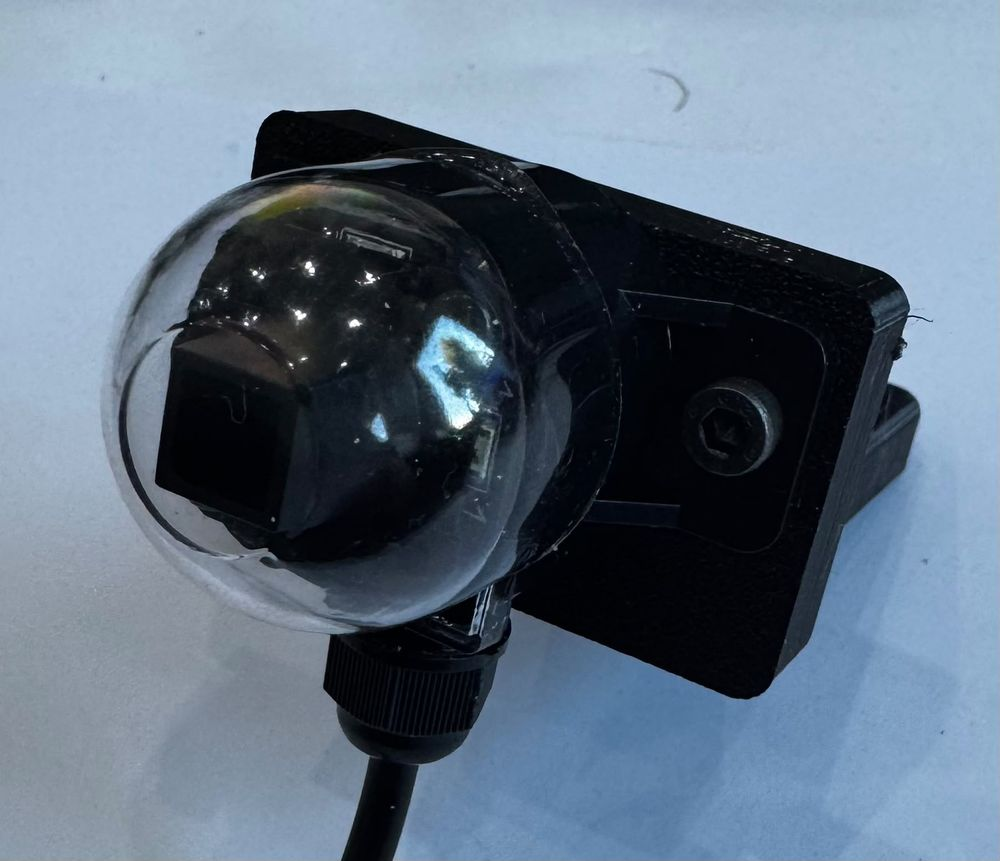
Producent dostarcza tylko szkic podłączenia. Dlatego trzy rzeczy są założeniami: że wyjście danego kierunku jest najwyższe, gdy słońce stoi w tym kierunku; że PÓŁNOC należy do górnej krawędzi modułu; i jak wysokie są sygnały przy pełnym słońcu. Uruchomienie sprawdza wszystkie trzy. Jeśli któryś kierunek się nie zgadza, można go zamienić w ustawieniach, bez przełączania przewodów.
Producent zaznacza, że czujnik pasuje przede wszystkim do jego własnego kontrolera. Dla innych systemów podaje dokładnie ten układ połączeń, którego używa Samba Solar Track: zasilanie 3,3 V i na każde wyjście 200 Ω do masy.
Na płytce RearCircuitBoard_10 zacisk J2 ma szósty biegun na ekran przedłużonego kabla czujnika. Ekran podłącz tylko tam, przy sterowniku, a nie przy czujniku.
5Płytka RearCircuitBoard_10
Płytka 10,1 cala jest umieszczona w metalowej obudowie. Płytka RearCircuitBoard_10 jest zamocowana od zewnątrz na jej tylnej ściance i połączona z płytką wyświetlacza długą listwą kołkową.
Listwa kołkowa J1 z 40 kołkami znajduje się na spodzie płytki. Przechodzi przez szczelinę w tylnej ściance do listwy gniazdowej J8 płytki wyświetlacza. Przez nią płyną dane (I2C), 3,3 V z płytki wyświetlacza, 5 V do płytki wyświetlacza i połączenie z anemometrem. Kabli między płytką a płytką wyświetlacza nie ma.
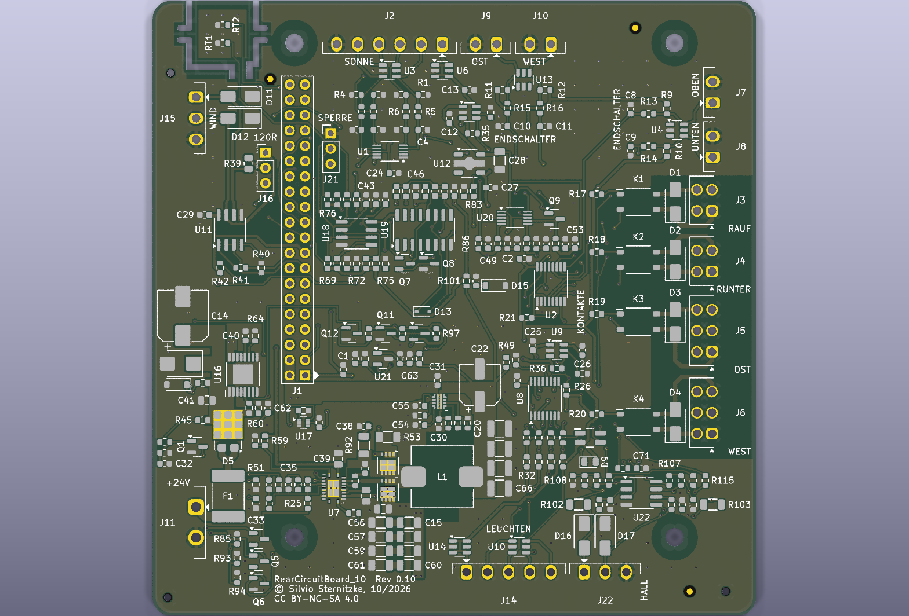
Co jest na płytce
| Zespół | Co robi |
|---|---|
| Wejście 24 V | Zacisk J11, samoresetujący się bezpiecznik F1, zabezpieczenie przed odwrotną polaryzacją D5, ochrona przepięciowa D6 i bezpiecznik elektroniczny U16. Przy przeciążeniu wyłącza po 4 ms i po około pół sekundy próbuje ponownie. Wyłącznik termiczny U17 wyłącza go powyżej 110 °C. |
| Przetwornica 5 V | Przetwornica obniżająca (LM5146 z dwoma tranzystorami) robi z 24 V około 5,05 V. Dostarcza w sposób ciągły 4 A, wystarczająco dla płytki wyświetlacza i ładowania akumulatora. Przy zwarciu wyłącza się i włącza cyklicznie (hiccup). |
| Bezpiecznik 5 V | Bezpiecznik elektroniczny U15 chroni 5 V do płytki wyświetlacza (próg 4,4 do 5,3 A) i nie przepuszcza prądu wstecz do przetwornicy. |
| Wyłączenie przepięciowe | Jeśli 5 V wskutek usterki wzrośnie powyżej około 6 V, układ samopodtrzymania wyłącza wejście 24 V i utrzymuje je wyłączone, dopóki nie odłączysz 24 V na co najmniej 30 sekund. |
| Blokada ładowania | Obniża 5 V do około 4 V, dopóki ładowanie akumulatora nie jest dozwolone (rozdział 7). Zworka J21: 2-3 = praca, 1-2 = wymuszenie blokady. |
| Pomiar światła | Układ pomiarowy ADS1115 (adres 0x48) z rezystorami pomiarowymi i ochroną przepięciową dla czterech wyjść czujnika słońca; własne zasilanie 3,3 V czujnika z ograniczeniem prądu. |
| Nadzór | Drugi ADS1115 (adres 0x49): temperatura przy tylnej ściance, 5 V na płytce wyświetlacza i czy ładowanie jest dozwolone. Tylko do odczytu, niczego nie przełącza. |
| Wyjścia przełączające i wyłączniki krańcowe | PCA9538 (0x70) z czterema bezpotencjałowymi stykami PhotoMOS i czterema wejściami wyłączników krańcowych. |
| Lampki sygnalizacyjne | Drugi PCA9538 (0x71) z lampkami BEREIT i FAIL na płytce i na zacisku J14; do tego sygnały ograniczników prądu i wejścia „24 V vorhanden“ (24 V obecne) i „5 V vorhanden“ (5 V obecne). |
| Anemometr | Układ RS485 THVD2410 z diodami ochronnymi na zacisku J15; rezystor terminujący przez zworkę J16. |
| Wejście impulsowe HALL | Zacisk J22 na dwa bezpotencjałowe styki (kanał A i B), przewidziany dla planowanej płytki HallTapBoard. Na każdy kanał jeden rezystor pull-up do 5 V, dioda ochronna przy zacisku, filtr i komparator (U22) z histerezą; przekazuje on sygnał z poziomem 3,3 V do GPIO29 i GPIO30 płytki wyświetlacza. Firmware 10-calowe obsługuje to wejście, gdy w USTAWIENIA włączona jest opcja „Odczyt Halla obecny“ (rozdział 8; tylko zbudowane i przetestowane na komputerze). |
Po włączeniu i po każdym restarcie wszystkie piny PCA9538 są przez chwilę „otwarte“ (wysoka impedancja). Wtedy wszystkie cztery styki są otwarte, a lampki ciemne, dopóki firmware ich nie przełączy. Gdy płytka wyświetlacza jest wyłączona swoim przełącznikiem suwakowym, styki również pozostają otwarte.
Czego firmware oczekuje od płytki
Tych danych potrzebuje firmware 10-calowe (w przygotowaniu). Są tutaj, aby płytka i firmware do siebie pasowały (reguła H7).
| Układ | Adres | Oczekiwanie |
|---|---|---|
| ADS1115 (czujnik słońca) | 0x48 | AIN0 wschód, AIN1 zachód, AIN2 południe, AIN3 północ, każdy 200 Ω do GND i 1 kΩ szeregowo. |
| ADS1115 (nadzór) | 0x49 | Zasilany z własnego zasilania 3,3 V płytki; bez 5 V (np. przy pracy z akumulatora) nieosiągalny, wtedy sterownik tylko ostrzega. AIN0 czujnik temperatury RT2, AIN1 połowa 3,3 V, AIN2 połowa napięcia na J8, AIN3 zezwolenie blokady ładowania. |
| PCA9538 (wyjścia przełączające) | 0x70 | IO0–IO3 styki RAUF, RUNTER, OST, WEST (W GÓRĘ, W DÓŁ, WSCHÓD, ZACHÓD; LOW = styk zamknięty), IO4–IO7 wyłączniki krańcowe (LOW = zamknięty = jazda dozwolona). Po resecie wszystkie piny są wejściami. |
| PCA9538 (lampki) | 0x71 | IO0 BEREIT, IO1–IO3 FAIL czerwony, zielony, niebieski (LOW = włączony); IO4/IO5 usterka ograniczników prądu (LOW = usterka); IO6 „24 V vorhanden“ (LOW = obecne), IO7 „5 V vorhanden“ (HIGH = obecne, także przy blokadzie ładowania). IO6 i IO7 używaj tylko jako wejścia, nigdy jako wyjście HIGH. |
| Wejście impulsowe J22 (U22) | – (bez I2C) | GPIO29 = kanał A (J1.19), GPIO30 = kanał B (J1.21), jako wejścia licznika impulsów (PCNT) ESP32-P4. Jego sterownik włącza wewnętrzny pull-up; to nie przeszkadza, ponieważ na płytce jest 10 kΩ do 3,3 V, a komparator steruje linią. Styk zamknięty = HIGH (sygnał Halla HIGH), otwarty lub brak wtyczki = LOW; stały poziom niczego nie zlicza. Po resecie bez znaczenia krytycznego. Zliczane jest każde zbocze obu kanałów (kwadratura), filtr zakłóceń 5 µs, oczekiwane 200 do 400, najwyżej około 1 000 impulsów na sekundę i kanał (założenie). Obsługiwane tylko, gdy włączona jest opcja „Odczyt Halla obecny“. |
| Dostęp zdalny | – | Przełącznik „ZDALNE STEROWANIE ZABLOK.“ należy do firmware (rozdział 8); płytka niczego w tym nie zmienia. |
Mocowanie
Mała wyspa miedzi z czujnikiem temperatury jest oddzielona szczelinami od reszty płytki, aby jej ciepło prawie do niej nie docierało. Wisi na wypustce (1,9 × 2,5 mm) i jest podparta po lewej i prawej stronie wąskim mostkiem z materiału płytki (wdrożone 11.10.2026: dwa mostki). Mimo to obowiązuje: trzymaj płytkę za krawędź, opuszczaj prosto i nie naciskaj na wyspę. Podkładki termoprzewodzące dociskaj tylko lekko. Jeśli wyspa mimo to się odłamie, czujnik przestaje mierzyć, a blokada ładowania akumulatora nie działa zgodnie z założeniem; płytki nie wolno wtedy używać z podłączonym akumulatorem.
- Wymień śrubyWykręcaj po kolei cztery śruby, które od zewnątrz przez tylną ściankę trzymają płytkę drukowaną płytki wyświetlacza, i zastępuj każdą tuleją dystansową M2,5 z gwintem zewnętrznym i wewnętrznym. Gwint zewnętrzny nie może być dłuższy niż stara śruba. Oczekiwane: Cztery tuleje trzymają płytkę drukowaną tak mocno jak wcześniej śruby.
- Połóż podkładkę termoprzewodzącą i tuleję dystansowąPołóż jedną podkładkę termoprzewodzącą (6 × 6 mm) na tylnej ściance pod wyspą miedzi w lewym górnym rogu płytki, postaw na niej mosiężną tuleję dystansową M3, a na niej drugą podkładkę. Przy odstępie 15 mm między płytką a tylną ścianką (obudowa 50 mm) pasuje tuleja 13 mm i dwie podkładki 1,0 mm, przy 9 mm (obudowa 40 mm) tuleja 6 mm i dwie podkładki 1,5 mm; przy innym odstępie wybór zależy od zmierzonego odstępu (rozdział 7). Oczekiwane: Tuleja stoi pionowo pod czterema kreskami nadruku na spodzie.
- Chwyć płytkę za krawędź i ustawChwytaj płytkę, elementami na zewnątrz, tylko za krawędź, nie w obszarze wyspy miedzi w lewym górnym rogu. Przytrzymaj ją nad tylną ścianką i sprawdź z boku, czy tuleja dystansowa stoi dokładnie pod czterema kreskami. Oczekiwane: Żaden palec ani narzędzie nie dotyka wyspy; tuleja stoi pod kreskami.
- Nasadź płytkęWsuń długą listwę kołkową J1 prosto i bez przekrzywiania przez szczelinę tylnej ścianki do listwy gniazdowej J8; naciskaj przy tym tylko bezpośrednio nad J1, nigdy na wyspę. Podkładki są przy tym tylko lekko ściskane. Oczekiwane: Cztery otwory płytki leżą nad tulejami, płytka opiera się na tulejach i na podkładce.
- PrzykręćPrzykręć płytkę czterema śrubami M2,5 do tulei, tylko umiarkowanie mocno. Łeb śruby i podkładka mogą mieć średnicę najwyżej 7 mm; zwykła podkładka M2,5 (ISO 7089) ma 6 mm. Oczekiwane: Płytka leży równo na wszystkich czterech tulejach i się nie chwieje; listwa kołkowa siedzi bez naprężeń w J8; tuleja dystansowa siedzi pewnie między podkładkami i się nie przesuwa.
Wysokość tulei i długość listwy kołkowej zależą od grubości tylnej ścianki i głębokości J8. Kołki powinny wchodzić w J8 na głębokość 2,5 do 4,0 mm. Odstęp między płytką a tylną ścianką określa tuleję dystansową i podkładki. Wszystko to mierzy się na dostarczonym urządzeniu; do tego czasu wymiary są założeniami. Cztery przygotowane otwory w tylnej ściance („reserved mounting holes“) leżą pod płytką i pozostają wolne.
Obudowa tylnej strony jest własnym projektem do druku 3D (folder cover/): tak duża jak tylna ścianka wyświetlacza (245,2 × 164 mm). Do wyboru są dwie głębokości; każda ma własne pliki z _50mm lub _40mm w nazwie:
- Głębokość 50 mm: Płytka jest 15 mm nad tylną ścianką wyświetlacza (listwa kołkowa J1 21 mm, tuleje dystansowe M2,5 × 12 + 6); w tej szczelinie biegną kable do dławików. Dławiki są wysoko na ściance, na wysokości szczeliny.
- Głębokość 40 mm: Płytka jest 9 mm nad tylną ścianką (listwa kołkowa J1 15 mm, C52461). Dławiki są w połowie wysokości ścianki. Przy odstępie 15 mm płytka nie mieści się w tej obudowie.
Kable wchodzą od dołu przez sześć dławików kablowych PG 11 (otwór 18,9 mm). Obudowa jest zbudowana tak, że obraz jest właściwą stroną do góry, gdy dławiki są na dole, a otwory na zawieszenie u góry (stan 28.10.2026; z poprzednią obudową obraz był do góry nogami; założenie do czasu montażu w nowej obudowie). Mocuje się ją śrubami M2,5 w ośmiu otworach na krawędzi tylnej ścianki, na ścianie wisi na dwóch ukrytych otworach na zawieszenie (śruba Ø 4 mm). Drukuje się dnem w dół. Dla Creality K2 Plus z Hyper PETG-CF dołączone są gotowe projekty druku, dla każdej głębokości po jednym dla dyszy 0,4 mm i 0,6 mm (np. Rueckgehaeuse_ESP32-P4_10.1_50mm_K2Plus_HyperPETG-CF_0.4mm.3mf, analogicznie _40mm_… i …_0.6mm.3mf): 5 ścianek, po 6 warstw górnych i dolnych, wypełnienie gyroid, podpory tylko od stołu. Otwory na zawieszenie drukują się bez podpór. Otwory na dławiki nie dostają podpór i u góry mogą lekko opadać; wtedy rozwierć je. Przed drukiem sprawdź podgląd w programie do druku (założenie: niesprawdzone w programie do druku). Według obliczeń płytka się mieści; czy nakrętki dławików mają w środku wystarczający odstęp od wtyczek płytki, pokaże dopiero próba dopasowania (założenie).
6Podłączenie i okablowanie
Wszystkie zaciski płytki są rozłączne: żyły trafiają do luźnej wtyczki, a wtyczka na płytkę. Dzięki temu płytkę można wymienić bez odłączania żył.
Tam, gdzie ten rozdział wymienia ustawienia na wyświetlaczu (np. w USTAWIENIA), są one zawarte w firmware dla płytki 10,1 cala, ale nie zostały jeszcze sprawdzone na urządzeniu (rozdział 8).
Zaciski płytki
| Zacisk | Nadruk | Przyporządkowanie |
|---|---|---|
| J2 | SONNE | 1 = 3,3 V (czarna), 2 = wschód (czerwona), 3 = zachód (biała), 4 = południe (żółta), 5 = północ (zielona), 6 = ekran |
| J3, J4 | RAUF, RUNTER | Wyjścia przełączające elewacji: dwurzędowe z 2 × 2 kołkami, jeden styk bezpotencjałowy między dwoma kołkami leżącymi naprzeciw siebie po przekątnej (Rys. 12) |
| J5, J6 | OST, WEST | Wyjścia przełączające azymutu: dwurzędowe z 2 × 3 kołkami, styk między dwoma zewnętrznymi kołkami leżącymi naprzeciw siebie po przekątnej (Rys. 12) |
| J7, J8 | OBEN, UNTEN | Wyłączniki krańcowe elewacji (prawa krawędź): 1 = sygnał, 2 = GND |
| J9, J10 | OST, WEST | Wyłączniki krańcowe azymutu (górna krawędź, obok J2): 1 = sygnał, 2 = GND |
| J11 | +24V | 1 = +24 V, 2 = minus (większa wtyczka, raster 5,08 mm) |
| J14 | LEUCHTEN | 1 = plus obu lampek, 2 = czerwony, 3 = zielony, 4 = niebieski (FAIL), 5 = minus lampki BEREIT |
| J15 | WIND | Anemometr: 1 = A, 2 = B, 3 = GND |
| J16 | 120R | Zworka rezystora terminującego: 1-2 = włączony, 2-3 = wyłączony |
| J21 | SPERRE | Zworka blokady ładowania: 2-3 = praca, 1-2 = wymuszenie blokady (tylko do kontroli) |
| J22 | HALL | Wejście impulsowe dla HallTapBoard (zob. niżej): 1 = kanał A, 2 = kanał B, 3 = GND i ekran; tylko styki bezpotencjałowe, bez zasilania |
Każda wtyczka należy do dokładnie swojego zacisku, równo, ze wszystkimi kołkami we wtyczce i bez przesunięcia o jeden kołek. Szczególnie na górnym końcu J7, na końcu J10 i na obu końcach J14 wtyczka z większą liczbą biegunów może wystawać poza zacisk, i nie będzie tego widać. Wtedy żyły są na niewłaściwych kołkach: trzybiegunowa wtyczka na J7 może wprowadzić wejście wyłącznika krańcowego w niejasny stan, sześciobiegunowa wtyczka czujnika na końcu J14 kładzie żyłę czujnika na biegun plus lampek. Płytka nie ma przed tym już własnej ochrony; liczy się wyłącznie twoja staranność.
Dlatego zawsze tak: Przed wkładaniem lub wyjmowaniem wtyczek odłącz zasilanie napędów. Każdą wtyczkę opisz tak samo jak jej zacisk. Najpierw włóż J2, J14 i J15, wtyczki wyjść przełączających na końcu. Przed pierwszym włączeniem i po każdym przełożeniu wtyczek wykonaj krok kontrolny z rozdziału 9 (krok 3).
Wtyczka dla 24 V jest większa (raster 5,08 mm) i nie pasuje do żadnego innego zacisku; zacisk J11 ma ścianki czołowe, dlatego nie da się jej też włożyć z przesunięciem. Wtyczki wyjść przełączających są dwurzędowe i nie pasują do żadnego zacisku jednorzędowego. Jeśli wtyczka jednorzędowa zostanie włożona w jeden rząd J3 do J6, dotyka najwyżej jednego kołka stykowego i niczego nie przełącza. Zamienione wtyczki RAUF i RUNTER albo OST i WEST również niczego nie przełączają: napęd nie jedzie. Wszystko to wynika z rysunków producenta i zostanie sprawdzone na prototypie.
Dwubiegunowe wtyczki wyłączników krańcowych (J7 do J10) są między sobą jednakowe: jeśli zostaną zamienione, napęd przejedzie poza położenie krańcowe, aż zatrzyma go maksymalny czas pracy. Wtyczki dwubiegunowe pasują też do J2, J14 i J15, wtyczka anemometru także do J2 i J14, wtyczka lampek także do J2. Wtedy czujnik słońca podaje błędne wartości, lampki pokazują coś błędnego albo anemometr jest uznawany za uszkodzony. Zaciski J15 (WIND) i J22 (HALL) są jednakowe: oba trzybiegunowe, oba z A, B i GND. Po zamianie nic się nie psuje, ale anemometr jest wtedy uznawany za uszkodzony. Wtyczki dwubiegunowe pasują także do J22.
Zasilanie: jeden zasilacz dla sterownika i napędów
Sterownik potrzebuje tylko jednego źródła prądu: 24 V napięcia stałego na zacisku J11. Płytka robi z tego 5 V i przekazuje je przez listwę kołkową J1 do płytki wyświetlacza. Kabel do płytki wyświetlacza nie jest potrzebny.
Zalecany jest jeden wspólny, mocny zasilacz 24 V blisko napędów, w Samba-Solar-Rack przy skrzynce sterowniczej z sterownikiem synchronicznym HAKIWO SCN4. Stamtąd każdy odbiornik dostaje własny przewód z własnym bezpiecznikiem (okablowanie gwiaździste): napędy krótki, gruby przewód, sterownik cieńszy o długości do 15 m, HallTapBoard mały. Dzięki temu prąd silników nigdy nie płynie przewodem sterownika, a jego napięcie pozostaje spokojne, gdy napędy ruszają. Dwa oddzielne zasilacze (jeden dla sterownika i czujników, jeden dla napędów) są również dozwolone.
- Wszystko pozostaw bez napięciaZasilacz pozostaje wyłączony, dopóki nie zostaną wykonane wszystkie poniższe kroki. Stronę 230 V podłącza wykwalifikowany elektryk. Oczekiwane: Na wyjściu zasilacza nie ma napięcia.
- Ustaw napięcie wyjściowePo podłączeniu przez elektryka włącz zasilacz raz bez odbiorników i zmierz napięcie wyjściowe multimetrem. Jeśli ma regulację, ustaw na 24,0 V. Potem znów wyłącz. Oczekiwane: 23,8 do 24,0 V, nigdy więcej niż 24,0 V (anemometry według karty katalogowej znoszą najwyżej 24 V).
- Załóż bezpiecznikiBezpośrednio przy zaciskach wyjściowych zasilacza umieść w żyłach plus trzy oprawy bezpiecznikowe: 25 A dla napędów (przy rackach z jednym napędem wartość z jego instrukcji montażu), 2 A dla sterownika, 0,5 do 1 A (zwłoczny, propozycja) dla HallTapBoard. Oczekiwane: Każdy przewód ma własny bezpiecznik; żaden cienki przewód nie wisi za bezpiecznikiem 25 A.
- Ułóż przewód do sterownikaDwie żyły 1,5 mm² od zasilacza do sterownika, najwyżej 15 m. Oznacz plus i minus na obu końcach. Nie odgałęziaj go razem z przewodem napędów na wspólnym zacisku. Oczekiwane: Przewód zaczyna się na zaciskach zasilacza i kończy na wtyczce J11.
- Żyły do wtyczki J11Plus na styk 1, minus na styk 2. Przykręć żyły w odłączonej wtyczce, dopiero potem ją włóż. Oczekiwane: Obie żyły siedzą mocno, nie wystaje goły metal.
- Włóż wtyczkęWłóż wtyczkę do oporu w J11. Oczekiwane: Siedzi mocno między ściankami czołowymi.
| Punkt | Co obowiązuje |
|---|---|
| Zasilacz | 24 V napięcia stałego, wystarczająco duży na wszystko: w Samba-Solar-Rack 2.0-E Plus z SCN4 napędy potrzebują razem typowo 12 do 14 A, najwyżej 20 A (granica SCN4, 2 × 10 A), sterownik około 1 A (z ładowaniem akumulatora). Dlatego zalecane jest 600 W / 25 A, np. Mean Well HLG-600H-24A (według producenta IP65; dla IP67 sprawdź dane w karcie katalogowej wybranego urządzenia). Wyjście dopuszczone dla SELV. |
| Zachowanie przy przeciążeniu | Zasilacz o mocy tylko 500 W wchodzi w grę tylko wtedy, gdy przy przeciążeniu ogranicza prąd i dalej zasila (ograniczenie prądu, CV+CC). Urządzenie, które przy przeciążeniu wyłącza się i uruchamia ponownie (hiccup), przy każdym szczycie rozruchowym odbiera prąd także sterownikowi; płytka wyświetlacza pracuje wtedy z akumulatora. |
| Napięcie | Ustaw wyjście na 24,0 V. Nie wyżej: anemometry wiszą na tym samym zasilaniu i według karty katalogowej znoszą najwyżej 24 V. Płytka jest zaprojektowana na 24 V ± 5 % (22,8 do 25,2 V); na J11 po 15 m przewodu dociera około 23,65 V, bez obciążenia pełne 24,0 V. Trwale nigdy powyżej 30 V. Przy zaledwie 20 V bezpiecznik F1 w upale nie wystarcza na pełny prąd. |
| Przewody pomiarowe | Jeśli zasilacz ma przyłącza przewodów pomiarowych (Remote Sense), pozostają one przy zasilaczu, tak jak opisano w karcie katalogowej. Nigdy nie prowadź ich do napędów: wtedy zasilacz kompensowałby spadek na przewodzie silnika i podniósłby napięcie na J11 za wysoko. |
| Miejsce montażu | W cieniu, pionowo, kable w dół (przy racku jak w instrukcji montażu, rozdział 12.1, wariant B). W upale zasilacz dostarcza mniej (obniżenie mocy, krzywa w karcie katalogowej). |
| Bezpiecznik F1 | Resetuje się sam. Jeśli zadziałał, odłącz 24 V, usuń przyczynę i odczekaj około minuty. |
| Po wyłączeniu przez przepięcie | Odłącz 24 V na co najmniej 30 sekund, potem włącz ponownie. Jeśli płytka potem znów się wyłączy, jest uszkodzona. |
| PC na gnieździe „UART“ | PC zasila płytkę wyświetlacza dodatkowo przez USB. Poniżej 10 °C nie podłączaj kabla USB: akumulator byłby wtedy ładowany mimo blokady ładowania (rozdział 7). |
| Anemometr | Może być podłączony na końcu przewodu do sterownika, np. przez małą kostkę rozdzielczą obok sterownika; jego prąd jest mały. |
| Napędy | Przez płytkę nie płynie prąd silnika. Napędy wraz ze sterownikiem synchronicznym dostają własny, krótki przewód od zasilacza z bezpiecznikiem 25 A. Przy dwóch zasilaczach wiszą na własnym. |
Spadek napięcia na przewodzie napędów (obliczony z żyłą doprowadzającą i powrotną, miedź). Orientacyjnie przy pełnym prądzie powinno ginąć najwyżej około 1 V (założenie, producent nie podaje wartości). Dlatego zasilacz stoi przy napędach: długi przewód do sterownika przenosi tylko około 1 A.
| Przekrój i długość | przy 14 A | przy 20 A |
|---|---|---|
| 4 mm², 2 m | 0,25 V | 0,35 V |
| 4 mm², 3 m | 0,37 V | 0,53 V |
| 4 mm², 5 m | 0,61 V | 0,88 V |
| 6 mm², 5 m | 0,41 V | 0,58 V |
| 6 mm², 10 m | 0,82 V | 1,17 V |
| 4 mm², 15 m (dla porównania: zasilacz daleko) | 1,84 V | 2,62 V |
Żyły minus wszystkich przewodów spotykają się na zacisku minus zasilacza. Dlatego między masą sterownika a masą SCN4 jest tylko niewielka różnica: najwyżej około 0,2 V na żyle minus sterownika i około 0,26 V na żyle minus napędów (3 m, 4 mm², 20 A), obliczone. Skacze ona jednak przy każdym rozruchu silników. Dlatego HallTapBoard nadal oddziela obie strony transoptorami. Nie twórz drugiego połączenia między masą sterownika a skrzynką sterowniczą, np. przez ekran kabla.
Wejście „24 V vorhanden“ (24 V obecne) płytki mierzy napięcie na J11. Przy wspólnym zasilaczu pokazuje więc także, gdy zasilacz ulegnie awarii (albo przewód do sterownika lub jego bezpiecznik). Nie pokazuje jednak, gdy zadziałał tylko bezpiecznik napędów albo przewód do SCN4 jest przerwany. To ma później rozpoznawać odczyt Halla (HallTapBoard na J22, w opracowaniu). Przy dwóch zasilaczach wejście zgłasza tylko napięcie sterownika. Obsługiwane będzie dopiero przez późniejsze firmware 10-calowe (dziś jeszcze nie).
Wtedy płytka wyświetlacza pracuje dalej z akumulatora (rozdział 7), ale napędy stoją. Styki przełączające nadal przełączają i niczego nie poruszają. Bez wyłączników krańcowych firmware może przy tym zapamiętać błędne położenie krańcowe i błędne pochylenie; dlatego przy burzy, awarii anemometru i parkowaniu ponownie jedzie do poziomu (rozdział 8). Jeśli zasilacz ulegnie awarii podczas burzy, moduł pozostaje tam, gdzie właśnie jest. Tego żaden sterownik nie może zrównoważyć.
Czujnik słońca na ADS1115
Każde z czterech wyjść czujnika słońca daje sygnał, który rośnie z jasnością. Rezystor 200 Ω do masy, określony przez producenta czujnika, zamienia go na napięcie. Układ pomiarowy ADS1115 je mierzy: im jaśniej, tym wyżej.
Cztery wyjścia przełączające
Płytka RearCircuitBoard_10 wydaje polecenia jazdy przez cztery styki przełączające: RAUF, RUNTER, OST i WEST (w górę, w dół, wschód, zachód). Każdy styk jest bezpotencjałowy, czyli jest tylko przełącznikiem z dwoma przyłączami, bez połączenia z resztą elektroniki. Znosi do 30 V i 1 A; powyżej 33 V przewodzi dioda ochronna równoległa do styku. To wystarcza dla sygnałów sterujących i cewek przekaźników, nie dla silnika. Dlatego prąd silnika nigdy nie płynie przez płytkę.
Sposób podłączenia styków zależy od napędu. Są dwa warianty i możesz dla każdej osi osobno wybrać, którego używasz:
Wariant A: kontroler z wejściem przyciskowym
Napęd ma własne urządzenie sterujące z przyłączami dla dwóch przycisków. Styki płytki zastępują przyciski. Przykład: kontroler synchronizacji dla dwóch napędów (Rys. 10).
Wariant B: zewnętrzne przekaźniki mocy
Napęd ma tylko dwa przewody silnika. Styki płytki przełączają dwa przekaźniki mocy, które zmieniają biegunowość silnika (Rys. 8).
| Oś | Styki płytki | Wariant A | Wariant B |
|---|---|---|---|
| Elewacja | RAUF (IO0), RUNTER (IO1) | RAUF do UP i COM, RUNTER do DOWN i COM | RAUF przełącza przekaźnik 1, RUNTER przełącza przekaźnik 2 |
| Azymut | OST (IO2), WEST (IO3) | OST do UP i COM, WEST do DOWN i COM | OST przełącza przekaźnik 1, WEST przełącza przekaźnik 2 |
Dla sterownika oba warianty są jednakowe: zamyka styk, dopóki ma się jechać, i otwiera go, aby zatrzymać. Wyboru dokonujesz wyłącznie okablowaniem. Elewacja i azymut mogą też być podłączone różnie. Dla każdej osi trzeba dopasować tylko maksymalny czas pracy i informację, czy podłączone są wyłączniki krańcowe (rozdział 8).
Wariant B: zewnętrzne przekaźniki mocy (zmiana biegunowości)
Siłownik liniowy jedzie w jedną stronę, gdy plus jest na przewodzie A, i w drugą, gdy plus jest na przewodzie B. Dwa przekaźniki mocy ze stykiem przełącznym zamieniają bieguny. Znajdują się poza płytką RearCircuitBoard_10, np. jako gotowy moduł przekaźników w skrzynce sterowniczej. Ich cewki są włączane i wyłączane przez styki przełączające płytki.
| Przekaźnik 1 | Przekaźnik 2 | Przewód A | Przewód B | Silnik |
|---|---|---|---|---|
| wył. | wył. | GND | GND | stoi (hamowany) |
| wł. | wył. | +12 V | GND | jedzie w kierunku 1 |
| wył. | wł. | GND | +12 V | jedzie w kierunku 2 |
| wł. | wł. | +12 V | +12 V | stoi. Brak zwarcia, ale w firmware to nigdy nie występuje. |
Nawet gdyby oba przekaźniki zadziałały jednocześnie, nie powstaje zwarcie zasilacza. Układ jest bezpieczny sam z siebie, a firmware dodatkowo zapobiega takiej sytuacji.
Przy wyłączaniu cewki przekaźnika powstaje szpilka napięcia, która może zniszczyć styk przełączający płytki. Weź przekaźniki lub moduły przekaźników z wbudowaną diodą gaszącą albo przylutuj diodę równolegle do cewki. Napięcie cewki może wynosić najwyżej 30 V, np. 12 V lub 24 V.
Przyporządkowanie na PCA9538
W trybie „tylko pionowo“ wyjścia i wejścia wyłączników krańcowych azymutu pozostają nieużywane.
| Pin | Funkcja | Kierunek |
|---|---|---|
IO0 | Styk elewacji RAUF | Wyjście |
IO1 | Styk elewacji RUNTER | Wyjście |
IO2 | Styk azymutu OST | Wyjście |
IO3 | Styk azymutu WEST | Wyjście |
IO4 | Wyłącznik krańcowy elewacji górny | Wejście |
IO5 | Wyłącznik krańcowy elewacji dolny | Wejście |
IO6 | Wyłącznik krańcowy azymutu wschód | Wejście |
IO7 | Wyłącznik krańcowy azymutu zachód | Wejście |
Wyłączniki krańcowe
Wyłącznik krańcowy znajduje się na końcu drogi przejazdu i jest naciskany, gdy moduł tam dojedzie. Używany jest styk rozwierny (NC): normalnie obwód jest zamknięty, w położeniu krańcowym się otwiera.
Na długim przewodzie impuls zakłócający może na chwilę sprawić, że wejście wygląda na „zamknięte“. Dlatego sterownik reaguje niesymetrycznie: gdy wyłącznik się otworzy, blokuje natychmiast. Kierunek zostaje ponownie odblokowany dopiero wtedy, gdy wyłącznik był nieprzerwanie zamknięty przez jedną dziesiątą sekundy.
Wiele siłowników liniowych samo wyłącza się na końcu skoku. Wtedy możesz zrezygnować z zewnętrznych wyłączników krańcowych i na wyświetlaczu w USTAWIENIA ustawić „Wyłącznik krańcowy …“ dla tej osi na NIE. Sterownik przyjmuje wtedy, że po upływie maksymalnego czasu pracy położenie krańcowe zostało osiągnięte.
Wariant A: kontroler z wejściem przyciskowym
Niektóre napędy mają własne urządzenie sterujące, do którego można podłączyć dwa przyciski. Najważniejszym przykładem jest kontroler synchronizacji. Duży moduł jest często podnoszony jednocześnie przez dwa siłowniki liniowe. Aby się nie zakleszczył, oba muszą jechać dokładnie tak samo szybko. Zajmuje się tym kontroler synchronizacji: zasila oba napędy i na bieżąco je wyrównuje. Dla elewacji przewidziany jest prawdopodobnie taki zestaw z dwoma napędami 3500 N.
Kontroler ma wejście na dwa przyciski, GÓRA i DÓŁ (zacisk C1 z przewodami UP, DOWN i COM). Samba Solar Track „naciska“ te przyciski dwoma stykami przełączającymi płytki RearCircuitBoard_10. Prąd silnika płynie przy tym tylko przez kontroler.
To samo okablowanie obowiązuje dla azymutu, jeśli także tam pracuje kontroler z wejściem przyciskowym: wtedy styki OST (IO2) i WEST (IO3) idą do jego wejścia przyciskowego.
Kontroler występuje w dwóch wersjach. Dla Samba Solar Track musi to być tryb chwilowy (momentary): napędy jadą tylko, dopóki styk jest zamknięty. W trybie zatrzaskowym (samopodtrzymanie) wystarczy krótki impuls, a napędy jadą do końca. Jeśli sterownik wtedy ulegnie awarii, nikt ich już nie zatrzyma. Tej wersji firmware nie obsługuje. Dotyczy to każdego kontrolera z wejściem przyciskowym, zarówno przy elewacji, jak i przy azymucie.
| Punkt | Co trzeba zrobić |
|---|---|
| Styki | Styki przełączające płytki są już bezpotencjałowymi stykami zwiernymi. Styk RAUF (IO0) do UP i COM, styk RUNTER (IO1) do DOWN i COM. |
| Czas pracy | Oblicz na nowo „Maks. czas pracy elewacji“ i ustaw go w USTAWIENIA: skok podzielony przez prędkość, plus 20 %. Przykład: 300 mm skoku przy 5 mm/s to 60 sekund, ustawia się 72 sekundy. |
| Wyłączniki krańcowe | Napędy same wyłączają się na końcu skoku. Bez dodatkowych wyłączników krańcowych ustaw w USTAWIENIA „Wyłącznik krańcowy elewacji“ na NIE. |
| Kierunek jazdy | Jeśli moduł przy RAUF jedzie w dół, zamień przewody UP i DOWN. |
| Pilot | Pilot radiowy i manipulator kontrolera działają z pominięciem Samba Solar Track. Kto nimi jeździ, może zakłócić ochronę przed burzą. Najlepiej używać ich tylko do konfiguracji. |
Trzy rzeczy nie wynikają z opisu produktu i dlatego są założeniami: czy kontroler po zaniku zasilania potrzebuje najpierw jazdy resetującej przez manipulator, jak reaguje na dwa jednocześnie zamknięte styki (firmware nigdy nie zamyka obu) i jakie napięcie jest na zacisku C1.
Element na wyjściu przełączającym może z latami zestarzeć się tak, że styk nie otwiera się już całkowicie. Sterownik tego nie zauważy. Dlatego napędy muszą mieć własne wyłączniki krańcowe w obwodzie silnika, które na końcu skoku same przerywają prąd silnika. W wariancie B dodatkowo w obwód cewek przekaźników należy wstawić bezpiecznik.
Anemometr na RS485
Anemometr podłącza się do zacisku J15 płytki (1 = A, 2 = B, 3 = GND). Układ RS485 do tego ma płytka, sama płytka wyświetlacza go nie ma. Przewidziane są czujniki ACOVMELST: czujnik prędkości wiatru (fabrycznie adres 3) oraz, dla typu z kierunkiem wiatru, dodatkowo czujnik kierunku wiatru (fabrycznie adres 4). Oba wiszą obok siebie na tym samym zacisku.
Producent ostrzega: jeśli anemometr zostanie podłączony pod napięciem, może się spalić. Najpierw wyłącz zasilacz, potem podłączaj. Anemometry znoszą najwyżej 24 V, dlatego zasilacz jest ustawiony na 24,0 V (rozdział 6).
| Punkt | Co trzeba zrobić |
|---|---|
| Żyły | Według karty katalogowej: czerwona = plus, czarna = minus, żółta = A, zielona = B. |
| A i B | Żółta (A) anemometru do J15.1, zielona (B) do J15.2. Przy typie z kierunkiem wiatru żyły obu czujników idą równolegle na te same styki, A do A i B do B. Po zamianie nic się nie psuje, anemometr po prostu nie odpowiada. Nawet jeśli w kablu 24 V trafi na A lub B, układ nie ulegnie uszkodzeniu. |
| Zasilanie | Z zasilacza 24 V, najprościej na końcu przewodu do sterownika. Oba czujniki według karty katalogowej znoszą 5 do 24 V, najwyżej 24 V. |
| Masa | Minus anemometru do J15.3, jeśli ma własny zasilacz; jeśli wisi na zasilaniu sterownika, masa jest już połączona. |
| Rezystor terminujący | Zworka J16 na 1-2 (włączony), gdy sterownik jest na końcu linii, w przeciwnym razie 2-3. Drugi koniec linii otrzymuje przy ostatnim czujniku rezystor 120 Ω między A i B (zalecenie producenta). |
| Montaż | Strzałka na stopie czujnika kierunku wiatru wskazuje północ. |
Uchwyt wahadłowy anemometru
Anemometr mierzy poprawnie tylko wtedy, gdy stoi pionowo; na stole przechylnym porusza się jednak wszystko, co jest na nośniku modułu. Do tego służy uchwyt wahadłowy, który utrzymuje anemometr pionowo przy każdym pochyleniu stołu. Nie należy on do Samba Solar Track i będzie później dostępny jako instrukcja budowy, gotowa część lub zestaw do samodzielnego montażu.
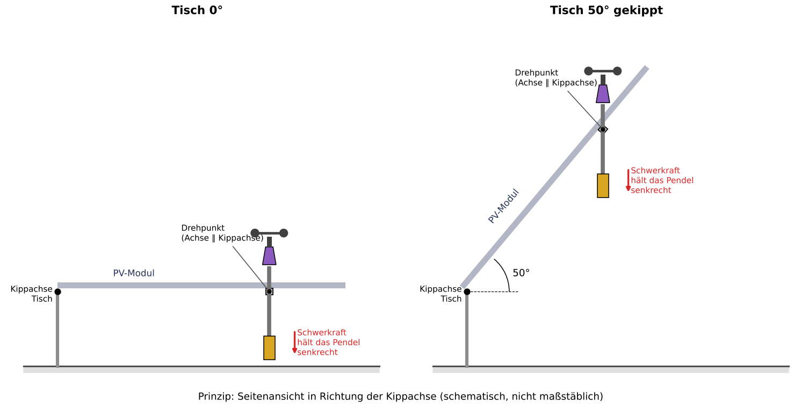
Lampki w obudowie
Na płytce są lampki sygnalizacyjne BEREIT (zielona) i FAIL (trójkolorowa). Dla drugiej lampki na zewnątrz obudowy obie są wyprowadzone na pięciobiegunowy zacisk J14: biegun 1 to wspólny plus obu lampek (najprościej zlutować je razem w obudowie i poprowadzić jedną żyłę do bieguna 1), bieguny 2 do 4 to czerwony, zielony i niebieski lampki FAIL, biegun 5 to minus lampki BEREIT.
| Punkt | Co trzeba zrobić |
|---|---|
| Jakie lampki | Zwykłe diody LED bez wbudowanego rezystora szeregowego; dla FAIL dioda RGB ze wspólną anodą. Rezystory szeregowe są na płytce. |
| Długość przewodów | Tylko krótkie przewody w obudowie. |
| Zwarcie | Nie szkodzi: zasilanie lampek jest ograniczone do około 135 mA. |
| Przy blokadzie ładowania | Jest tylko około 4 V; lampki mogą wtedy świecić nieco ciemniej (założenie). |
Wejście impulsowe HALL (J22)
Firmware 10-calowe obsługuje J22, gdy w USTAWIENIA włączona jest opcja „Odczyt Halla obecny“ (pochylenie z odczytem Halla); jest to tylko zbudowane i przetestowane na komputerze. Przewidziana do tego płytka HallTapBoard jest dopiero projektem (zob. niżej). Bez HallTapBoard J22 pozostaje wolny, a odczyt Halla wyłączony. Układ jest sprawdzony tylko na komputerze, nie wyprodukowany i nie zmierzony.
Co to jest? J22 to trzybiegunowy zacisk wtykowy na dolnej krawędzi płytki, po prawej obok zacisku LEUCHTEN (J14), nadruk „HALL“. Tu dochodzą dwa bezpotencjałowe styki: przełączniki bez własnego napięcia, np. wyjście transoptora. Wejście jest przeznaczone dla planowanej płytki HallTapBoard. Ta mała płytka ma przy sterowniku synchronicznym HAKIWO SCN4 odbierać impulsy czujników Halla w napędach i przekazywać je przez transoptory, galwanicznie oddzielone, jako dwa styki (kanał A i B). Sterownik zlicza, jak często te styki się zamykają i otwierają, i rozpoznaje po tym, czy i jak daleko porusza się napęd (rozdział 8).
Co robi do tego płytka: Sama podaje na każdą żyłę małe napięcie kontrolne (5 V przez 4,7 kΩ) i rozpoznaje, czy styk jest otwarty czy zamknięty. Dioda ochronna przy zacisku, filtr i komparator z histerezą czynią wejście niewrażliwym na zakłócenia na długich przewodach. Jest zaprojektowane na 15 m kabla i do 5 000 impulsów na sekundę i kanał (założenie, częstotliwość impulsów napędów nie została jeszcze zmierzona).
| Biegun J22 | Sygnał | Idzie do |
|---|---|---|
| 1 | Kanał A (styk względem bieguna 3) | GPIO29 płytki wyświetlacza (J1 pin 19) |
| 2 | Kanał B (styk względem bieguna 3) | GPIO30 płytki wyświetlacza (J1 pin 21) |
| 3 | GND: wspólny przewód powrotny obu styków i ekran | Masa płytki |
Nigdy nie podawaj sygnałów Halla napędów bezpośrednio ze sterownika synchronicznego SCN4 na J22. Przewód czujników SCN4 jest przewidziany tylko na 4 m, jego masa wisi na żyle minus napędów i skacze wraz z prądem silnika (przesunięcie masy, także przy wspólnym zasilaczu), a błędne zliczanie mogłoby później doprowadzić do skręcenia ramy. Połączenie wykonuje się tylko przez HallTapBoard z jego transoptorami.
Do J22 nie należy podłączać napięcia zasilania ani czujnika, który oczekuje stąd prądu; płytka nie dostarcza tam zasilania. Jeśli przez pomyłkę żyła z 24 V trafi na biegun 1 lub 2, płytka zniesie to nawet trwale. Na biegunie 3 (przewód powrotny) natomiast zwiera obce źródło napięcia.
Tak podłączasz kabel z HallTapBoard do J22, gdy tylko HallTapBoard będzie dostępny:
- Odłącz napięcie od sterownikaWyłącz zasilacz 24 V (albo wyjmij bezpiecznik przewodu do sterownika). Oczekiwane: Lampka BEREIT jest zgaszona, wyświetlacz ciemny lub w trybie pracy z akumulatora. Także przy pracy z akumulatora możesz bezpiecznie pracować dalej, ponieważ na J22 jest najwyżej 5 V.
- Przygotuj kabelWeź ekranowany kabel z trzema żyłami (np. LiYCY 3 × 0,25 mm²), o długości najwyżej 15 m. Odizoluj żyły na tyle, aby goły koniec całkowicie znikał w miejscu zacisku wtyczki (około 6 do 7 mm, założenie, sprawdź na wtyczce), ekran skręć. Oczekiwane: trzy gołe końce żył i jeden skręcony koniec ekranu, żaden drut nie jest nacięty.
- Obsadź wtyczkęWtyczka KF2EDGK-3.5-3P: biegun 1 = kanał A, biegun 2 = kanał B, biegun 3 = wspólny przewód powrotny i ekran. Biegun 1 jest oznaczony na płytce trójkątem; patrząc na urządzenie od tyłu, jest po lewej. Mocno dokręć każdą śrubę i opisz wtyczkę „J22 HALL“. Oczekiwane: Każda żyła siedzi mocno, żaden drucik miedzi nie wystaje.
- Podłącz drugą stronęNa HallTapBoard to samo przyporządkowanie: A, B i wspólny przewód powrotny. Ekranu tam nie podłączaj. Oczekiwane: Ekran jest podłączony tylko do J22 biegun 3.
- Włóż wtyczkę do J22Do zacisku z nadrukiem „HALL“, nie do J15 „WIND“, który również ma trzy bieguny. Oczekiwane: Wtyczka siedzi równo na listwie podstawowej, żaden kołek nie jest wolny.
- Wyklucz zwarcieJeszcze bez napięcia zmierz multimetrem (rezystancja) między biegunem 1 a biegunem 3 oraz między biegunem 2 a biegunem 3. Oczekiwane: brak zwarcia (żadnej wartości bliskiej 0 Ω). Transoptor przewodzi tylko wtedy, gdy sam HallTapBoard jest zasilany; bez napięcia multimetr pokazuje więc zwykle wysoką rezystancję.
- Włącz i zmierzWłącz ponownie zasilacz 24 V, napędy stoją. Zmierz napięcie stałe między biegunem 1 a biegunem 3, potem między biegunem 2 a biegunem 3. Oczekiwane: około 5 V przy otwartym styku, około 1 V przy zamkniętym (HallTapBoard ma 1 kΩ szeregowo ze stykiem). Zależnie od położenia napędu może wystąpić każda z obu wartości. Podczas jazdy wartość skacze zbyt szybko dla multimetru; pokazuje on wtedy jakąś wartość pośrednią.
Nie prowadź kabla razem z przewodami silnika w jednym kablu, tam gdzie da się je rozdzielić. Ekran podłącz tylko do J22 biegun 3.
Częstotliwość impulsów napędów, czas przełączania transoptorów HallTapBoard i pojemność kabla są założeniami, dopóki nie zostaną zmierzone. Z transoptorami HallTapBoard (projekt 0.5) wystarcza to na pewno dla 1 000 impulsów na sekundę, nie dla 5 000, na które zaprojektowany jest sam J22. Czy wtyczka i wyjście kabla u dołu obok J14 zmieszczą się w obudowie (u dołu zostaje około 9 mm), zostanie sprawdzone na prototypie.
HallTapBoard w skrzynce sterowniczej (projekt 0.5, w planowaniu)
HallTapBoard istnieje jako projekt 0.5 z 13 października 2026, do tego obudowa z drukarki 3D. Schemat, płytka, dane produkcyjne i obudowa są sprawdzone tylko na komputerze: kontrole reguł KiCad nie zgłaszają błędów, narzędzie do obudowy sprawdza jej wymiary. Nic nie zostało wyprodukowane, wydrukowane, zmierzone ani wypróbowane na racku; wszystkie wartości są obliczone lub odczytane z kart katalogowych. Przed zamówieniem trzeba sprawdzić na racku, czy sterownik synchroniczny toleruje odczyt i jak szybko przychodzą impulsy (plan testów w README). Firmware 10-calowe obsługuje J22 (rozdział 8), ale również jest to tylko zbudowane i przetestowane na komputerze.
Co to jest? Mała płytka (70 × 40 mm) do skrzynki sterowniczej, obok sterownika synchronicznego HAKIWO SCN4. „Podsłuchuje“ ona na zacisku Halla SCN4 sygnały napędu 1, nie zakłócając ich, i przekazuje je przez dwa transoptory jako dwa bezpotencjałowe styki (A i B) do J22 płytki RearCircuitBoard_10. Obie strony płytki są galwanicznie oddzielone: po lewej jest wszystko, co należy do SCN4 i strony 24 V napędów, po prawej tylko oba styki do sterownika. Pomiędzy nimi jest pasek o szerokości 7 mm bez miedzi, odstęp izolacyjny (nadruk „TRENNUNG“). Wszystkie trzy zaciski są na jednej krawędzi, dolnej; tam w obudowie trzy kable wchodzą przez trzy dławiki kablowe. W lewym górnym rogu są obok siebie dwie diody LED: po lewej żółta D9 z nadrukiem „24V“, po prawej zielona D4 z „5V OK“. Żółta świeci, gdy tylko 24 V z właściwą polaryzacją dociera do płytki. Zielona świeci tylko wtedy, gdy dodatkowo stabilizator napięcia płytki dostarcza swoje 5 V; dopiero wtedy odczyt działa. Jeśli świeci tylko żółta, 24 V jest, ale na płytce coś jest nie tak (tabela „Co pokazują lampki“ poniżej).
Bezpieczna przy usterce: Od projektu 0.4 zasilanie jest zbudowane tak, że pojedynczy uszkodzony element lub błędnie podłączony zasilacz (odwrotna polaryzacja, do 30 V trwale, krótkie szpilki napięcia) nie przeciąża żadnego innego elementu. Albo płytka pracuje dalej, albo samoresetujący się bezpiecznik F1 ją wyłącza. Ma do tego stabilizator napięcia znoszący do 40 V, diodę ochronną na 5 V i po dwa rezystory szeregowo przed każdą lampką. Od projektu 0.5 przed obiema diodami ochronnymi na J2 są ponadto po dwa rezystory (razem 20 kΩ): jeśli jedna z tych diod ulegnie przebiciu, sygnał Halla na sterowniku synchronicznym zostaje zachowany, zamiast zostać zwarty. To jest obliczone, nie wypróbowane (tabela usterek w README).
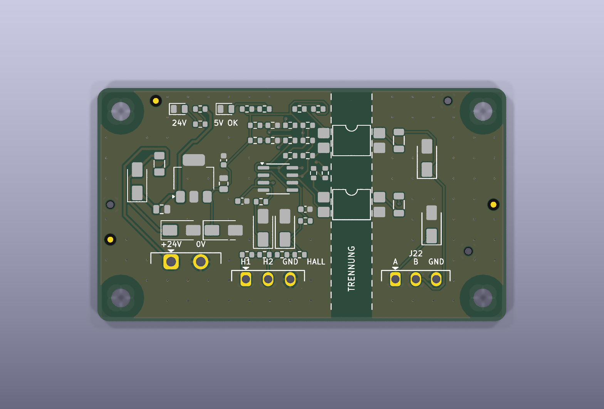
| Zacisk | Biegun | Nadruk | Podłącz do |
|---|---|---|---|
| J1 (raster 5,08 mm) | 1 | +24V | +24 V przez własny mały przewód od zasilacza z własnym bezpiecznikiem (przy dwóch zasilaczach od zasilacza napędów) |
| 2 | 0V | Minus zasilacza | |
| J2 (raster 3,81 mm) | 1 | H1 | Hall1, żółta żyła, na zacisku Halla SCN4 (dodatkowo do istniejącej żyły) |
| 2 | H2 | Hall2, zielona żyła, tak samo | |
| 3 | GND | GND, czarna żyła, tak samo | |
| J3 (raster 3,5 mm) | 1 | A | Kabel do J22 biegun 1 płytki RearCircuitBoard_10 |
| 2 | B | Kabel do J22 biegun 2 | |
| 3 | GND | Kabel do J22 biegun 3 (wspólny przewód powrotny; ekran tylko na J22) |
Obudowa
HallTapBoard dostaje własną małą obudowę z drukarki 3D: z zewnątrz 98 × 82 × 40 mm, z czterema uszami do przykręcenia 122 mm szerokości. Składa się z dwóch części, dolnej części i pokrywy. W dolnej części jest osiem mosiężnych wkładek gwintowanych: cztery w kopułkach, na których leży płytka, i cztery w słupkach na śruby pokrywy. W przedniej ściance są trzy dławiki kablowe PG 11, po jednym dla przewodu 24 V, przewodu Halla z SCN4 i kabla do sterownika. Nad obiema lampkami pokrywa ma po jednym małym otworze z kanałem świetlnym; obok na pokrywie jest napisane, co oznaczają: po lewej „24V“, po prawej „5V OK“. W każdy kanał wkładasz światłowód: kawałek pręta z pleksi (PMMA) o średnicy 3 mm i długości 26 mm. U góry kończy się równo z pokrywą, a u dołu około 1,5 mm nad lampką; dzięki temu światło jest dobrze widoczne na wierzchu pokrywy, a kanał jest zamknięty. Tak przy zamkniętej pokrywie widzisz, czy płytka jest zasilana i czy jej stabilizator działa. Pliki do druku są w hardware/HallTapBoard/gehaeuse/ (STL do druku, STEP do zmian).
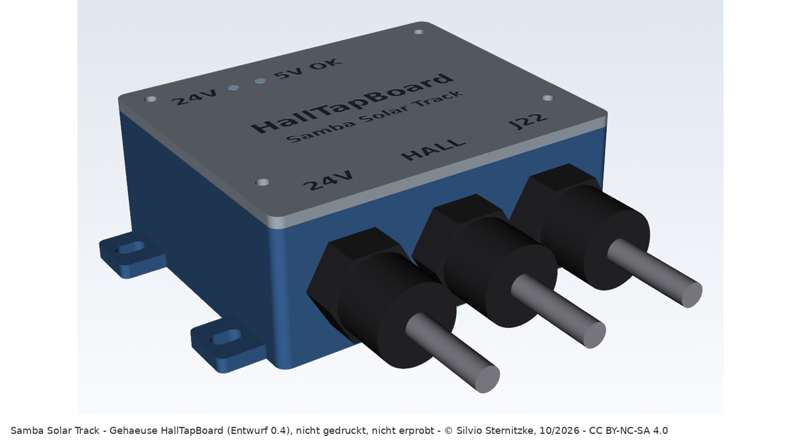
tools/halltap_gehaeuse.py, nie wydrukowana). Z przodu trzy dławiki kablowe; na pokrywie nad nimi napisy „24V“, „HALL“ i „J22“, z tyłu po lewej dwa otwory na lampki z „24V“ i „5V OK“. Po lewej i prawej u dołu uszy z otworem podłużnym do przykręcenia.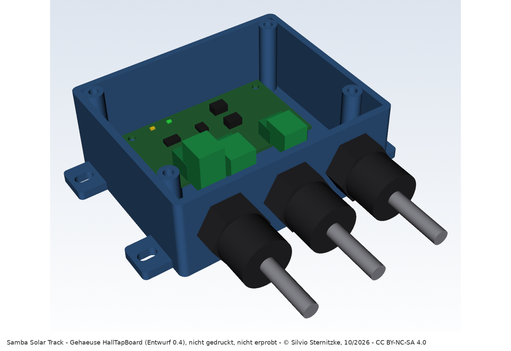
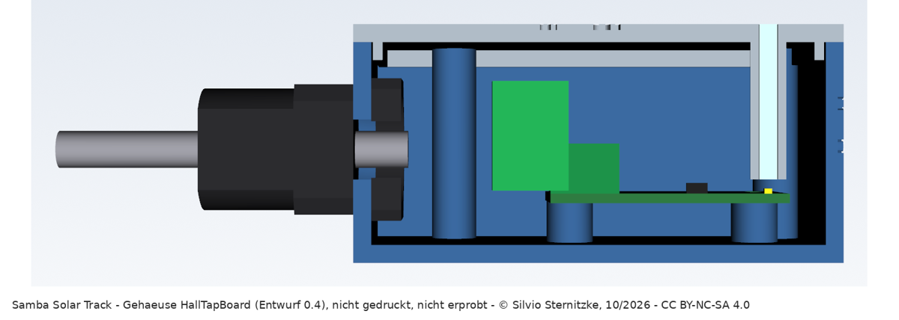
Tak wygląda pierwszy wydrukowany prototyp (zdjęcia z 15.10.2026, czarny filament, jeszcze bez płytki). Nie został jeszcze zmierzony ani wypróbowany.
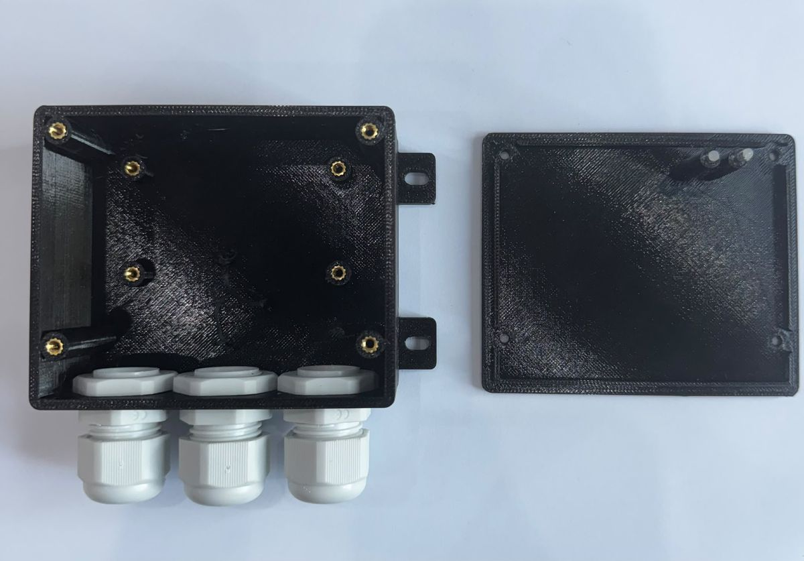
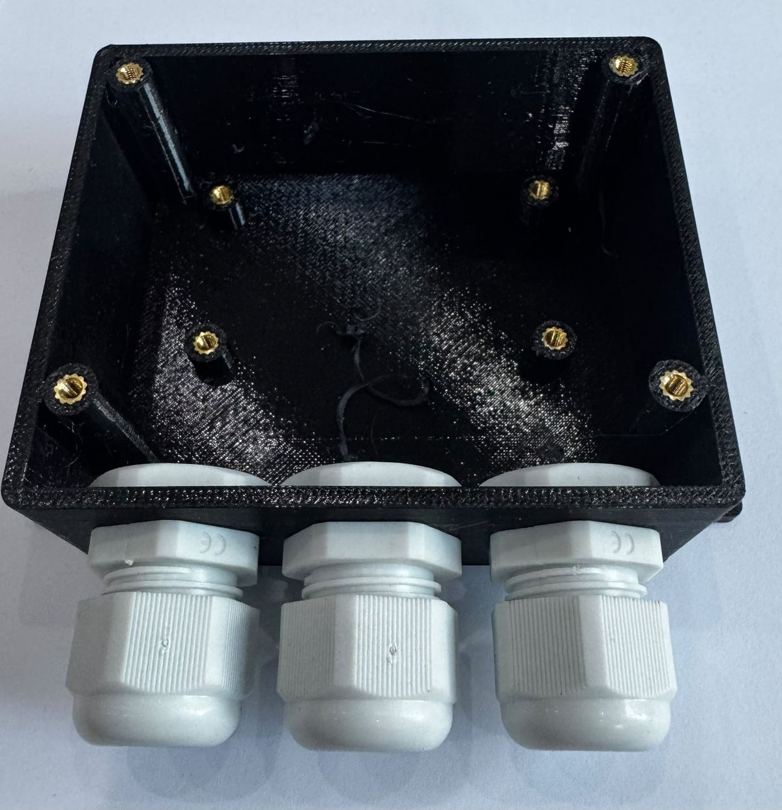
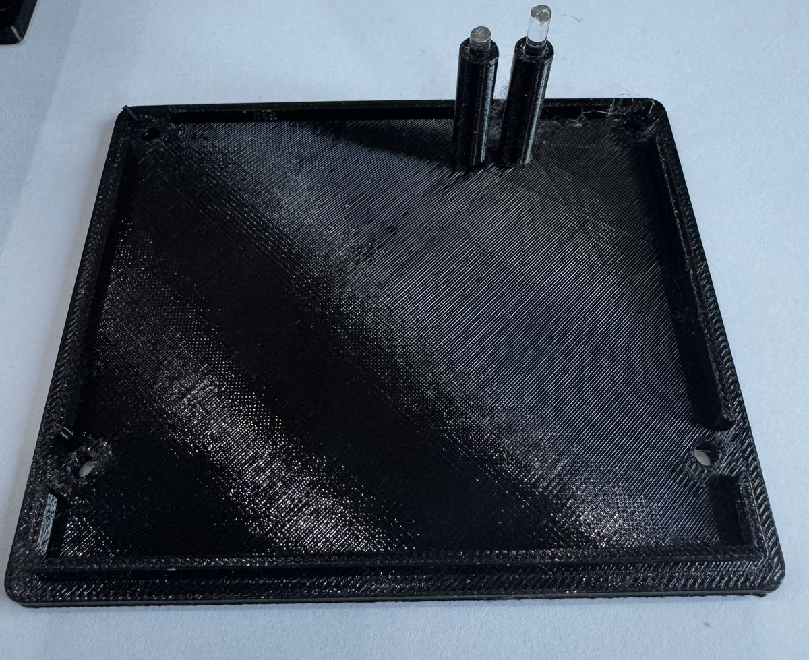
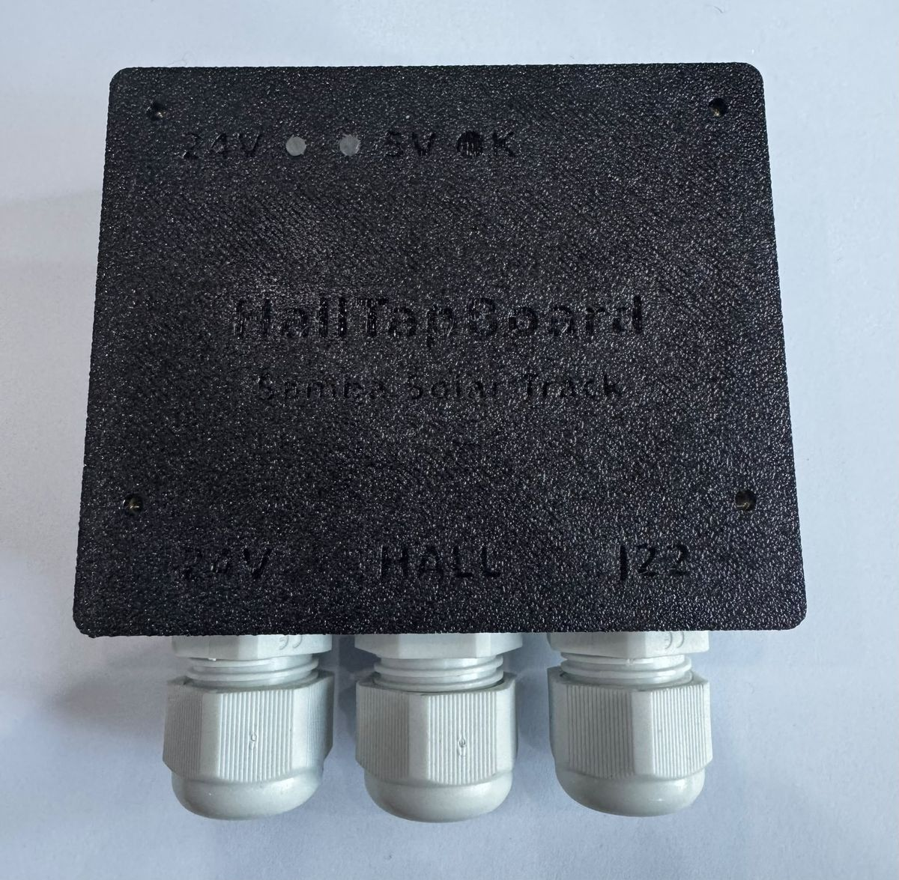
| Część | Ilość | Do czego |
|---|---|---|
| Wydrukowana dolna część i pokrywa (ASA lub PETG) | po 1 | Obudowa |
| Wkładka gwintowana ruthex M3 (RX-M3x5,7) | 8 | 4 na płytkę, 4 na pokrywę |
| Śruba M3 × 8 (łeb walcowy) | 8 | 4 na płytkę, 4 na pokrywę |
| Podkładka M3 (zewn. 7 mm) | 4 | pod śruby płytki |
| Dławik kablowy PG 11 (Lapp SKINTOP ST, kabel 4–10 mm) z przeciwnakrętką | po 3 | Wprowadzenie kabli |
| Śruba M4 (długość według płyty montażowej) | 4 | Mocowanie obudowy w skrzynce sterowniczej |
| Światłowód: pręt z pleksi (PMMA) Ø 3 mm, przezroczysty, każdy 26 mm długości | 2 | Światło obu lampek przez pokrywę |
Źródła zakupu i ceny są w załączniku G.
Dławik kablowy PG 11 uszczelnia kable o średnicy zewnętrznej od 4 do 10 mm. Pojedynczych żył ani bardzo cienkich kabli (np. 3 × 0,14 mm²) nie utrzyma. Na przewód Halla weź kabel z płaszczem, np. LiYY 3 × 0,25 mm² lub 3 × 0,5 mm², i przed zakupem zmierz średnicę zewnętrzną (średnice kabli są tu założeniami).
Wydrukowana obudowa chroni płytkę przed dotykiem, kurzem i rozpryskami w skrzynce sterowniczej. Nie jest sprawdzona pod kątem stopnia ochrony i dlatego należy ją umieszczać w zamkniętej skrzynce sterowniczej, nie na zewnątrz.
Druk i przygotowanie obudowy
- Wybierz materiałNajlepiej ASA: zachowuje kształt także przy dużym cieple w skrzynce sterowniczej. PETG nadaje się tylko wtedy, gdy w skrzynce sterowniczej na pewno pozostaje chłodniej niż około 60 °C (założenie; wartości materiałów nie zostały sprawdzone). Oczekiwane: Masz wystarczająco materiału na około 90 g (szacunek).
- Wczytaj części do programu do drukuWczytaj pliki
HallTapBoard-gehaeuse-unterteil.stliHallTapBoard-gehaeuse-deckel.stl. Dolna część stoi na swoim dnie, pokrywa leży wierzchem (napisem w dół) na stole; obie są już prawidłowo ustawione. Materiał podporowy włącz tylko dla trzech dużych okrągłych otworów w ściance (np. „Stützen nur auf dem Druckbett“ – podpory tylko od stołu – albo ustaw tam podpory ręcznie). Oczekiwane: Podgląd pokazuje podpory tylko w trzech otworach, poza tym żadnych swobodnie wiszących miejsc. - Spraw, by napis był dobrze czytelny (opcjonalnie)Napis jest wytłoczony na głębokość 1 mm w wierzchu pokrywy, a pokrywa leży tą stroną na stole. Dla dwukolorowego napisu ustaw w programie do druku dla pokrywy zmianę koloru po 1,0 mm wysokości (po 5. warstwie przy 0,2 mm) i tam wymień filament. Jeśli jest ustawienie przeciw „stopie słonia“ (rozpłaszczonej pierwszej warstwie), włącz je. Oczekiwane: Litery pojawiają się w drugim kolorze, ostro odgraniczone, nie zalane.
- UstawieniaJako zalecenie (założenie, niewypróbowane): dysza 0,4 mm, wysokość warstwy 0,2 mm, 4 linie ścianek, 5 warstw dolnych i górnych, wypełnienie 30 %. ASA w zamkniętej drukarce z obrzeżem (brim) 5 mm, aby nic się nie wypaczyło. Oczekiwane: Ścianki i kopułki są dzięki 4 liniom ścianek drukowane całkowicie pełne.
- Wydrukuj i sprawdźWydrukuj obie części i pozwól im ostygnąć. Wyłam podpory z trzech dużych otworów i wygładź krawędź gratownikiem lub nożem. Przyłóż próbnie pokrywę. Oczekiwane: Krawędź pokrywy wsuwa się z lekkim luzem w dolną część, cztery otwory w pokrywie leżą nad czterema słupkami. Dławik kablowy daje się włożyć z zewnątrz do swojego otworu; jeśli idzie za ciężko, ostrożnie popraw otwór wiertłem stopniowym (wymiar nominalny 18,9 mm).
Do osadzania wkładek gwintowanych lutownica nagrzewa się jak przy lutowaniu, a wkładka jest potem jeszcze przez chwilę gorąca. Nie dotykaj palcami grotu ani wkładki, postaw dolną część na stabilnym, żaroodpornym podłożu i zawsze odkładaj lutownicę do jej stojaka.
- Osadź wkładki gwintowaneUstaw lutownicę z grotem do wkładek mniej więcej na temperaturę druku materiału (założenie, dane producenta nie zostały sprawdzone). Postaw wkładkę węższą stroną w dół na otworze, włóż w nią lutownicę i pozwól wkładce bez nacisku pionowo się zagłębić, aż zrówna się z górną krawędzią. Potem wyciągnij lutownicę prosto. Tak wszystkie osiem: cztery w kopułkach na dnie, cztery u góry w słupkach. Oczekiwane: Każda wkładka siedzi prosto i równo; śrubę M3 po ostygnięciu da się łatwo wkręcić ręcznie.
- Osadź dławiki kabloweKażdy dławik włóż z zewnątrz przez jego otwór, od środka ręcznie nakręć przeciwnakrętkę. Następnie od środka przytrzymaj przeciwnakrętkę kluczem 24, a z zewnątrz dokręć dławik kluczem 22 (Lapp podaje 4,0 Nm, czyli mocno ręką, nie na siłę). Nakrętkę kołpakową na zewnątrz zostaw jeszcze luźno. Oczekiwane: Trzy dławiki siedzą mocno i już się nie obracają.
- Włóż płytkęPołóż płytkę w dolnej części tak, aby trzy zaciski były skierowane do ścianki z dławikami, i przykręć ją czterema śrubami M3 × 8 z podkładkami do kopułek, tylko ręcznie. Nie wkładaj między nie metalowych tulei dystansowych. Oczekiwane: Płytka leży płasko na czterech kopułkach i się nie chwieje; obie lampki są z tyłu po lewej.
- Włóż światłowodyOdetnij z pręta z pleksi (Ø 3 mm) dwa kawałki po 26 mm i zeszlifuj oba końce drobnym papierem ściernym na gładko, górną powierzchnię najlepiej wypoleruj. Każdy kawałek wciśnij od góry w jeden z dwóch małych otworów w pokrywie, aż zrówna się z wierzchem. Otwór jest narysowany jako 3,2 mm; drukuje się zwykle nieco mniejszy, tak że pręt siedzi ciasno (założenie). Jeśli wchodzi za ciężko, popraw otwór ręcznie wiertłem 3,1 mm; jeśli siedzi luźno, daj u góry na krawędzi kroplę przezroczystego kleju (nie kleju cyjanoakrylowego, on matowi pleksi). Oczekiwane: Oba pręty siedzą mocno, u góry równo, a od dołu wystają z pokrywy na 23 mm (taką długość ma kanał).
Montaż i podłączenie
W skrzynce sterowniczej znajduje się napięcie 24 V napędów z dużymi prądami. Zanim cokolwiek podłączysz lub przełożysz: odłącz zasilacz 24 V od sieci (przy dwóch zasilaczach oba), a tym samym odłącz od napięcia także sterownik (RearCircuitBoard_10). Prace po stronie 230 V zasilacza są tylko dla elektryka z uprawnieniami.
Żyły Halla z SCN4 podłącza się tylko do J2 płytki HallTapBoard, nigdy bezpośrednio do J22 sterownika. Tylko tak masa napędów i masa sterownika pozostają rozdzielone.
HallTapBoard nie potrzebuje 5 V z SCN4; ma własne zasilanie z 24 V. Czerwona żyła pozostaje tylko na SCN4. Żyły silnika (niebieska, brązowa) nigdy nie są podłączane do HallTapBoard.
Tak zamontujesz i podłączysz HallTapBoard, gdy zostanie wyprodukowana. Patrząc na obudowę z góry, ze ścianką kablową z przodu, dławnice leżą od lewej do prawej tak: 24V (do J1), HALL (do J2), J22 (do J3); tak też jest napisane na pokrywie.
- Odłącz wszystko od napięciaOdłącz wspólny zasilacz 24 V od sieci (przy dwóch zasilaczach oba). Oczekiwane: SCN4 i lampka BEREIT są wyłączone, wyświetlacz działa najwyżej na akumulatorze; napędami nie da się poruszać.
- Wybierz miejsce i zamocuj obudowęW skrzynce sterowniczej obok SCN4 znajdź miejsce, z którego krótkim przewodem dosięgniesz zacisku Halla w SCN4 i z którego kabel do sterownika może biec oddzielnie od przewodów silnika. Przed ścianką kablową zostaw ok. 5 cm wolnego miejsca, aby kable wchodziły prosto. Przykręć dolną część czterema śrubami M4 przez podłużne otwory uszu, na przykład do płyty montażowej skrzynki sterowniczej (założenie: płyta montażowa jest; miejsce nie sprawdzone). Oczekiwane: Obudowa siedzi pewnie; dławnice są skierowane w stronę kabli.
- Podłącz zasilanieWłasny cienki przewód (dwie żyły 0,5 do 1,5 mm², w płaszczu) poprowadź od zasilacza przez nakrętkę kołpakową i dławnicę „24V” do obudowy, płaszcz zakończ wewnątrz ok. 2 cm za dławnicą, a żyły podłącz do 2-biegunowego wtyku J1: biegun 1 = +24 V, biegun 2 = minus. Przy zasilaczu w żyle plusowej siedzi własny bezpiecznik 0,5 do 1 A zwłoczny (propozycja), a nie 25 A napędów (rozdział 6). Przy dwóch zasilaczach przewód idzie od zasilacza napędów. Oczekiwane: Na jeszcze odłączonym wtyku multimetr (pomiar rezystancji) nie pokazuje zwarcia między obiema żyłami; żyła plusowa jest oznaczona.
- Odbierz sygnał z żył HallaNa zacisku Halla w SCN4 do H1 (żółta), H2 (zielona) i GND (czarna) dołącz trzy żyły krótkiego kabla w płaszczu (0,14 do 0,5 mm² na żyłę, średnica zewnętrzna co najmniej 4 mm); istniejące żyły zostają tam, gdzie są. Używaj tulejek kablowych, gdy w jednym miejscu zacisku muszą być dwie żyły. Poprowadź kabel przez dławnicę „HALL”, a trzy żyły podłącz do 3-biegunowego wtyku J2 (raster 3,81 mm): biegun 1 = H1, biegun 2 = H2, biegun 3 = GND. Oczekiwane: Każda żyła siedzi pewnie; na SCN4 nic się nie poluzowało przy istniejących żyłach.
- Kabel do sterownikaKabel ekranowany (na przykład LiYCY 3 × 0,25 mm² lub 3 × 0,5 mm², do 15 m) poprowadź przez dławnicę „J22” i podłącz do wtyku J3 (raster 3,5 mm): biegun 1 = A, biegun 2 = B, biegun 3 = przewód powrotny. Ekranu tutaj nie podłączaj, tylko krótko go obetnij i zaizoluj rurką termokurczliwą; podłącza się go tylko do J22 biegun 3 (patrz wyżej, „Wejście impulsowe HALL”). Oczekiwane: takie samo przyporządkowanie na obu końcach, ekran tylko na jednym końcu.
- Włóż wtyki i opisz jeKażdy wtyk włóż do jego złącza przy dolnej krawędzi płytki: J1 po lewej (nadruk +24V/0V), J2 obok (H1/H2/GND), J3 po prawej za przerwą izolacyjną (A/B/GND). Wtyki J2 i J3 mają różny raster i nie powinny pasować do niewłaściwego złącza (do sprawdzenia na egzemplarzu wzorcowym); mimo to opisz je. Oczekiwane: Wszystkie wtyki siedzą równo, żaden pin nie jest wolny; między wtykiem a przeciwnakrętką zostaje miejsce, żyły leżą luźno.
- Uszczelnij dławniceKażdy kabel cofnij trochę, aż żyły w środku będą tylko lekko zwisać, potem dokręć nakrętkę kołpakową na zewnątrz ręką, a na końcu kluczem 22 (najwyżej 2,5 Nm według Lapp, nie przekręcaj, bo ucierpi płaszcz kabla). Oczekiwane: Żadnego kabla nie da się już wyciągnąć ani obrócić, żaden wtyk nie został przy tym wyciągnięty ze złącza.
- Zamknij pokrywęPołóż pokrywę tak, aby napis „24V – HALL – J22” był nad dławnicami, i przykręć ją czterema śrubami M3 × 8 w słupkach, tylko ręcznie. Oczekiwane: Pokrywa przylega dookoła, żaden kabel nie jest przyciśnięty; oba małe otwory z „24V” i „5V OK” są z tyłu po lewej.
- Włącz i sprawdź lampkiWłącz zasilacz (przy dwóch zasilaczach oba), napędy stoją. Oczekiwane: Przez oba otwory w pokrywie widzisz światło: po lewej „24V” żółta, po prawej „5V OK” zielona (żółta świeci słabiej, to normalne); SCN4 nie zgłasza błędu. Jeśli świeci jedna lub żadna, sprawdź w tabeli „Co pokazują lampki” poniżej. Napięcie stałe na J22 sterownika między biegunem 1 a biegunem 3, potem biegunem 2 a biegunem 3: ok. 5 V przy otwartym styku lub ok. 1 V przy zamkniętym (zależnie od położenia silnika).
- Jazda próbnaPrzejedź raz całą drogę. Oczekiwane: Napędy jadą równo jak wcześniej, SCN4 nie pokazuje żadnego kodu błędu. Jeśli pokazuje, natychmiast odłącz HallTapBoard (zdejmij pokrywę, wyciągnij wtyk J2), zanotuj kod i sprawdź go w instrukcji SCN4.
Co pokazują lampki (szukanie usterek)
Obie lampki pokazują, jak daleko na płytce dociera zasilanie. Wszystkie przypadki są obliczone, nie sprawdzone w praktyce.
| „24V” (żółta, po lewej) | „5V OK” (zielona, po prawej) | Znaczenie | Co sprawdzasz |
|---|---|---|---|
| świeci | świeci | Wszystko w porządku: 24 V z właściwą biegunowością, regulator daje 5 V, odbiór sygnału działa. | Nic. |
| świeci | ciemna | 24 V dociera, ale płytka nie dostaje 5 V. Odbiór sygnału nie działa. | Wyłącz zasilacz, zdejmij pokrywę, obejrzyj płytkę: spalone lub luźne elementy, mostki lutownicze, opiłki. Jeśli to nie pomoże, uszkodzony jest element zasilania 5 V (regulator U1, zwarcie na 5 V, na przykład kondensator C2/C3, dioda ochronna D10 lub komparator U2, albo sama lampka D4 i jej rezystory R17/R23). Jeśli U1 jest tylko wyłączony termicznie, jest gorący: nie dotykaj. Wymień płytkę lub zleć jej sprawdzenie fachowcowi. |
| ciemna | świeci | Zasilanie jest w porządku, uszkodzona jest tylko sama żółta lampka (D9 lub jeden z jej rezystorów R18/R24). | Odbiór sygnału mimo to działa. Wymień przy okazji. |
| ciemna | ciemna | Brak 24 V na płytce. | Zasilacz włączony? Bezpiecznik przewodu przy zasilaczu? Wtyk J1 dobrze włożony, żyły pewnie? Biegunowość na J1 (biegun 1 = +24 V): przy odwrotnej biegunowości dioda blokuje, obie pozostają ciemne. Zmierz multimetrem na J1: oczekiwane 24 do 25 V. Jeśli 24 V jest, a mimo to obie są ciemne, samoresetujący bezpiecznik F1 wyłączył się z powodu zwarcia na płytce (na przykład przebity element przed regulatorem: D1, C1 lub U1): wyłącz zasilacz, odczekaj kilka minut, obejrzyj płytkę. Jeśli F1 po ponownym włączeniu znów zadziała, element jest uszkodzony; wymień płytkę. |
| słabo | jasno | Rzadko: regulator U1 jest przebity, dioda ochronna D10 utrzymuje 5 V na ok. 8 V, a F1 się wyłączył. Żółta tylko się żarzy, zielona świeci jaśniej niż zwykle. | Natychmiast wyłącz zasilacz, wymień płytkę. Nic nie jest przeciążone (obliczone), ale odbiór sygnału nie działa niezawodnie. |
Zamieniona żyła z 24 V na H1 lub H2 nie szkodzi; kanał pokazuje wtedy tylko nic sensownego. Natomiast 24 V na GND złącza J2 to zwarcie zasilacza; wtedy zadziała bezpiecznik w przewodzie napędów. Odwrócona biegunowość 24 V na J1 blokuje diodę (ochrona przed odwrotną polaryzacją); wtedy obie lampki pozostają ciemne. Do 30 V stale na J1 płytka znosi bez szkody, krótkie szpilki wyłapuje dioda ochronna D1. Jeśli zawiedzie pojedynczy element, wyłącza się bezpiecznik F1 lub płytka pracuje dalej; żaden inny element nie zostaje przy tym przeciążony (obliczone, nie sprawdzone w praktyce; szczegóły w README). Linia Halla w SCN4 jest obciążona najwyżej ok. 6 µA, także gdy HallTapBoard nie ma napięcia. Jeśli dioda ochronna na J2 się przebije, sygnał Halla na SCN4 spada tylko z 5 V do ok. 4,7 V; SCN4 nadal go rozpoznaje (założenie co do jej progu przełączania).
Nie wiadomo, czy HAKIWO dopuszcza odbiór sygnału, ile impulsów na sekundę przychodzi i ile prądu daje wyjście 5 V w SCN4 (brak odpowiedzi producenta, stan na 12.10.2026; zostanie sprawdzone na stelażu). HallTapBoard jest zaprojektowana na maksymalnie 1 000 impulsów na sekundę i kanał (założenie); szybciej transoptory w sterowniku nie nadążają pewnie. Do sprawdzenia na wydruku próbnym: osadzenie wkładek i dławnic, wysokość przeciwnakrętki (przyjęto 5 mm), luz pokrywy, miejsce na wtyki pod pokrywą, jak mocno światłowody siedzą w otworze 3,2 mm i jak dobrze widać przez nie obie lampki (żółta przy 1 mA jest wyraźnie słabsza od zielonej, założenie). Miejsce w skrzynce sterowniczej i zabezpieczenie przed pomyleniem wtyków J2 i J3 zostaną sprawdzone na egzemplarzu wzorcowym.
Długie przewody do 15 metrów
Między sterownikiem a czujnikami i napędami może być do 15 metrów. Długie przewody na zewnątrz łapią zakłócenia, na przykład od silników lub podczas burzy. Dlatego płytka RearCircuitBoard_10 ma na każdym złączu układ ochronny. Resztę załatwia właściwy kabel.
| Przewód | Zalecany kabel | Uwaga |
|---|---|---|
| Czujnik słońca | Ekranowany, 5 żył, od 0,25 mm² | Kabel czujnika ma 3 m i jest przedłużany. Ekran łącz z GND tylko przy sterowniku. Rezystory pomiarowe siedzą na końcu przewodu na płytce, co czyni sygnał odpornym. Żyła zasilająca ma ograniczenie prądu: zwarcie w kablu nie szkodzi sterownikowi i jest zgłaszane na wyświetlaczu (firmware w przygotowaniu, rozdział 8). |
| Wyłączniki krańcowe | Ekranowany lub skręcany parami | Na każdy przełącznik dwie żyły. Nie prowadź w tym samym kablu co przewody silnika. |
| Wyjścia przełączające | Skręcany parami | Na każdy styk dwie żyły. W wariancie B przekaźniki mocy najlepiej umieścić blisko sterownika, wtedy długi jest tylko przewód silnika. |
| Anemometr (RS485) | Skręcona para żył dla A i B, do tego zasilanie | RS485 jest stworzony do długich przewodów, 15 m nie stanowi problemu. |
| Wejście impulsowe HALL (J22) | Ekranowany, 3 żyły, 0,25 do 0,5 mm² (na przykład LiYCY 3 × 0,25 mm²) | Do 15 m. Ekran podłącz tylko do J22 biegun 3. Nie prowadź w tym samym kablu co przewody silnika. Zaprojektowane na maksymalnie 200 pF na metr kabla (założenie). |
| Zasilacz 24 V → sterownik (J11) | Dwie żyły, 1,5 mm² (możliwe od 0,75 mm²) | Zasilacz stoi przy napędach, sterownik do 15 m dalej. Przy 1 A na 15 m traci się przy 1,5 mm² ok. 0,35 V, przy 0,75 mm² ok. 0,7 V. Własny bezpiecznik 2 A przy zasilaczu (rozdział 6). |
| Zasilacz 24 V → napędy / SCN4 | Dwie żyły, od 4 mm² | Utrzymuj krótko, kilka metrów. Do 20 A; bezpiecznik 25 A przy zasilaczu. Spadek napięcia: tabela w rozdziale 6. |
| Lampki w obudowie | Pojedyncze żyły lub kabel taśmowy | Tylko krótkie przewody w obudowie. |
| Przewody silnika | Przekrój według prądu, od 1,5 mm² | Nie przechodzą przez płytkę. Przy 5 A na 15 m traci się przy 1,5 mm² niecałe 2 V, przy 2,5 mm² nieco ponad 1 V. |
Połączenie między płytą a RearCircuitBoard_10 (I2C) jest przeznaczone tylko na kilka centymetrów. Na długich kablach staje się zawodne. Dlatego układy na płytce RearCircuitBoard_10 siedzą bezpośrednio przy płycie, a na zewnątrz wychodzą tylko odporne sygnały.
Zalecenia dotyczące kabli to ogólne wartości orientacyjne, nie pomiar. Czy wejście przycisku sterownika działa bez zakłóceń na 15 m, pokaże dopiero próba.
Podłączanie wtyków wyjść przełączających (J3 do J6)
Wtyki czterech wyjść przełączających wyglądają inaczej niż pozostałe: mają dwa rzędy okrągłych otworów, a obok każdego otworu jest mały przycisk. Wtyki W GÓRĘ i W DÓŁ (J3, J4) mają po dwa otwory w rzędzie, czyli cztery, a wtyki WSCHÓD i ZACHÓD (J5, J6) po trzy w rzędzie, czyli sześć. Żył się nie przykręca, tylko wkłada; trzyma je sprężyna (złącze sprężynowe). Zajmuje się zawsze tylko dwa otwory, ukośnie naprzeciw siebie. Które dwa, zależy od złącza (Rys. 12).
- Odłącz napędy od prąduWyłącz zasilanie napędów, zanim wyciągniesz lub włożysz wtyk. Oczekiwane: Żaden napęd nie może ruszyć, dopóki pracujesz.
- Zdejmij izolację z żyłZ obu żył przewodu do sterownika napędu zdejmij izolację na długości 8 do 9 mm (dane producenta). Pasują żyły do 1,5 mm². Żyła linkowa najlepiej dostaje tulejkę kablową. Oczekiwane: Goły koniec ma 8 do 9 mm, żaden drucik nie jest nacięty ani nie odstaje.
- Trzymaj wtyk prawidłowoTrzymaj wtyk tak, abyś patrzył na okrągłe otwory, a przyciski były u góry i u dołu. Oczekiwane: Przy wtyku do J3 lub J4 widzisz dwa otwory u góry i dwa u dołu, przy wtyku do J5 lub J6 trzy u góry i trzy u dołu; nad nimi i pod nimi są przyciski, jak na Rys. 12.
- Wybierz dwa właściwe otworyPrzy J3 (W GÓRĘ) i J5 (WSCHÓD): u góry po prawej i u dołu po lewej. Przy J4 (W DÓŁ) i J6 (ZACHÓD): u góry po lewej i u dołu po prawej. Przy J5 i J6 są to zewnętrzne otwory skrajnie po prawej i skrajnie po lewej; dwa środkowe pozostają wolne. Nie ma znaczenia, która żyła trafi do którego z dwóch otworów, bo styk jest bezpotencjałowy. Jeśli obrócisz wtyk do góry nogami, pozostają to te same dwa otwory. Wszystkie inne otwory pozostają puste. Oczekiwane: Wiesz, które dwa otwory zajmujesz.
- Włóż żyłęSztywną (jednodrutową) żyłę lub żyłę z tulejką kablową wsuń prosto do oporu w otwór. Przy żyle linkowej bez tulejki najpierw wciśnij czubkiem małego śrubokręta przycisk obok otworu i przytrzymaj, włóż żyłę, a potem puść przycisk. Oczekiwane: Żyła tkwi we wtyku aż do izolacji, nie widać gołego metalu.
- Próba ciągnięciaPociągnij każdą żyłę mocno, ale bez szarpnięcia. Oczekiwane: Trzyma się pewnie. Jeśli wysunie się, nie była włożona do oporu: powtórz krok 5.
- Opisz i nałóżOpisz wtyk tak jak jego złącze, na przykład „J3 W GÓRĘ”, i włóż go do oporu w złącze. Oczekiwane: Wtyk siedzi pewnie w złączu i się nie chwieje.
- SprawdźPrzy pierwszym uruchomieniu w kroku 10: zostaw wtyk włożony, drugi koniec przewodu odłącz od sterownika napędu i zmierz testerem ciągłości między obiema żyłami, trzymając wciśnięty przycisk wyjścia. Nie mierz na pinach złącza, bo wtedy nie sprawdzisz wtyku. Oczekiwane: Przy wciśniętym przycisku piszczy, po puszczeniu nie. Jeśli jest cisza, żyła siedzi w złym otworze lub wtyk na złym złączu.
Zwalnianie żyły: Wciśnij przycisk obok otworu i trzymaj go, wyciągnij żyłę, potem puść przycisk. Nigdy nie wyrywaj mocno trzymającej żyły bez przycisku.
Piny złącza (cztery przy J3 i J4, sześć przy J5 i J6) leżą blisko siebie. Po lutowaniu sprawdź testerem ciągłości, że żaden pin nie jest połączony z sąsiednim. Mostek lutowniczy do jednego z wolnych pinów znosi ochronę przed zamienionymi wtykami na tym złączu.
To, które dwa otwory należą do styku, wyprowadzono z rysunków producenta. Dla złącza na płytce przyporządkowanie potwierdzono na podstawie zdjęcia producenta; dla wtyku (który otwór należy do którego pinu) pozostaje ono założeniem, dopóki nie zostanie zmierzone na prawdziwej części. Jeśli się nie zgadza, styk nie przełącza i napęd nie jedzie; wyjdzie to przy sprawdzaniu (ostatni krok powyżej). Karta katalogowa podaje tylko długość odizolowania 8 do 9 mm i żyły do 1,5 mm². Czy tulejki kablowe do 1,5 mm² się zmieszczą i jak mocno trzymają żyły linkowe bez tulejki, zostanie sprawdzone na egzemplarzu wzorcowym. Zwalnianie przyciskiem jest typowe dla złączy sprężynowych; karta katalogowa tego nie opisuje.
7Akumulator i blokada ładowania
Płyta 10,1 cala ma akumulator. Gdy zaniknie 24 V, działa dalej na nim; przy wspólnym zasilaczu stoją wtedy także napędy (rozdział 6). Aby akumulator się nie uszkodził, płytka pozwala go ładować tylko w odpowiedniej temperaturze.
Waveshare dostarcza płytę z akumulatorem litowym (3,7 V, według producenta 4000 mAh). Ładowarka na płycie ładuje go z 5 V pochodzących z płytki prądem do 1,33 A. Ładowarka nie sprawdza temperatury akumulatora. Akumulatory litowe wolno jednak ładować tylko w ograniczonym zakresie temperatur. Na płycie i akumulatorze nic się nie zmienia; płytka RearCircuitBoard_10 sama przejmuje ochronę.
| Punkt | Co obowiązuje |
|---|---|
| Okno | Ładowanie odbywa się tylko między 10 a 35 °C na tylnej ściance (z tolerancjami ok. 8 do 12 °C i 33 do 37 °C). |
| Czas oczekiwania | Ok. 71 minut (z tolerancjami 45 do 101 minut) od chwili, gdy temperatura weszła w okno. Po każdym włączeniu 24 V czas oczekiwania zaczyna się od nowa; w ciągu pierwszej dobrej godziny akumulator więc się nie ładuje. Tak ma być. |
| Napięcie w blokadzie | 3,8 do 4,1 V na J8. Ładowarka ładuje dopiero od ok. 4,5 V (dane producenta bez tolerancji). To, że przy 4,1 V naprawdę nie ładuje, zostanie zmierzone przez wiele godzin przed zamówieniem (otwarte). |
| Gdzie odbywa się pomiar | Czujnik siedzi na małej wysepce miedzi w lewym górnym rogu płytki. Mosiężna tuleja dystansowa między dwiema podkładkami termoprzewodzącymi przewodzi do niego temperaturę tylnej ścianki; za tylną ścianką leży akumulator (położenie to założenie, zostanie zmierzone). Czujnik mierzy więc tylną ściankę, a nie sam akumulator. |
| Tuleja dystansowa i podkładki | Tuleja M3 z mosiądzu, rozmiar klucza 4,7 mm, wysokość 6 mm przy odstępie 8,2 do 9,1 mm między płytką a tylną ścianką (wtedy podkładki 1,5 mm), wysokość 8 mm przy odstępie 9,1 do 10,0 mm (wtedy podkładki 1,0 mm). Podkładki mają wymiar 6 × 6 mm, są izolujące elektrycznie i trudnopalne. |
| Obchodź się ostrożnie z wysepką | Wysepka miedzi wisi na wąskim palcu (1,9 × 2,5 mm) i dwóch mostkach z materiału płytki (każdy 1,0 × 2,5 mm, bez miedzi), aby ciepło płytki prawie do niej nie docierało. Przy montażu trzymaj płytkę za krawędź, opuszczaj ją prosto, nie naciskaj na wysepkę, a podkładki termoprzewodzące dociskaj tylko lekko (rozdział 5). Według obliczeń (założenie) palec i mostki wytrzymują docisk z dużym zapasem; zostanie to sprawdzone na egzemplarzu wzorcowym (otwarte). |
| Zworka testowa J21 | 2-3 = praca. 1-2 wymusza blokadę, tylko do sprawdzania. Gdy zworki brak, obowiązuje praca. |
Komputer podłączony do gniazda „UART” płyty zasila płytę przez USB napięciem 5 V. Ładowarka ładuje wtedy akumulator mimo blokady ładowania. Dlatego w zimnie nie podłączaj kabla USB.
Jeśli czujnik ulegnie awarii lub zabraknie zasilania blokady, blokada blokuje (bezpiecznie). Niektóre rzadkie błędy lutowania przy komparatorze U18 (niepolutowany pin lub mostek lutowniczy) znoszą natomiast granicę zimna albo ciepła i nie da się tego zauważyć. Dlatego uruchomienie sprawdza obie granice: raz sprayem chłodzącym, raz ciepłem. Podczas pracy firmware ma później dodatkowo sprawdzać blokadę; do tego czasu akumulator pozostaje odłączony.
Poziom naładowania akumulatora na wyświetlaczu (w przygotowaniu, nie sprawdzone na urządzeniu)
W prawym górnym rogu pulpitu firmware pokazuje, jak bardzo naładowany jest akumulator: symbol akumulatora i wartość procentową, na przykład „87 %” (Rys. 13f). Poniżej 20 % wskazanie robi się pomarańczowe, poniżej 10 % czerwone. Jeśli widać „--”, pomiar nie daje użytecznej wartości. Gdy akumulator się ładuje, przed symbolem akumulatora jest żółta błyskawica (Rys. 13g; w jasnych motywach bursztynowa, aby była czytelna na jasnym tle). Wskazanie jest tylko informacją; sterowanie się nim nie kieruje.
Po czym firmware rozpoznaje ładowanie: stan ładowania ładowarka zgłasza tylko czerwonej lampce na małej płytce adaptera płyty, a nie układowi scalonemu. Z płytką RearCircuitBoard_10 firmware mierzy więc napięcie, które płyta dostaje z płytki: jeśli jest powyżej 4,4 V, ładowarka ładuje (w blokadzie ładowania płyta dostaje mniej). Bez płytki, na przykład przy samej płycie z kablem USB, sprawdza, czy napięcie akumulatora rośnie przez kilka minut. Wtedy błyskawica pojawia się dopiero po ok. 5 do 10 minutach i równie późno znika. Gdy akumulator jest prawie pełny (od 4,15 V), błyskawicy już nie ma. Wszystkie te progi to założenia i nie zostały jeszcze sprawdzone na urządzeniu.
Tak mierzy firmware: na płycie akumulator jest podłączony przez dwa rezystory (dzielnik napięcia, który dzieli napięcie na jedną trzecią) do wejścia pomiarowego układu. Firmware mierzy co 2 sekundy, wygładza wartości i przelicza napięcie na procenty. Na płycie nic się w tym celu nie zmienia.
- Podczas ładowania za wysoko: Dopóki jest 24 V i ładowarka ładuje, napięcie akumulatora jest wyższe niż w spoczynku. Wskazanie pokazuje wtedy więcej, niż jest w akumulatorze. Dopiero bez ładowania (zanik prądu lub pełny akumulator) jest dokładne.
- Bez akumulatora: Jeśli akumulator nie jest wbudowany, firmware mierzy napięcie ładowarki (ok. 4,2 V) i pokazywałoby „pełny”. Wyłącz wtedy wskazanie w konfiguracji w EKRAN przełącznikiem AKUMULATOR WBUDOWANY (Spoczynek i czujnik ruchu). Fabrycznie jest on włączony, bo płyta jest dostarczana z akumulatorem.
- Zależność napięcia od poziomu naładowania to typowa charakterystyka akumulatorów litowych (założenie); na akumulatorze płyty nie została jeszcze zmierzona.
Przed zamówieniem na dostarczonej płycie przez wiele godzin będzie mierzone, czy ładowarka przy napięciu do 4,1 V na pewno nie ładuje. Jeśli wynik pomiaru będzie zły, blokada ładowania przez 5 V nie działa, a płytka nie zostanie w tej postaci zamówiona. Zmierzone zostaną też położenie akumulatora i odstęp od tylnej ścianki; potem ustalone zostaną położenie wysepki, tuleja dystansowa i podkładki. Przy okazji zostanie zmierzone, jak dobrze czujnik odwzorowuje tylną ściankę: wysepka wisi na wąskim palcu i dwóch mostkach i jest w dużej mierze oddzielona od reszty płytki; według obliczeń czujnik mimo to pokazuje ok. 16 do 29 % różnicy między tylną ścianką a płytką (założenie).
8Oprogramowanie i obsługa (w przygotowaniu)
Firmware dla ESP32-P4-WIFI6-Touch-LCD-10.1 jest rozpoczęty: daje się zbudować i 20.10.2026 został wgrany na płytę testową (firmware 0.4.6): uruchamia się, wyświetlacz pokazuje konfigurację, dotyk, dźwięki i Wi-Fi działają. Cała reszta nie jest jeszcze sprawdzona na urządzeniu (w przygotowaniu). Firmware 0.4.6 pokazywał interfejs jeszcze w małym rozmiarze (800 × 480 pikseli) na środku ekranu; od firmware 0.4.7 pulpit wykorzystuje cały wyświetlacz (patrz niżej). Także połączenie z anemometrem (przez złącze J15 płytki RearCircuitBoard_10) jest napisane, ale jeszcze nigdy nie wypróbowane z prawdziwym anemometrem. Do tego dochodzą dźwięki z głośnika, wyszukiwanie nowego firmware w internecie, pochylenie na polecenie (na życzenie z odbiorem sygnału Halla), przerwy dla napędów (czas załączenia) i ponowne jazdy do poziomu podczas burzy (wszystko poniżej, równie niesprawdzone). Ten rozdział zostanie napisany, gdy firmware zostanie sprawdzony na urządzeniu.
Firmware jest wgrany na płytę testową: konfiguracja, dotyk, dźwięki i Wi-Fi działają; wszystko inne dla tej płyty jest tylko zbudowane i przetestowane na komputerze. Wgrywanie, konfiguracja, obsługa na wyświetlaczu i w przeglądarce, ustawienia i log zostaną tu opisane, gdy ten firmware będzie gotowy i sprawdzony na urządzeniu.
Pierwsze wgranie firmware (wgrane na płytę testową)
Nowa płyta ma jeszcze oprogramowanie demonstracyjne Waveshare. Aby stała się sterownikiem, jeden raz zapisujesz firmware Samba Solar Track przez kabel USB w jej pamięci (Flash). Nazywa się to wgrywaniem lub flashowaniem. Plik do tego to obraz fabryczny. Potem nowe wersje przychodzą wygodnie przez sieć (Nowy firmware z internetu), bez kabla.
Są trzy sposoby. Dla większości sposób A w przeglądarce jest najprostszy: nie potrzebujesz programu, tylko odpowiedniej przeglądarki. Sposoby B i C pomagają, gdy A nie działa. Firmware jest dostępny tylko w gotowej, skompilowanej postaci; jego kod źródłowy nie jest publiczny.
20.10.2026 firmware 0.4.6 został wgrany na płytę testową ESP32-P4-WIFI6-Touch-LCD-10.1 sposobem A (ESPHome Web). Uruchamia się: wyświetlacz pokazuje konfigurację, dotyk i dźwięki działają, Wi-Fi też działa. Interfejs miał przy tym jeszcze 800 × 480 pikseli na środku ekranu o rozdzielczości 1280 × 800; od firmware 0.4.7 wykorzystuje cały wyświetlacz. Na tej płycie pasuje więc też firmware, który Waveshare fabrycznie wgrywa do wbudowanego układu radiowego ESP32-C6. Nie wiadomo, czy każda płyta ma fabrycznie tę samą wersję. Sposoby B i C nie zostały wypróbowane osobno; informacje pochodzą z dokumentacji Waveshare i Espressif, schematu płyty i sprawdzenia wygenerowanego pliku.
Do pierwszego wgrania potrzebujesz pliku samba-solar-track-10zoll-<Version>-factory.bin („obraz fabryczny”). Od firmware 0.4.7 jest on publicznie dostępny pod https://firmware.samba-solar.de/erstinstallation/, na przykład samba-solar-track-10zoll-0.4.7-factory.bin. Strona startowa https://firmware.samba-solar.de/ podaje aktualny plik. Obok leży plik z licencjami zawartych w nim bibliotek innych producentów (DRITTANBIETER.md).
Który plik do czego
| Plik | Do czego | Adres w pamięci | Ustawienia |
|---|---|---|---|
…-10zoll-<Version>-factory.bin (obraz fabryczny) | pierwsze wgranie na nową lub wyczyszczoną płytę; zawiera wszystko, czego płyta potrzebuje do startu | 0x0 | zostają usunięte, konfiguracja pojawia się potem od nowa |
…-10zoll-<Version>.bin | Aktualizacja płyty, na której już działa Samba Solar Track (tylko sposoby C i D, poza tym przez sieć) | 0x10000 | zostają zachowane |
Sam plik bez „factory” nie wystarczy dla nowej płyty: brakuje w nim części startowej (bootloader) i podziału pamięci. I odwrotnie: obraz fabryczny zawsze usuwa zapisane ustawienia, także Wi-Fi i token.
Czego potrzebujesz
| Część | Uwaga |
|---|---|
| Komputer lub laptop | Windows, macOS lub Linux |
| Kabel USB-C z liniami danych | Sam kabel do ładowania nie zadziała. Kabla nie ma w zestawie z płytą. |
| Przeglądarka z Web Serial (sposoby A i B) | Chrome, Edge lub Opera; Firefox od wersji 151 (tam nie wypróbowano na płycie). Safari i iPhone/iPad tego nie potrafią. |
| Obraz fabryczny | samba-solar-track-10zoll-<Version>-factory.bin, patrz wyżej |
Przygotowanie
- Najlepiej przed montażemWgraj firmware, dopóki płyta nie jest jeszcze podłączona w urządzeniu. Jeśli płytka RearCircuitBoard_10 jest już nałożona, wyłącz najpierw zasilacz 24 V. Podczas wgrywania wszystkie styki przełączające pozostają otwarte, napędy nie jadą. Oczekiwane: Żaden napęd nie jest zasilany.
- Podłącz płytęWłóż kabel USB-C do gniazda z napisem UART, drugi koniec do komputera. Nie używaj gniazda „USB OTG”. Komputer zasila przy tym płytę. Oczekiwane: Wyświetlacz się zapala.
- Sprawdź połączenie w komputerzeNa płycie jest układ USB CH343. Windows: W Menedżerze urządzeń w „Porty (COM i LPT)” pojawia się nowy port COM. macOS: W terminalu ls /dev/cu.* pokazuje nowy wpis. Linux: ls /dev/ttyACM* /dev/ttyUSB*; twój użytkownik musi być w grupie
dialout. Jeśli w Windows lub macOS nic się nie pojawia, zainstaluj sterownik producenta WCH (Windows: CH343SER, macOS: CH34xSER) i uruchom ponownie komputer. Nie sprawdzono, czy Windows 10/11 i macOS rozpoznają układ bez sterownika. Oczekiwane: Pojawia się nowy port i znika, gdy odłączysz kabel.
Sposób A: w przeglądarce z ESPHome Web (zalecany, wypróbowany na płycie testowej)
ESPHome Web to bezpłatna strona, która zapisuje firmware na płyty ESP32 przez przeglądarkę. Samba Solar Track nie jest firmware ESPHome; strona zapisuje jednak na płytę każdy gotowy plik. Zawsze zapisuje plik na początku pamięci (0x0) i wcześniej usuwa całą pamięć. Dlatego używaj tu tylko obrazu fabrycznego.
- Otwórz stronęW przeglądarce otwórz
https://web.esphome.io/. Oczekiwane: Strona pokazuje przycisk CONNECT. - PołączKliknij CONNECT, w oknie wybierz port z „Przygotowania”, krok 3, potem Połącz. Oczekiwane: Strona zgłasza połączone urządzenie.
- Wybierz plikKliknij INSTALL (nie „Prepare for first use”), potem wybierz plik
samba-solar-track-10zoll-<Version>-factory.bini potwierdź INSTALL. Oczekiwane: Najpierw trwa usuwanie, potem pasek postępu; trwa to kilka minut. - PoczekajNie odłączaj kabla, dopóki strona nie zgłosi „Installation complete”. Oczekiwane: Strona zgłasza, że instalacja jest zakończona.
- Uruchom ponownieKrótko odłącz kabel USB i podłącz go ponownie. Oczekiwane: Wyświetlacz pokazuje konfigurację Samba Solar Track (po wgraniu).
Sposób B: w przeglądarce z Webflasherem Espressif
Espressif, producent układu, oferuje pod https://espressif.github.io/esptool-js/ własną stronę. Tu sam wybierasz adres; nie działa ona z Safari.
- PołączOtwórz stronę, zostaw lub ustaw „Baudrate” na 460800, kliknij Connect i wybierz port. Oczekiwane: W oknie poniżej widać „Chip is ESP32-P4”.
- Plik i adresW „Flash Address” wpisz
0x0i przyciskiem wyboru pliku wybierz obraz fabryczny. Oczekiwane: Wiersz z 0x0 i nazwą pliku. - ZapiszKliknij Program i poczekaj, aż pojawi się „Leaving…” lub komunikat o zakończeniu. Potem krótko odłącz kabel USB i podłącz go ponownie. Oczekiwane: Wyświetlacz pokazuje konfigurację.
Sposób C: z esptool w wierszu poleceń
esptool to program Espressif, z którym w tle pracują wszystkie inne sposoby. Potrzebuje Pythona. Dla płyty 10,1 cala musi to być co najmniej wersja 5.3; starsze wersje nie znają w pełni wersji układu tej płyty.
- Zainstaluj esptoolZainstaluj Python 3 (
python.org), potem w wierszu poleceń lub terminalu: pip install "esptool>=5.3". Oczekiwane: esptool version pokazuje 5.3 lub nowszą. - Zapisz obraz fabrycznyW folderze z plikiem;
<PORT>zastąp swoim portem (na przykładCOM5,/dev/cu.wchusbserial…lub/dev/ttyACM0):
esptool --chip esp32p4 -p <PORT> -b 460800 write-flash 0x0 samba-solar-track-10zoll-<Version>-factory.bin Oczekiwane: Na końcu „Hash of data verified” i „Hard resetting”. - Później: aktualizacja bez usuwaniaJeśli Samba Solar Track już działa, a konfiguracja ma zostać zachowana, zapisujesz tylko plik bez „factory” pod adresem 0x10000:
esptool --chip esp32p4 -p <PORT> -b 460800 write-flash 0x10000 samba-solar-track-10zoll-<Version>.bin Oczekiwane: Po ponownym uruchomieniu konfiguracja, Wi-Fi i token nadal są.
Przeglądanie logu (przy problemach)
Jeśli płyta nie uruchamia się prawidłowo lub ciągle się restartuje, pomaga log: komunikaty, które firmware wysyła przez kabel USB.
- PołączPodłącz płytę jak wyżej do gniazda UART, otwórz
https://web.esphome.io/i kliknij CONNECT. Oczekiwane: Port pojawia się do wyboru. - Otwórz logKliknij LOGS. Oczekiwane: Komunikaty przewijają się; po ponownym uruchomieniu na górze widać wersję firmware i przyczynę resetu.
- ZapiszSkopiuj lub pobierz komunikaty i wyślij je do projektu. Oczekiwane: Plik tekstowy z wierszami wokół błędu.
Gdy płyta się nie łączy
Zwykle komputer sam przełącza płytę w tryb pobierania (według schematu przez linie DTR i RTS układu USB). Jeśli to nie działa, przełączasz ręcznie:
- Tryb pobierania ręczniePrzytrzymaj wciśnięty przycisk BOOT na płycie, krótko naciśnij RESET, potem puść BOOT. Następnie połącz się ponownie w przeglądarce lub przez esptool. Oczekiwane: Wyświetlacz pozostaje ciemny, połączenie działa.
- Po wgraniuNaciśnij raz RESET lub odłącz i ponownie podłącz kabel, w przeciwnym razie płyta pozostanie w trybie pobierania. Oczekiwane: Firmware się uruchamia.
| Objaw | Przyczyna | Rozwiązanie |
|---|---|---|
| W oknie wyboru przeglądarki nie ma portu | Kabel do ładowania bez linii danych, złe gniazdo lub brak sterownika | Inny kabel, gniazdo „UART”, zainstaluj sterownik producenta WCH |
| Strona nie oferuje połączenia | Przeglądarka bez Web Serial (Safari, iPhone, starszy Firefox) | Użyj Chrome, Edge lub Opery |
| „Failed to connect” / „Timed out” | Płyta nie jest w trybie pobierania | Przytrzymaj BOOT, naciśnij RESET, puść BOOT, połącz ponownie |
| Port zajęty („Access denied”, „busy”) | Inny program ma otwarty port (Serial Monitor, druga karta przeglądarki) | Zamknij ten drugi program |
| esptool nie zna układu lub się zatrzymuje | esptool jest za stary | pip install -U "esptool>=5.3" |
| Po wgraniu wyświetlacz pozostaje ciemny | Płyta jest jeszcze w trybie pobierania lub zły plik albo adres | Naciśnij RESET; sprawdź, czy obraz fabryczny został zapisany pod 0x0 |
| Płyta ciągle się restartuje lub Wi-Fi nie odpowiada | możliwe, że inna wersja firmware układu radiowego ESP32-C6 niż na płycie testowej | Obejrzyj log (wyżej, „Przeglądanie logu”) i wyślij komunikaty do projektu |
Po wgraniu
Po wgraniu obrazu fabrycznego płyta uruchamia się jak nowa. Pokazuje konfigurację z trybem pracy jako pierwszym punktem (tak widziane na płycie testowej 20.10.2026, firmware 0.4.6). Od firmware 0.4.7 interfejs wykorzystuje cały wyświetlacz. Jeśli płytka RearCircuitBoard_10 nie jest jeszcze nałożona, sterownik zgłasza błąd wejść i wyjść lub proponuje symulację; bez płytki jest to prawidłowe. Potem przechodzisz do pierwszego uruchomienia sprzętu.
Pulpit na dużym wyświetlaczu (wygenerowany na komputerze, nie sprawdzony na urządzeniu)
Od firmware 0.4.7 pulpit wykorzystuje cały wyświetlacz o rozdzielczości 1280 × 800 pikseli. Na górze jest pasek nagłówka z logo, godziną, Wi-Fi, przełącznikiem AUTOMATYKA, kołem zębatym do konfiguracji i skrajnie po prawej poziomem naładowania akumulatora (rozdział 7), pod nim karty WIATR, CZUJNIK SŁOŃCA i TRYB RĘCZNY, na dole pasek stanu z PARKUJ POZIOMO. W trybie pracy TYLKO PIONOWO dochodzi karta NACHYLENIE z przyciskami stałych kątów (Nachylenie na polecenie). Przy dwóch osiach jej nie ma, a pozostałe karty są szersze. Jeśli skonfigurowano anemometr z kierunkiem wiatru, w karcie WIATR pod prędkością widać różę wiatrów: północ u góry, wschód po prawej jak na mapie. Żółta igła wskazuje swoją kropką kierunek, z którego wieje wiatr; pod nią to samo jako tekst, na przykład „Wiatr z SW (228°)”. Jeśli czujnik kierunku wiatru nie odpowiada, igła znika, a tekst brzmi „Kierunek wiatru --”. Uwaga: krzyż celowniczy czujnika słońca obok jest opisany odwrotnie (wschód po lewej), bo pokazuje widok w kierunku południa.
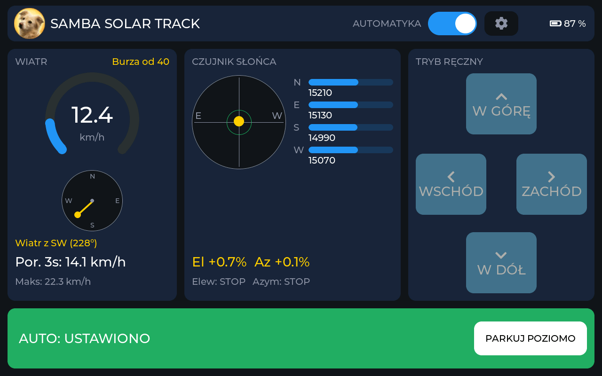
Także pozostałe ekrany (konfiguracja, USTAWIENIA, sieć, godzina, dostęp zdalny, motyw, dźwięk, ekran, firmware, kalibracja) wykorzystują cały wyświetlacz: są zaprojektowane na 1280 × 800 pikseli, z dużą czcionką (na przykład Rys. 24). Duży pulpit został 20.10.2026 wgrany na płytę testową, urządzenie jest potem dostępne w sieci. Jak tam wygląda, czy palce trafiają w przyciski i czy działa płynnie, nie zostało jeszcze potwierdzone; powiększone pozostałe ekrany są zbudowane tylko na komputerze. Obrazy tutaj wygenerowało narzędzie do zrzutów ekranu z prawdziwego kodu interfejsu.
Język wyświetlacza (w przygotowaniu, wygenerowany na komputerze, nie sprawdzony na urządzeniu)
Wyświetlacz jest dostępny w siedmiu językach: angielskim, niemieckim, francuskim, hiszpańskim, niderlandzkim, portugalskim i polskim. Fabrycznie jest to angielski. Dlatego przy pierwszym starcie najpierw pojawia się wybór języka (Rys. 13h), jeszcze przed konfiguracją. Przyciski noszą nazwę języka w tym właśnie języku, na przykład POLSKI lub FRANÇAIS, abyś znalazł swój język także wtedy, gdy nie rozumiesz aktualnie wybranego.
- Wybierz językDotknij swojego języka. Oczekiwane: Przycisk robi się niebieski z haczykiem, a wszystkie teksty od razu zmieniają się na ten język.
- DalejPrzy pierwszym starcie dotykasz zielonego przycisku DALEJ (po angielsku: NEXT). Oczekiwane: Konfiguracja pojawia się w wybranym języku. Wybór zostaje zapisany, także po ponownym uruchomieniu.
- Zmiana późniejOtwórz konfigurację (koło zębate na pulpicie) i dotknij w prawym górnym rogu przycisku z nazwą języka, na przykład POLSKI .... Oczekiwane: Pojawia się wybór języka; po wyborze WSTECZ prowadzi z powrotem do konfiguracji. Sterownik pracuje przy tym bez przerwy dalej, także ochrona przed burzą.
Tłumaczenia wykonał maszynowo Claude 28.10.2026; nie sprawdził ich żaden rodzimy użytkownik języka (założenie). Jeśli urządzenie ma już starszy firmware i jest skonfigurowane, po aktualizacji pozostaje po niemiecku. Komunikaty w protokole (logu) zawsze pozostają po niemiecku. Interfejs WWW pokazuje ten sam język co urządzenie. Ta instrukcja również jest dostępna we wszystkich siedmiu językach, jako strona i jako PDF; język zmieniasz na górze w spisie treści. Wiążąca jest wersja niemiecka; także pozostałe wersje instrukcji są przetłumaczone maszynowo i nie zostały sprawdzone przez rodzimych użytkowników języka (założenie).
Dźwięki z głośnika (w przygotowaniu, usłyszane na płycie testowej)
Płyta 10,1 cala ma wbudowany głośnik. Rozpoczęty firmware używa go do dźwięków. Na płycie testowej dźwięki słychać od 20.10.2026 (firmware 0.4.6); poziomy głośności i dźwięki alarmowe nie zostały jeszcze sprawdzone osobno. To, co tu jest napisane, opisuje, co firmware w tym zakresie zawiera.
| Dźwięk | Kiedy | Jak często |
|---|---|---|
| Potwierdzenie: krótki, wysoki pisk | przy każdym dotknięciu przycisku lub przełącznika na wyświetlaczu | raz na każde dotknięcie; można wyłączyć |
| Usterka układu we/wy: trzy krótkie, wysokie dźwięki | układ wyjść przełączających na płytce nie odpowiada | od razu, potem co 20 sekund |
| Burza: trzy razy wysoki-niski | ochrona przed burzą położyła moduł poziomo | od razu, potem co minutę |
| Błąd napędu: dwa długie dźwięki | napęd nie osiągnął na czas położenia krańcowego | od razu, potem co 30 sekund |
| Awaria anemometru: wysoki, potem niski | anemometr przestał odpowiadać, nie ma ochrony przed burzą | od razu, potem co 2 minuty |
Dźwięki alarmowe brzmią, dopóki trwa dany stan. Jeśli trwa kilka naraz, słyszysz tylko najważniejszy (w kolejności tabeli). Dźwięk alarmowy zawsze ma pierwszeństwo przed piskiem potwierdzenia. Dopóki konfiguracja nie jest zakończona, nie ma dźwięków alarmowych.
Ustawianie: W konfiguracji przycisk DŹWIĘK … prowadzi do osobnego ekranu. Tam włączasz lub wyłączasz dźwięki potwierdzenia i ustawiasz głośność przyciskami − i + w dziesięciu poziomach. Oczekiwane: Po każdej zmianie głośności rozbrzmiewa krótki dźwięk próbny na nowym poziomie; ustawienie obowiązuje od razu i zostaje zachowane po wyłączeniu. Fabrycznie dźwięki potwierdzenia są włączone, a głośność ustawiona na poziom 7.
Aby burza czy błąd nie zostały przeoczone, dźwięki alarmowe brzmią co najmniej na poziomie 7, nawet jeśli ustawisz niższą głośność. Głośniej niż poziom 10 się nie da: ta granica jest wbudowana na stałe, aby zasilacz i bezpiecznik płytki nie zostały przeciążone nawet przy pełnym dźwięku alarmowym i ładującym się akumulatorze. Czy poziomy są dobrze słyszalne na prawdziwym urządzeniu i ile prądu głośnik naprawdę potrzebuje, zostanie zmierzone, gdy płyta będzie dostępna; do tego czasu granica jest założeniem.
Spoczynek i czujnik ruchu (w przygotowaniu, nie sprawdzone na urządzeniu)
Płyta 10,1 cala ma wbudowaną kamerę. Rozpoczęty firmware używa jej jako czujnika ruchu: jeśli przez jakiś czas nikt nie stoi przed wyświetlaczem, pokazuje on wygaszacz ekranu lub wyłącza podświetlenie. Gdy ktoś podejdzie do wyświetlacza, sam znów się rozjaśnia. Jest to dotąd zbudowane i przetestowane tylko na komputerze; nie sprawdzono jeszcze, czy kamera na urządzeniu niezawodnie wykrywa ruch.
Firmware analizuje obrazy z kamery tylko w pamięci roboczej, aby wykryć ruch. Nie zapisuje żadnego obrazu, żadnego nie wyświetla i żadnego nie wysyła przez sieć, także do interfejsu WWW. Z każdego obrazu zostaje tylko średnia jasność małych pól.
Co się dzieje:
- Po ustawionym czasie oczekiwania bez dotyku i bez ruchu przed wyświetlaczem pojawia się wygaszacz ekranu (Rys. 13e): ciemna powierzchnia z logo, godziną, stanem z paska stanu w jego kolorze i wiatrem. Tekst co 20 sekund przesuwa się w inne miejsce, światło jest przyciemnione. Albo wyświetlacz całkiem się wyłącza, jeśli tak ustawisz.
- Budzenie: ruch przed wyświetlaczem lub dotyk. Dotyk, który budzi wyświetlacz, niczego nie wywołuje: możesz więc dotknąć dowolnego miejsca, nie naciskając przypadkiem przycisku. Dopiero gdy puścisz palec, działa następny dotyk.
- Przy zagrożeniu wyświetlacz pozostaje włączony: Przy burzy, awarii anemometru, błędzie napędu i usterce układu we/wy wyświetlacz się rozjaśnia i pozostaje jasny, dopóki trwa dany stan.
- Sterownik w spoczynku pracuje całkiem normalnie dalej, także ochrona przed burzą.
- W ciemności (pomieszczenie bez światła) kamera nie wykrywa ruchu; wtedy budzi tylko dotyk. Jeśli nagle zrobi się jasno, na przykład gdy ktoś włączy światło lub stanie tuż przed kamerą, wyświetlacz również się budzi. Kto stoi zupełnie nieruchomo, po kilku sekundach nie jest już wykrywany jako ruch.
Ustawianie:
- Otwórz ekranOtwórz konfigurację (koło zębate na pulpicie) i dotknij EKRAN … (Rys. 13d). Oczekiwane: Pojawia się ekran EKRAN.
- Wybierz rodzajDotknij ZAWSZE WŁ., WYGASZACZ EKRANU lub EKRAN WYŁ.. Oczekiwane: Wybrany przycisk jest niebieski z żółtą ramką. Przy ZAWSZE WŁ. czas oczekiwania i czujnik ruchu nie mają znaczenia i są zablokowane.
- Ustaw czas oczekiwaniaPrzyciskami − i + wybierasz 1, 2, 3, 5, 10, 15, 20, 30, 45 lub 60 minut. Oczekiwane: Liczba pośrodku się zmienia.
- Czujnik ruchuPrzełącznikiem włączasz lub wyłączasz czujnik ruchu. Gdy jest wyłączony, budzi tylko dotyk. Oczekiwane: Obok widać „CZUJNIK RUCHU WŁ.” lub „WYŁ.”, pod spodem „Kamera gotowa.” Jeśli widać tam na pomarańczowo „Kamera niedostępna”, firmware nie znalazł kamery; wtedy budzi tylko dotyk.
- Sprawdź czujnik ruchuPod spodem wiersz na bieżąco pokazuje, co widzi kamera: klatki na sekundę, jasność (0 do 255) i ile pól właśnie się porusza, na przykład „5 kl./s, jasność 92, ruch 412 (od 96)”. Pomachaj w odległości ok. jednego metra przed wyświetlaczem. Oczekiwane: Liczba za „ruch” rośnie powyżej 96, a wiersz robi się żółty; wtedy ten ruch obudziłby wyświetlacz. Jeśli widać „za ciemno”, pomieszczenie jest dla kamery zbyt ciemne; jeśli widać „Kamera wył.”, wybrano ZAWSZE WŁ. lub czujnik ruchu jest wyłączony. Zapisz sobie wartości, jeśli budzenie nie działa: pomogą przy ustawianiu.
- Akumulator wbudowanyPrzełącznikiem AKUMULATOR WBUDOWANY pokazujesz lub ukrywasz poziom naładowania akumulatora w prawym górnym rogu pulpitu (rozdział 7). Oczekiwane: Obok widać „AKUMULATOR WBUDOWANY” lub „BRAK AKUMULATORA”; na pulpicie wskazanie pojawia się lub znika, a koło zębate i AUTOMATYKA odpowiednio się przesuwają.
- WsteczDotknij WSTECZ. Oczekiwane: Znów pojawia się konfiguracja. Wszystko obowiązuje od razu i zostaje zachowane po wyłączeniu; ponowne uruchomienie nie jest potrzebne.
Fabrycznie spoczynek jest ustawiony na wygaszacz ekranu po 5 minutach z włączonym czujnikiem ruchu (propozycja, jeszcze nie ostateczna). Zdalnie (interfejs WWW, ioBroker) nie da się tego ustawić.
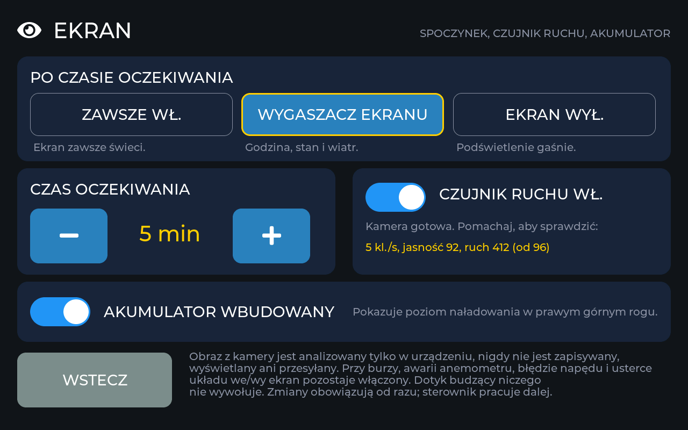
Na płycie testowej (21.10.2026) pojawia się wygaszacz ekranu, a dotyk budzi wyświetlacz; ruch jeszcze go nie budzi. Ponadto urządzenie przy wgrywaniu nowego firmware przez sieć od razu się restartowało; następny firmware zatrzymuje więc kamerę, zanim zacznie zapis. Ten firmware wgraj raz przez USB (Pierwsze wgranie firmware), potem znów działa to przez sieć. Następny firmware sam też ustala, w której części danych obrazu jest jasność, i pokazuje wartości pomiarowe kamery na ekranie EKRAN (krok „Sprawdź czujnik ruchu”). Nadal otwarte jest, czy kamera zostanie znaleziona, jak niezawodnie wykrywa ruch (odległość, światło, fałszywe alarmy np. przez migające światło lub zwierzęta), czy wyświetlacz przy działającej kamerze pozostaje spokojny i czy przyciemniona jasność wygaszacza ekranu jest odpowiednia. Progi wykrywania są oszacowane (założenie) i zostaną dopasowane po teście.
Nowy firmware z internetu (w przygotowaniu, nie sprawdzone na urządzeniu)
Firmware dla płyty 10,1 cala może sam sprawdzić, czy jest nowszy firmware, i na twoje życzenie zainstalować go z internetu. Także to jest dotąd zbudowane i przetestowane tylko na komputerze. To, co tu jest napisane, opisuje, co firmware w tym zakresie zawiera.
Aby urządzenie przyjęło nowy firmware, musi on być podpisany kluczem projektu (podpis). Obecny klucz jest wpisany od firmware 0.4.7. Starszy firmware (do 0.4.6) zna tylko wcześniejszy klucz, który nie jest już używany: urządzenie z tym firmware nigdy nie znajdzie nowej wersji przez internet. Wgraj wtedy raz 0.4.7 przez interfejs WWW (KONFIGURACJA, aktualizacja firmware) lub jak wyżej przez kabel USB; potem dalej działa to przez internet. Czy sprawdzanie i instalacja na urządzeniu przebiegają tak, jak tu opisano, zostanie dopiero wypróbowane z wersjami 0.4.7 i 0.4.8. Jeśli sprawdzanie zgłosi błąd (na przykład „brak połączenia ze źródłem wydań”), przycisk ZAINSTALUJ pozostaje zablokowany.
Co urządzenie robi samo: Gdy Wi-Fi jest połączone, sprawdza raz dziennie (pierwsze sprawdzenie 2 do 20 minut po połączeniu). Pobiera w tym celu mały plik, manifest, przez szyfrowane połączenie (HTTPS) ze źródła wydań projektu pod https://firmware.samba-solar.de/. Nigdy nie instaluje samo. Jeśli jest nowsza wersja, w pasku nagłówka na górze małymi żółtymi literami widać NOWY FIRMWARE, a pod spodem numer. Dźwięku przy tym nie ma.
Podgląd i instalacja:
- Otwórz ekranKoło zębate w prawym górnym rogu, potem w konfiguracji przycisk FIRMWARE …. Przycisk jest dostępny dopiero wtedy, gdy konfiguracja została raz zapisana. Oczekiwane: Ekran FIRMWARE pokazuje działającą wersję z datą kompilacji, kiedy ostatnio sprawdzano, i wynik.
- Sprawdź teraz (opcjonalnie)Przycisk SPRAWDŹ TERAZ. Działa najwyżej raz na minutę i tylko z połączonym Wi-Fi. Oczekiwane: Po kilku sekundach widać „AKTUALNY”, „DOSTĘPNY NOWY FIRMWARE” z numerem, datą i krótkim opisem lub „SPRAWDZANIE NIEUDANE” z przyczyną.
- ZainstalujPrzycisk ZAINSTALUJ (tylko przy „DOSTĘPNY NOWY FIRMWARE”) i potwierdź pytanie przyciskiem ZAINSTALUJ. Oczekiwane: „POBIERANIE …” z paskiem. Sterownik reguluje przy tym całkiem normalnie dalej, także ochrona przed burzą. Przyciskiem ANULUJ można przerwać pobieranie; wtedy nic się nie zmienia.
- Zapis i ponowne uruchomieniePo pobraniu urządzenie sprawdza plik. Dopiero gdy żaden napęd już nie jedzie, wyłącza wszystkie wyjścia i zapisuje nowy firmware. Oczekiwane: Nad ekranem widać „AKTUALIZACJA FIRMWARE – Sprawdzony firmware jest zapisywany”; potem sterownik uruchamia się ponownie. Ustawienia zostają zachowane.
- Po ponownym uruchomieniuNic nie rób i pozwól urządzeniu działać co najmniej dwie minuty. Oczekiwane: Nowa wersja widnieje na ekranie FIRMWARE. Po dwóch minutach nowy firmware sam się potwierdza, gdy wyświetlacz i płytka działają oraz – tylko jeśli Wi-Fi jest włączone – urządzenie od ponownego uruchomienia co najmniej raz połączyło się z Wi-Fi (autotest).
Zapis trwa według szacunku ok. jednej minuty (założenie, jeszcze nie zmierzone). W tym czasie wszystkie napędy stoją, a moduł nie zostanie położony poziomo przy burzy. Dlatego instalacja nie zaczyna się, dopóki działa ochrona przed burzą lub jedzie napęd. Jeśli podczas pobierania lub między pobraniem a zapisem nadejdzie burza, urządzenie przerywa i odrzuca pobrany plik, nawet jeśli burza szybko minie; potem musisz ponownie potwierdzić instalację. Najlepiej instaluj przy spokojnej pogodzie.
Jeśli nowy firmware się zawiesi lub w ciągu pierwszych dwóch minut uruchomi się ponownie, urządzenie samo uruchamia z powrotem dotychczasowy firmware. To samo dzieje się, gdy nie przejdzie on na czas autotestu (na przykład dlatego, że wyświetlacz lub płytka nie odpowiada albo nigdy nie łączy się z Wi-Fi): wtedy najpierw wyłącza wszystkie wyjścia i uruchamia dotychczasowy firmware. Termin wynosi 12 minut po ponownym uruchomieniu; gdy Wi-Fi jest włączone, 30 minut, aby krótka awaria routera nie prowadziła od razu do powrotu. Gdy Wi-Fi jest wyłączone, nie ma ono znaczenia dla autotestu. Oba terminy to wartości proponowane, jeszcze nie wypróbowane na urządzeniu. Dopóki nowy firmware czeka na autotest, na górze między nazwą produktu a AUTOMATYKA nad wszystkimi ekranami widać pomarańczowy pasek: czas do sprawdzenia, potem „AUTOTEST NIEUDANY”, stan warunków (WYJŚCIA i WI-FI: OK, BRAK lub WYŁ.) i czas do powrotu. Bez płytki RearCircuitBoard_10 widać tam „BEZ PŁYTKI: WŁĄCZ SYMULACJĘ” (Rys. 13c). Na czym autotest się nie powiódł, jest też zapisane w logu. Po powrocie wyświetlacz zgłasza „AKTUALIZACJA WYCOFANA”; dotknij OK.
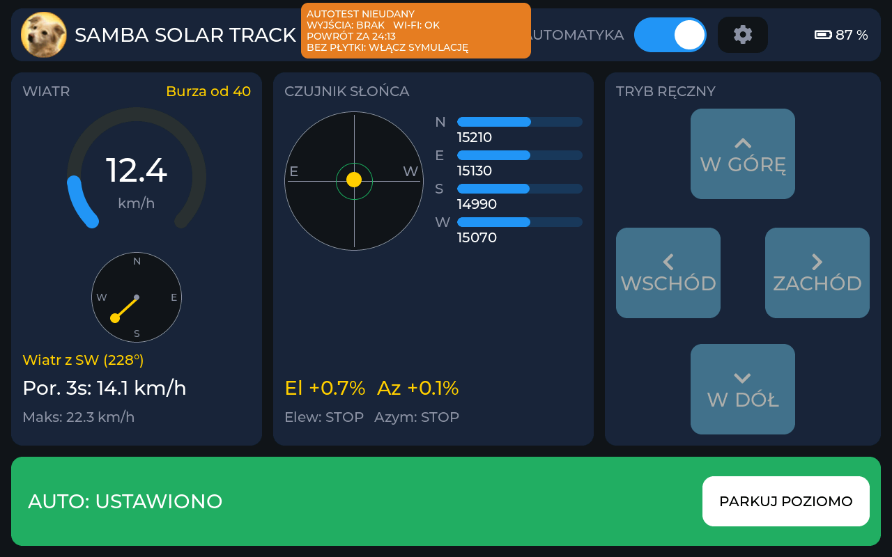
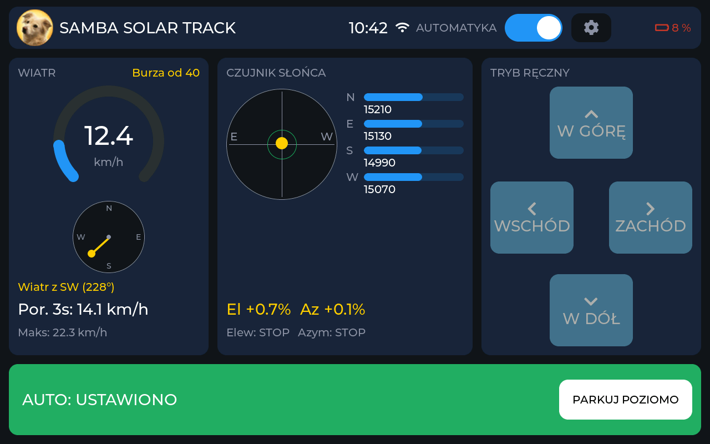
Ta sama wersja nie jest potem już proponowana w pasku nagłówka, ale na ekranie FIRMWARE można ją mimo to zainstalować jeszcze raz. Na płycie 10,1 cala dotyczy to także aktualizacji przez interfejs WWW.
Zdalnie: W interfejsie WWW w KONFIGURACJA jest blok „Firmware z internetu” z tymi samymi danymi i przyciskami SPRAWDŹ TERAZ i ZAINSTALUJ. Obsługiwać może tylko zalogowane urządzenie (token), a przełącznik „Zdalne sterowanie zablokowane” na wyświetlaczu blokuje jedno i drugie. Codzienne sprawdzanie działa dalej także przy zablokowanym zdalnym sterowaniu.
Przy sprawdzaniu urządzenie wysyła tylko proste zapytanie ze swoją wersją firmware; żadnego identyfikatora, hasła ani tokenu. Strona projektu widzi przy tym, jak każda strona internetowa, publiczny adres IP twojego łącza internetowego. Przełącznika wyłączającego sprawdzanie nie ma; bez Wi-Fi sprawdzanie się nie odbywa.
Nachylenie na polecenie: ruch do stałego kąta (w przygotowaniu, nie sprawdzone na urządzeniu)
Zamiast śledzić słońce, elewacja może na twoje polecenie przejechać do stałego kąta, na przykład płaskiego latem lub stromego zimą. Potem automatyka jest wstrzymana, dopóki nie anulujesz polecenia. Jest to dostępne tylko w wersji 10-calowej i tylko w trybie pracy TYLKO PIONOWO. Przy dwóch osiach (pionowa + pozioma) karta NACHYLENIE, kąty zadane, czasy ruchu i stelaż są ukryte. Także ta funkcja jest dotąd zbudowana i przetestowana tylko na komputerze; obrazy wygenerowało narzędzie do zrzutów ekranu z prawdziwego kodu interfejsu.
Fabrycznie nie ma czujnika nachylenia. Firmware oblicza nachylenie z czasu, w którym rzeczywiście włączał napęd, oraz ze skalibrowanych czasów ruchu. Dlatego na wyświetlaczu zawsze widać „OK. 30°” lub „NIEZNANE”, nigdy dokładnej liczby. Jak dokładne to jest, opisano niżej; wszystkie dane na ten temat to założenia, dopóki nie zostaną zmierzone na stelażu. Dokładniej działa to z odczytem Halla: wtedy firmware liczy impulsy napędu i pokazuje nachylenie bez „OK.”.
Jakie kąty są dostępne: zawsze 0° (poziomo), 30° i 60° (stromo), do tego do dwóch kątów zadanych, które ustawiasz w USTAWIENIA (pełne stopnie od 1 do 59, nie 30, nie dwa razy ten sam; 0 oznacza wył.). Przyciski są zawsze uporządkowane według kąta. Dopóki czas ruchu nie jest skalibrowany, działają tylko 0° i 60°; pozostałe kąty są wyszarzone.
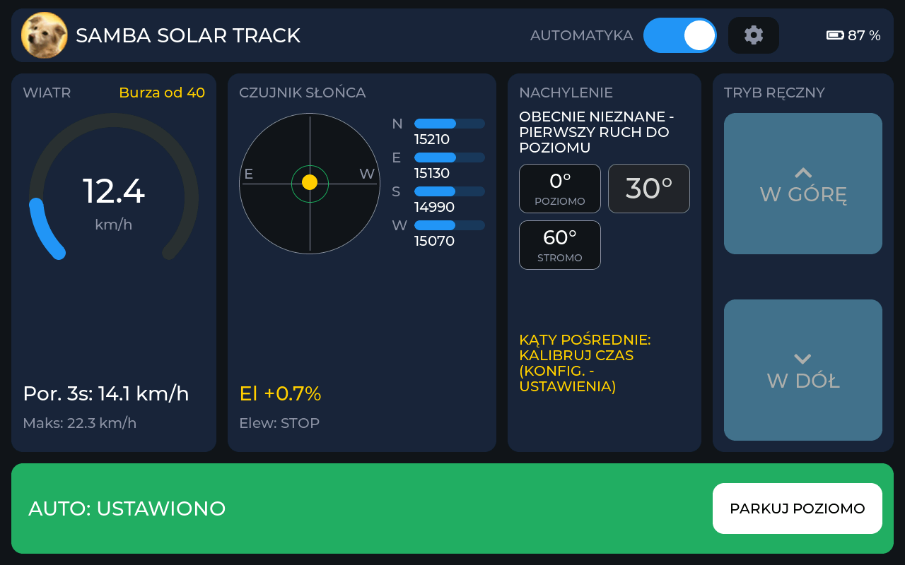
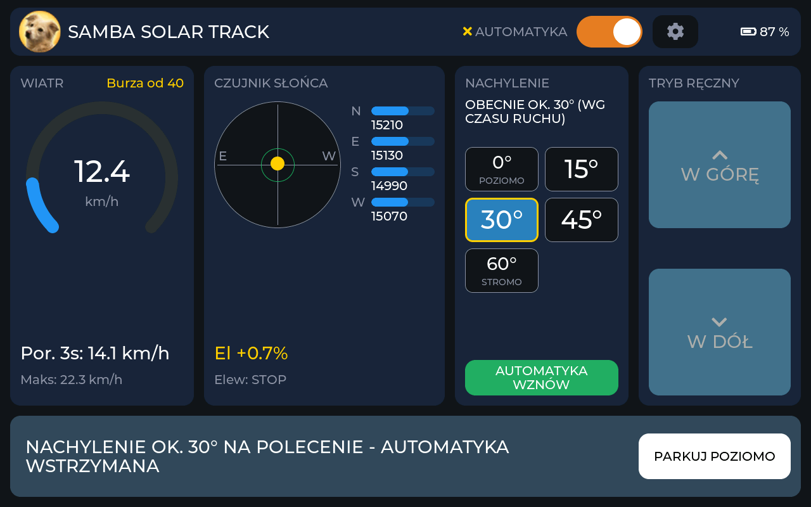
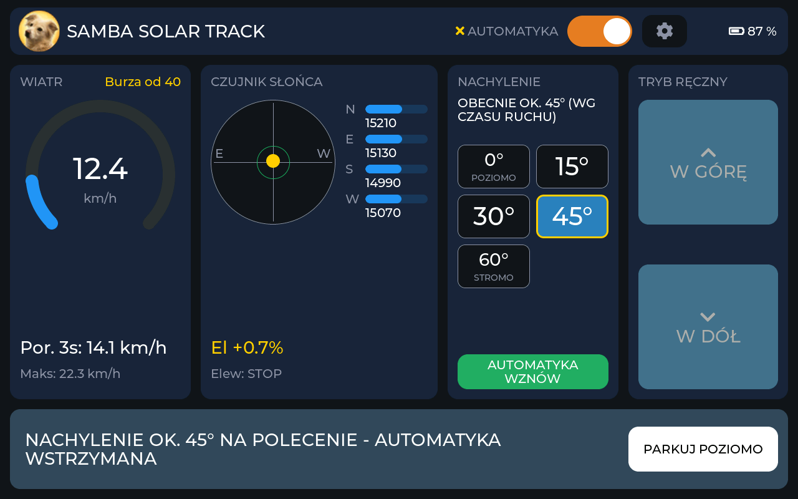
| Wskazania w karcie NACHYLENIE | Znaczenie |
|---|---|
| OBECNIE NIEZNANE - PIERWSZY RUCH DO POZIOMU | Położenie od włączenia nie jest znane lub szacunek jest zbyt niepewny (więcej niż 6°). |
| OBECNIE OK. 31° (WG CZASU RUCHU) | Szacowane nachylenie. |
| Przycisk kąta niebieski z żółtą ramką | To nachylenie na polecenie obowiązuje, także podczas burzy, parkowania lub trybu ręcznego. Pod spodem jest przycisk WZNÓW AUTOMATYKĘ. |
| Przełącznik AUTOMATYKA pomarańczowy, przed nim żółty krzyżyk | Automatyka jest włączona, ale wstrzymana, bo obowiązuje nachylenie na polecenie. Po WZNÓW AUTOMATYKĘ przełącznik znów jest niebieski, a krzyżyk znika. |
| NIEDOSTĘPNE | Bez zakończonej konfiguracji nie ma nachylenia na polecenie; przyciski są zablokowane. |
Ruch do kąta:
- Odczytaj położenieSpójrz na kartę NACHYLENIE na pulpicie (Rys. 14 lub 15). Oczekiwane: Na górze widać „OBECNIE OK. 31° (WG CZASU RUCHU)” lub „OBECNIE NIEZNANE - PIERWSZY RUCH DO POZIOMU”.
- Wybierz kątDotknij w karcie żądanego kąta. Oczekiwane: Przycisk robi się niebieski z żółtą ramką, pod spodem pojawia się WZNÓW AUTOMATYKĘ, przełącznik AUTOMATYKA na górze robi się pomarańczowy z żółtym krzyżykiem przed nim, a pasek stanu pokazuje przebieg (następny krok).
- ObserwujJeśli położenie jest nieznane lub zbyt niepewne, elewacja najpierw jedzie do poziomu aż do położenia krańcowego, czyli bazowanie. Bez wyłączników krańcowych trwa ono pełny maksymalny czas pracy (przy Samba-Solar-Rack 2.0-E Plus 90 sekund), nawet jeśli rama dawno stoi. Potem następuje ruch do kąta. Oczekiwane: kolejno „NACHYLENIE 45°: BAZOWANIE DO POZIOMU”, „NACHYLENIE 45°: RUCH STROMIEJ, OK. 12°” i na końcu „NACHYLENIE OK. 45° NA POLECENIE - AUTOMATYKA WSTRZYMANA” (Rys. 17). Potem nie ma już korekty.
- Powrót do automatykiDotknij w karcie WZNÓW AUTOMATYKĘ. Oczekiwane: Pasek stanu znów pokazuje AUTO, przełącznik AUTOMATYKA jest znów niebieski bez krzyżyka, śledzenie zaczyna się od nowa.
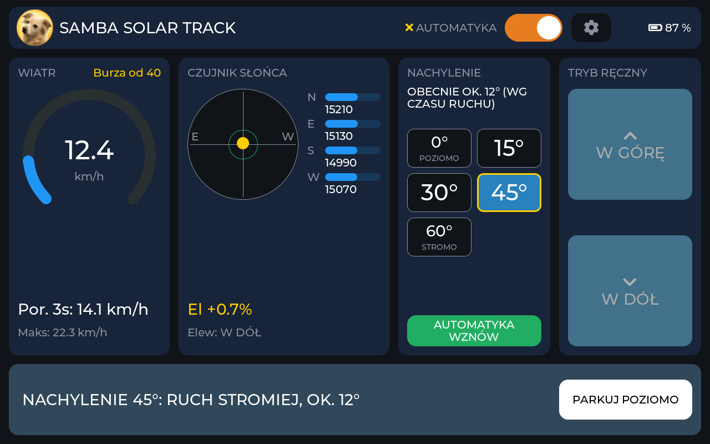
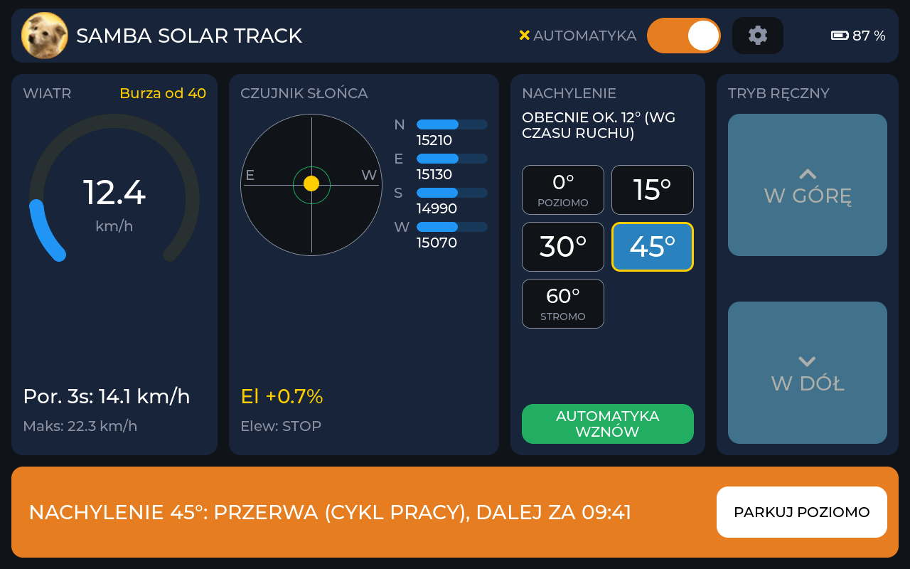
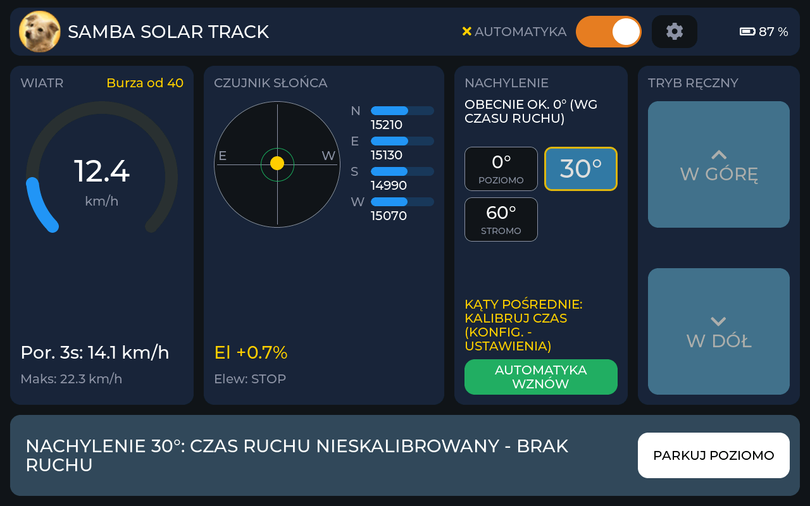
Co ma pierwszeństwo (kolejność priorytetów sterownika): brak konfiguracji, usterka układu we/wy, burza, błąd napędu, tryb ręczny, parkowanie na polecenie i awaria anemometru mają pierwszeństwo. Dopiero potem jest nachylenie na polecenie, a ono z kolei ma pierwszeństwo przed błędami czujnika, nocą i automatyką. Nachylenie na polecenie obowiązuje więc także w nocy i przy usterce czujnika słońca.
| Sytuacja | Co się dzieje |
|---|---|
| Burza, awaria anemometru | Mają pierwszeństwo: elewacja jedzie do poziomu. Potem sama wraca do poleconego kąta. Karta pokazuje „OCHRONA PRZED BURZĄ MA PIERWSZEŃSTWO - POTEM RUCH DO KĄTA” (Rys. 22). |
| PARKUJ POZIOMO | Pozostaje osobnym przyciskiem i ma pierwszeństwo („PARKOWANIE MA PIERWSZEŃSTWO …”). Po anulowaniu parkowania instalacja znów jedzie do kąta. |
| Tryb ręczny (automatyka wył.) | Nachylenie na polecenie spoczywa; działa, gdy tylko automatyka jest znów włączona („DZIAŁA, GDY AUTOMATYKA JEST WŁ.”). |
| Usterka | Ma pierwszeństwo („USTERKA MA PIERWSZEŃSTWO”), nic nie jedzie. |
| Zanik prądu, ponowne uruchomienie | Polecone nachylenie pozostaje zapisane, tak jak polecenie parkowania. Po włączeniu położenie jest jednak nieznane: pierwszy ruch do kąta pośredniego zaczyna się od bazowania. |
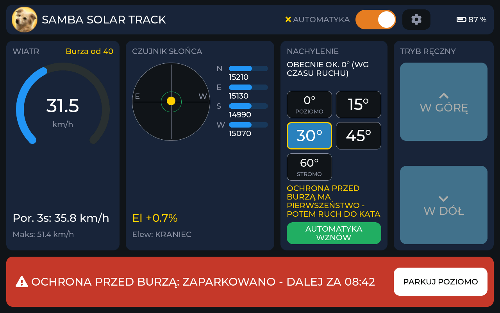
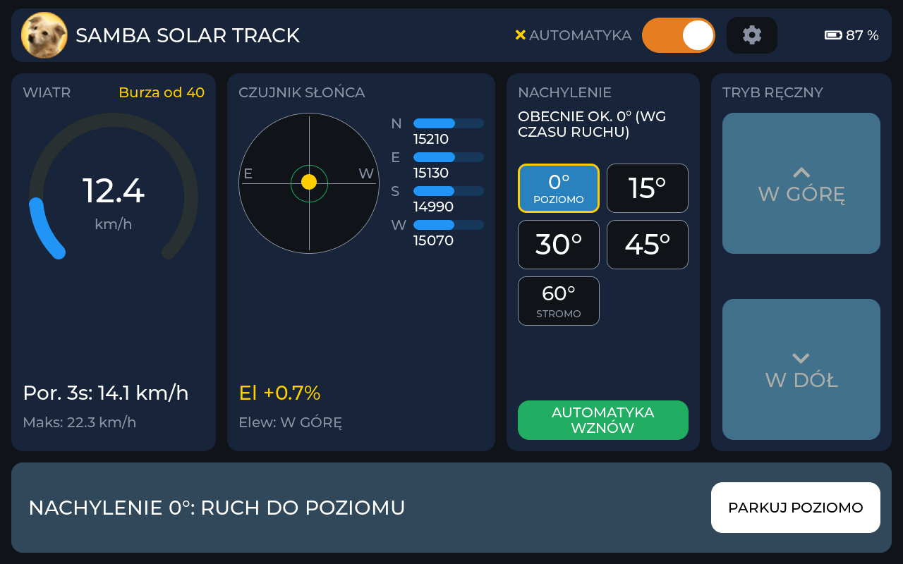
W przeglądarce: Interfejs WWW w wersji 10-calowej pokazuje ten sam układ co wyświetlacz (Rys. 23a i 23b): na szerokim ekranie (PC, tablet, telefon poziomo) pasek nagłówka, karty WIATR (z różą wiatrów, gdy skonfigurowano anemometr z kierunkiem), CZUJNIK SŁOŃCA, NACHYLENIE i TRYB RĘCZNY w tych samych szerokościach, a pod nimi pasek stanu; na telefonie jedna pod drugą. W karcie NACHYLENIE są te same przyciski i tekst „Obecnie ok. 31° (szacowane z czasu ruchu)”. Obsługiwać może tylko zalogowane urządzenie i tylko wtedy, gdy zdalne sterowanie nie jest zablokowane. Kalibracja jest dostępna tylko na wyświetlaczu. Obrazy pochodzą z narzędzia podglądu interfejsu WWW (python3 tools/web_vorschau.py) z symulowanym urządzeniem, nie z prawdziwego trackera.
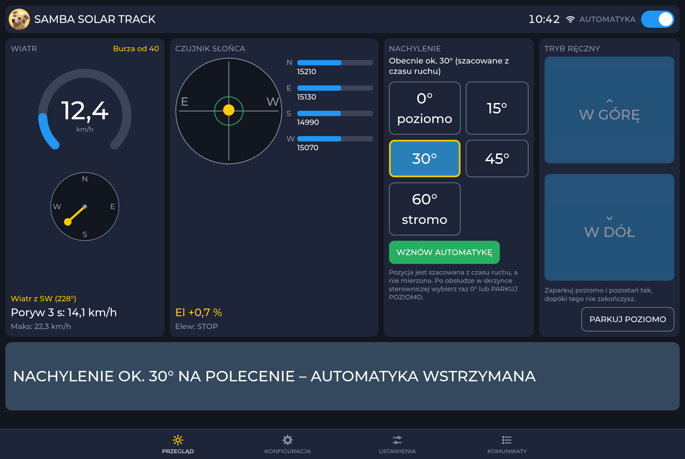
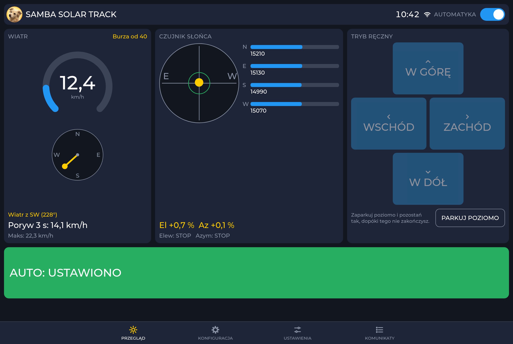
Ustawianie kątów zadanych, czasów ruchu i stelaża
Wartości są w konfiguracji w USTAWIENIA: oba kąty zadane w grupie REGULACJA, czasy ruchu, stelaż, strata rozruchowa i trzy wartości odczytu Halla w grupie URUCHOMIENIE. Wartości z grupy URUCHOMIENIE można zmieniać tylko wtedy, gdy żaden napęd nie jedzie.
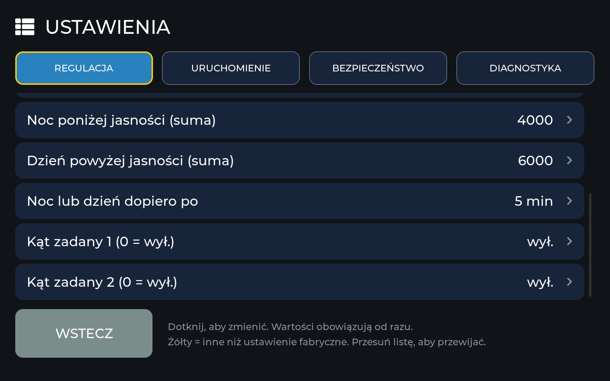
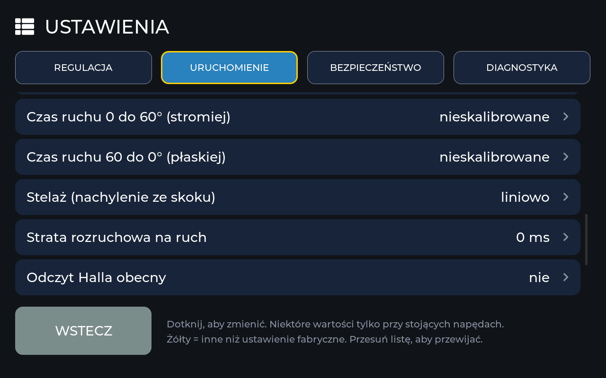
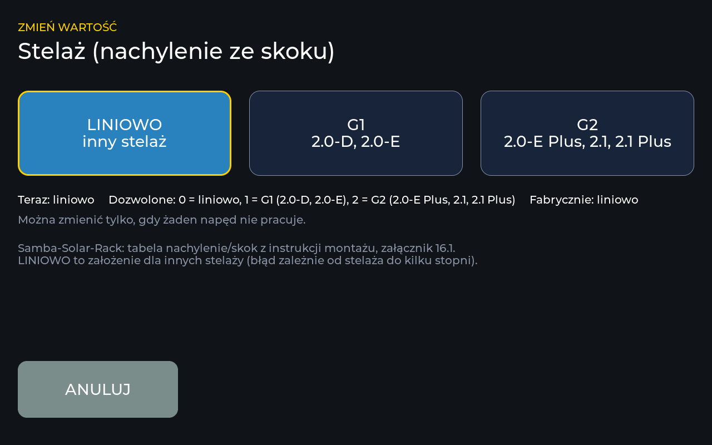
| Wartość | Fabrycznie | Dozwolone | Do czego |
|---|---|---|---|
| Czas ruchu 0 do 60° (stromiej) | nieskalibrowane | 10 do 300 s | Czas na całą drogę od poziomu do stromego położenia. Najlepiej skalibrować. |
| Czas ruchu 60 do 0° (płaskiej) | nieskalibrowane | 10 do 300 s | Czas na drogę z powrotem. Najlepiej skalibrować. |
| Stelaż (nachylenie ze skoku) | liniowo | liniowo, G1 (2.0-D, 2.0-E), G2 (2.0-E Plus, 2.1, 2.1 Plus) | Przelicza drogę napędu na stopnie (tabela z instrukcji montażu, załącznik 16.1). |
| Strata rozruchowa na ruch | 0 ms | 0 do 3000 ms | Część każdego ruchu, w której rama jeszcze się nie porusza. |
| Kąt zadany 1 i 2 | wył. | 1 do 59°, nie 30, bez powtórzeń; 0 = wył. | Dodatkowe przyciski w karcie NACHYLENIE. Obowiązuje od razu. |
Czasy ruchu obowiązują tylko wtedy, gdy są krótsze niż 0,9 × maksymalny czas pracy elewacji. Jeśli ustawisz krótszy maksymalny czas pracy, uznaje się je za nieskalibrowane, dopóki wartości znów nie będą pasować. „LINIOWO” to założenie dla innych stelaży; na stelażu G2 byłoby ono błędne o maksymalnie ok. 2,6°. Jeśli zmienisz kąt zadany, który jest właśnie polecony, lub go wyłączysz, nachylenie na polecenie pozostaje aktywne; WZNÓW AUTOMATYKĘ je anuluje. Dla Samba-Solar-Rack 2.0-E Plus (sterownik synchroniczny HAKIWO SCN4, bez wyłączników krańcowych na trackerze) obowiązuje ponadto: „Wyłącznik krańcowy elewacji” = nie, maks. czas pracy elewacji 90 s. Wpisany ręcznie byłby to przy 2.0-E Plus ok. 75 s według instrukcji montażu; kalibracja jest dokładniejsza.
Kalibracja czasu ruchu
Raz przy uruchomieniu i w miarę możliwości ponownie jesienią i wiosną: temperatura zmienia prędkość napędów (założenie, nie zmierzone). Miejsce: Konfiguracja → USTAWIENIA → URUCHOMIENIE → KALIBRACJA CZASU RUCHU (najniższy wiersz, przewiń w tym celu listę w dół, Rys. 34; z odczytem Halla przycisk nazywa się KALIBRACJA: CZAS RUCHU I IMPULSY HALLA). Sterownik i ochrona przed burzą działają przy tym dalej.
- PrzygotowanieOczyść zakres obrotu: nikt nie stoi przy stelażu, nic nie leży na drodze. Otwórz ekran KALIBRACJA CZASU RUCHU. Jeśli automatyka jest WŁ., dotknij AUTOMATYKA WYŁ.. Oczekiwane: „KROK 1 Z 4: PRZYGOTOWANIE” (Rys. 27), potem można wybrać START.
- STARTDotknij START. Oczekiwane: „RUCH POZIOMO DO POŁOŻENIA KRAŃCOWEGO” (Rys. 28). Bez wyłączników krańcowych styk pozostaje zamknięty przez pełny maksymalny czas pracy, nawet jeśli rama dawno stoi. Jeśli cykl pracy akurat na to nie wystarcza, widać tam „CZEKA NA CYKL PRACY” z pozostałym czasem.
- POMIAR W GÓRĘDotknij POMIAR W GÓRĘ. Czas biegnie (Rys. 29). Dotknij NA MIEJSCU, gdy rama stanie i silnik ucichnie (napęd stoi wtedy na własnym wyłączniku krańcowym). Oczekiwane: „W GÓRĘ zmierzone” z czasem z dokładnością do dziesiątej części sekundy. Z wyłącznikami krańcowymi na trackerze i z odczytem Halla pomiar kończy się sam.
- PrzerwaZalecana jest przerwa ok. 15 minut, aby napędy ostygły (cykl pracy; Rys. 30). Przerwa nie jest wymuszana. Oczekiwane: Ekran pokazuje zalecenie i przycisk POMIAR W DÓŁ.
- POMIAR W DÓŁDotknij POMIAR W DÓŁ i ponownie NA MIEJSCU, gdy rama stanie poziomo. Oczekiwane: Pojawia się drugi czas. Jeśli napęd w trakcie pomiaru stanie z powodu przerwy cyklu pracy, ekran pokazuje „PRZERWA (CYKL PRACY) … NIE na miejscu” (Rys. 31): wtedy nie dotykaj, pomiar potem sam trwa dalej.
- ZastosujEkran pokazuje oba czasy (Rys. 32). Dotknij ZASTOSUJ. Oczekiwane: W USTAWIENIA widać czasy zamiast „nieskalibrowane”; w karcie NACHYLENIE można wybrać wszystkie kąty.
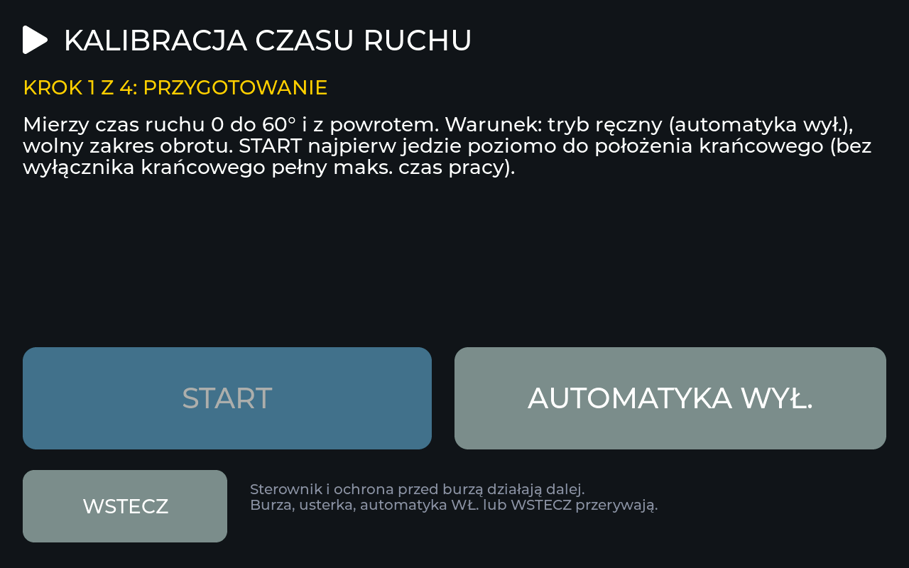
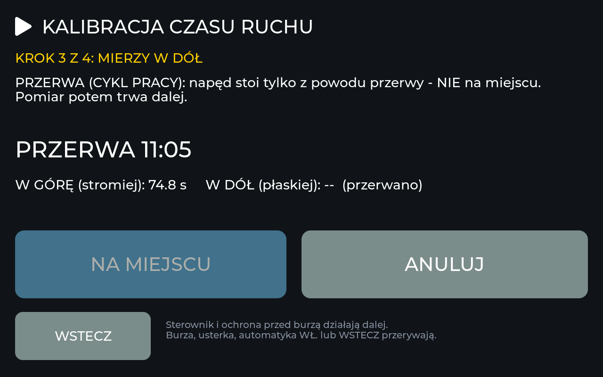
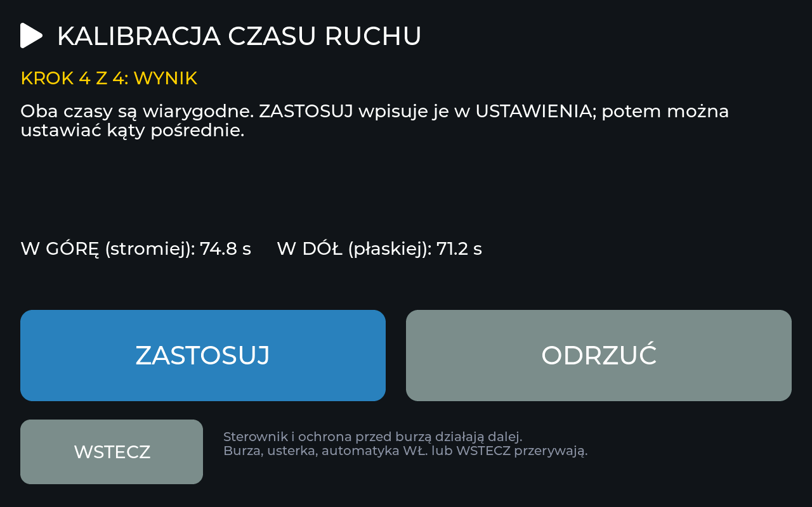
Firmware sprawdza pomiar: każdy czas musi trwać co najmniej 10 sekund i być krótszy niż 0,9 × maksymalny czas pracy, a W GÓRĘ i W DÓŁ mogą się różnić najwyżej dwukrotnie. W przeciwnym razie przyczyna pojawia się żółtą czcionką i nic nie zostaje przyjęte (Rys. 33). Burza, usterka, automatyka WŁ. lub WSTECZ przerywają kalibrację. Dopóki kalibrujesz, urządzenie odrzuca ruchy ręczne zlecane zdalnie.
Jak dokładne to jest?
Wszystkie liczby w tej tabeli to założenia, nie pomiary. Zostaną sprawdzone na stelażu.
| Źródło odchyłki | Rząd wielkości |
|---|---|
| Położenia krańcowe mechaniki | 0° ± 1°, 60° ± 1,5° (instrukcja montażu) |
| Tabela stelaża G1/G2 | poniżej 0,1° |
| Prędkość po kalibracji (obciążenie, napięcie) | ok. ± 3 do 5 % drogi ruchu, ± 1 do 1,5° przy 30° |
| Temperatura (zima w porównaniu z kalibracją latem) | do ok. 3 do 6° przy 30° |
| Rozruch i wybieg na każdy ruch | do niecałego 1° na ruch |
Oczekiwanie: jeden ruch od punktu odniesienia ± 1 do ± 3°, zimą z kalibracją z lata do ok. ± 5°. W bezruchu szacunek się nie zmienia. Po dniu automatyki z wieloma krótkimi ruchami śledzenia zwykle jest „NIEZNANE”; pierwszy ruch do kąta pośredniego zaczyna się wtedy od bazowania. Z każdym ruchem rośnie niepewność; jeśli wynosi najwyżej 3°, elewacja jedzie bezpośrednio, w przeciwnym razie najpierw do poziomu. Stałe wartości do tego (na ruch 0,3°, do tego 8 % przejechanych stopni, tolerancja 1°, najkrótszy ruch 0,5 s, 2° dodatku po resecie w trakcie ruchu) są zapisane na stałe w firmware i również są założeniami.
Jeśli poruszysz moduł w skrzynce sterowniczej (przełącznik kołyskowy, pilot radiowy, przycisk sterownika synchronicznego) lub korbą ręczną, szacunek przestaje się zgadzać. Wybierz potem raz 0° lub PARKUJ POZIOMO, aby firmware znów miał punkt odniesienia. Z włączonym odczytem Halla zlicza on ruchy przez sterownik synchroniczny, dopóki docierają jego impulsy.
Bez wyłączników krańcowych na trackerze położenie krańcowe uznaje się za osiągnięte, gdy styk był zamknięty przez cały maksymalny czas pracy (położenie krańcowe według czasu pracy). Jeśli napędy nie miały przy tym napięcia (zasilacz był wyłączony, a płyta działała na akumulatorze, zadziałał bezpiecznik napędów albo przy dwóch zasilaczach wyłączony był zasilacz napędów) lub sterownik synchroniczny (na przykład HAKIWO SCN4) przerwał ruch bez informacji zwrotnej, ten punkt odniesienia się nie zgadza, a szacunek po nim też nie. Bez odczytu Halla firmware nie może tego rozpoznać; dlatego nigdy nie pokazuje więcej niż „OK.”. Z odczytem Halla rozpoznaje to po brakujących impulsach.
Po restarcie bez utraty zasilania (zapisanie konfiguracji, aktualizacja, awaria) firmware przejmuje szacunek z pamięci, która przetrwa restart; jeśli w chwili resetu pracował akurat napęd, szacunek staje się o 2° mniej pewny. To, czy ta pamięć działa na płycie, jest założeniem. Jeśli podczas ruchu napędy nie mają napięcia (zasilacz wyłączony, a płyta pracuje na akumulatorze, zadziałał bezpiecznik napędów) albo sterownik synchroniczny przerwie ruch, styki i tak się zamykają; po upływie maksymalnego czasu pracy firmware zapamiętuje wtedy błędne położenie krańcowe wg czasu pracy i błędne nachylenie. Dlatego przy burzy, awarii anemometru i parkowaniu ponownie jedzie do poziomu (patrz niżej). To, czy napęd naprawdę się porusza, rozpoznaje odczyt Halla, jeśli jest zamontowany i włączony (również sprawdzone tylko na komputerze). W symulacji funkcja działa z odwzorowanymi napędami; ich pozycja nigdy nie jest przejmowana do rzeczywistej pracy.
[ 120.010][I][main ] Neigung auf Befehl: 45 Grad (vorher keine), Quelle Display [ 120.010][I][track ] Neigung 45 Grad: Bezugsfahrt noetig [ 210.020][I][elpos ] Bezug Flachstellung (Laufzeit-Endlage), Stellung war unbekannt [ 210.540][I][track ] Neigung 45 Grad: Zielfahrt STEILER von ca. 0.0 Grad, erwartet 55.1 s [ 266.160][I][track ] Neigung 45 Grad erreicht: ca. 45.0 Grad nach 55.6 s, Unsicherheit 3.9 Grad
Wiersze są przykładem w formacie firmware; liczby obliczono dla Rack 2.0-E Plus ze stelażem G2 i czasem ruchu 75 sekund. Wiersz stanu wypisywany co 5 sekund kończy się wtedy na „| Neigung ca. 45 Grad (+-4), Ziel 45” (nachylenie ok. 45° (±4), cel 45).
Z odczytem Halla (dokładniej)
Co to jest? Napęd elewacji ma czujnik Halla: przy każdym obrocie silnika wysyła krótkie impulsy. Mała płytka HallTapBoard w skrzynce sterowniczej odbiera te impulsy na sterowniku synchronicznym (odczyt Halla) i przekazuje je przez transoptory z separacją galwaniczną do wejścia impulsowego J22 sterownika (rozdział 6). Sterownik zlicza je swoim licznikiem impulsów i dzięki temu wie, jak daleko przejechał napęd. Nie musi już szacować nachylenia z czasu ruchu. Jest to dostępne tylko w wersji 10-calowej i tylko w trybie pracy TYLKO PIONOWO. Zliczane są tylko impulsy napędu 1.
Analiza impulsów jest zbudowana i przetestowana tylko na komputerze. HallTapBoard to projekt (0.3) i nie został jeszcze wyprodukowany; nie wyjaśniono jeszcze, czy sterownik synchroniczny HAKIWO SCN4 toleruje ten odczyt (rozdział 6). Obrazy wygenerowało narzędzie do zrzutów ekranu z prawdziwego kodu interfejsu.
Bez niego nachylenie na polecenie działa tak, jak opisano wyżej: jest szacowane z czasu ruchu, z „OK.” przed liczbą. Nie potrzebujesz odczytu Halla, aby korzystać z nachylenia na polecenie.
Włączanie – krok po kroku:
- PodłączenieZamontuj i podłącz HallTapBoard (rozdział 6), a jego kabel wepnij do J22 płytki RearCircuitBoard_10 (wejście impulsowe HALL). Oczekiwane: Na ekranie nic nie widać; na HallTapBoard świecą „24V” (żółta) i „5V OK” (zielona).
- WłączenieNa ekranie: koło zębate → USTAWIENIA → URUCHOMIENIE, przewiń listę na sam dół, dotknij „Odczyt Halla obecny” i wybierz TAK (Rys. 34). Jest to możliwe tylko wtedy, gdy żaden napęd nie jedzie. Oczekiwane: Wiersz pokazuje „tak” na żółto, ponieważ wartość różni się od ustawienia domyślnego. Najniższy przycisk nazywa się teraz KALIBRACJA: CZAS RUCHU I IMPULSY HALLA.
- KalibracjaWyłącz automatykę (tryb ręczny), potem otwórz KALIBRACJA: CZAS RUCHU I IMPULSY HALLA. Ekran nadal nazywa się KALIBRACJA CZASU RUCHU. Postępuj jak przy kalibracji czasu ruchu powyżej: START, POMIAR W GÓRĘ, przerwa, POMIAR W DÓŁ. Przejazdy pomiarowe kończą się same, gdy tylko rama stanie (Rys. 35). NA MIEJSCU potrzebujesz tylko wtedy, gdy rama widocznie stoi, a czas mimo to biegnie dalej. Oczekiwane: W wyniku dla W GÓRĘ i W DÓŁ widnieje po jednym czasie i jednej liczbie impulsów Halla, obie liczby mniej więcej równe (Rys. 36).
- ZastosowanieDotknij ZASTOSUJ. Oczekiwane: W USTAWIENIA przy „Impulsy Halla na skok” widnieje liczba zamiast „nieskalibrowane” (średnia z W GÓRĘ i W DÓŁ), a przy czasach ruchu – zmierzone czasy.
- Jeśli się nie udajeJeśli podczas kalibracji pojawi się „HALL LICZY WSTECZ - ODWRÓĆ KIERUNEK LICZENIA (USTAWIENIA)” albo w nagłówku „USTERKA HALLA”: USTAWIENIA → „Odwróć kierunek liczenia Halla” → TAK, potem skalibruj ponownie. Oczekiwane: Przy następnej kalibracji komunikat już się nie pojawia. Jeśli widnieje „ZA MAŁO IMPULSÓW HALLA - SPRAWDŹ ODCZYT HALLA”, impulsy prawie nie docierają: sprawdź kabel na J22 i HallTapBoard (obie lampki muszą świecić, rozdział 6).
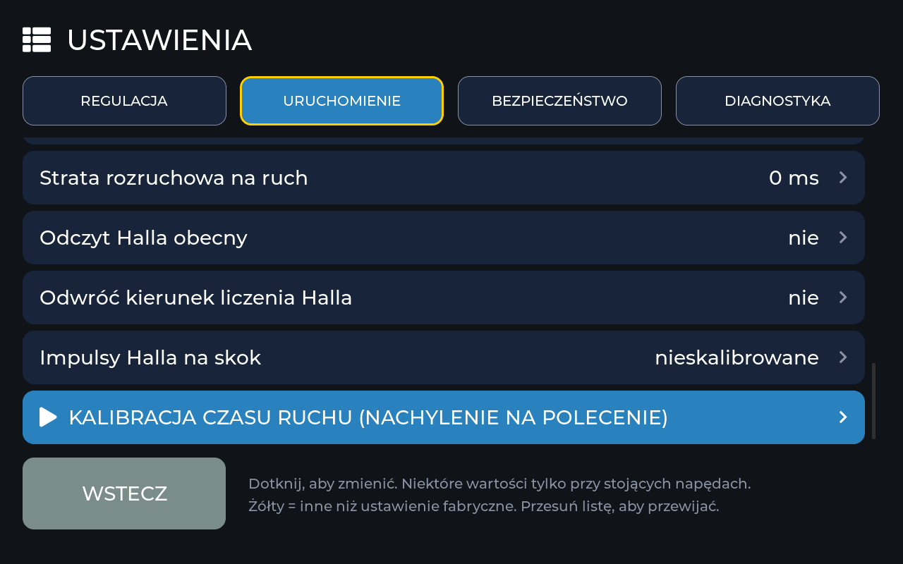
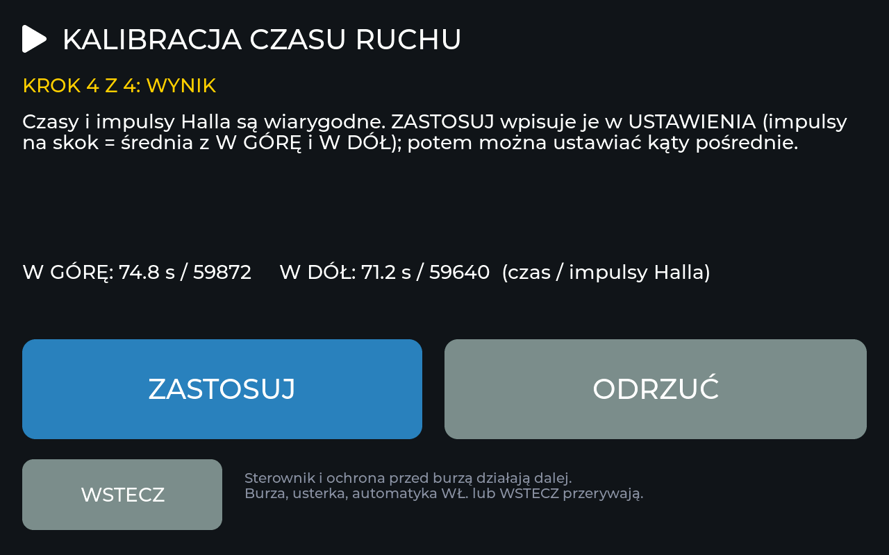
Firmware sprawdza wynik: czasy muszą przejść opisaną wyżej kontrolę, W GÓRĘ i W DÓŁ muszą zliczyć co najmniej po 1 000 impulsów Halla i mogą różnić się najwyżej o 3 % (wartość proponowana). W przeciwnym razie przyczyna pojawia się żółtym tekstem i nic nie zostaje przejęte.
W pracy:
- Karta NACHYLENIE pokazuje zliczone nachylenie bez „OK.”, na przykład „OBECNIE 30° (ODCZYT HALLA)” (Rys. 37). Jak dokładne to jest, zostanie zmierzone na stelażu; przyjęto 0,2° (założenie).
- Po włączeniu nachylenie jest nieznane, dopóki elewacja raz nie osiągnie położenia krańcowego. Dlatego pierwszy ruch do kąta pośredniego zaczyna się od ruchu do pozycji poziomej (ruch referencyjny). Z odczytem Halla kończy się on, gdy tylko napęd stanie, a nie dopiero po maksymalnym czasie pracy (położenie krańcowe wg postoju). Potem elewacja jedzie bezpośrednio do kąta i wyłącza się wcześniej o wyuczony wybieg.
- Jeśli napęd zatrzyma się w połowie drogi (na przykład dlatego, że napędy nie mają napięcia albo sterownik synchroniczny przerwał ruch), sterownik kończy ruch; log zgłasza „Antrieb steht ohne Endlage” (napęd stoi poza położeniem krańcowym). Nachylenie pozostaje znane.
- Jeśli poruszasz modułem przy skrzynce sterowniczej (przyciskami sterownika synchronicznego), sterownik liczy impulsy razem z ruchem; nachylenie pozostaje prawidłowe.
- Przy burzy, awarii anemometru i PARKUJ POZIOMO elewacja jak zawsze jedzie aż do pozycji poziomej. Odczyt Halla nigdy nie przerywa tego ruchu w połowie drogi. Jeśli elewacja na pewno leży już poziomo, ruch kończy się po ok. 1,5 sekundy; jeśli nachylenie jest nieznane, trwa on, jak bez odczytu Halla, przez pełny maksymalny czas pracy.
- Dopóki „Impulsy Halla na skok” nie są skalibrowane, ekran nadal pokazuje szacunek z „OK.”; zakończenie ruchu przy postoju działa jednak już teraz.
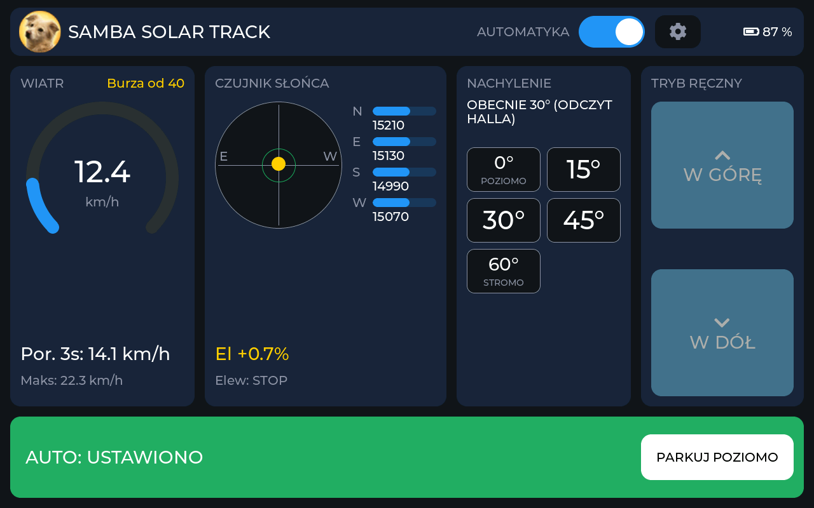
Sterownik nie zlicza pasujących impulsów: nie przychodzą żadne, choć napęd powinien jechać, liczą przeciwnie do kierunku ruchu albo przychodzi ich o wiele za dużo (zakłócenia). Sprawdź kabel na J22, HallTapBoard (lampki „24V” i „5V OK”), napięcie napędów i kierunek liczenia. Dopóki ostrzeżenie jest widoczne, można wybrać tylko 0° i 60°; kąty pośrednie pokazują „NACHYLENIE 45°: USTERKA ODCZYTU HALLA - BRAK RUCHU” (Rys. 38). Ochrona przed burzą, parkowanie, automatyka i tryb ręczny działają dalej jak bez odczytu Halla. Gdy tylko ruch znów dostarczy pasujące impulsy, ostrzeżenie znika samo; nachylenie jest znów znane od następnego położenia krańcowego. W interfejsie webowym pojawia się to samo ostrzeżenie.
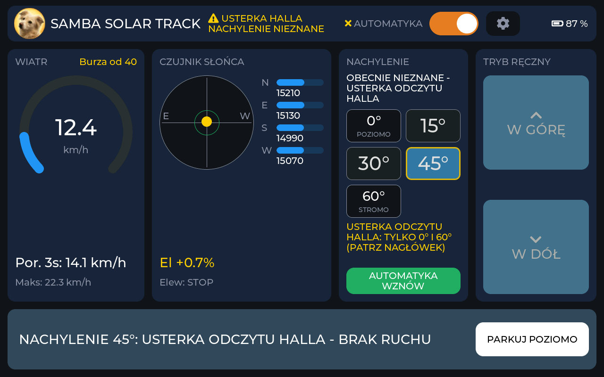
| Wartość (USTAWIENIA → URUCHOMIENIE) | Fabrycznie | Dozwolone | Do czego |
|---|---|---|---|
| Odczyt Halla obecny | nie | tak lub nie | Włącza analizę sygnałów z J22. Włączaj tylko wtedy, gdy HallTapBoard jest podłączony. |
| Odwróć kierunek liczenia Halla | nie | tak lub nie | Na wypadek, gdyby oba kanały A i B docierały odwrotnie; sterownik liczy wtedy wstecz. |
| Impulsy Halla na skok | nieskalibrowane | 1 000 do 2 000 000; 0 = nieskalibrowane | Ile impulsów Halla ma cała droga od 0° do 60°. Wpisuje to kalibracja. |
Wszystkie trzy wartości można zmieniać tylko wtedy, gdy żaden napęd nie jedzie.
[ 120.010][I][main ] Neigung auf Befehl: 30 Grad (vorher keine), Quelle Display [ 120.010][I][track ] Neigung 30 Grad: Bezugsfahrt noetig [ 168.420][I][motor ] Elevation: Endlage PLUS am Stillstand erkannt (Hall-Abgriff) nach 48410 ms [ 168.420][I][main ] Ausgang Elevation: RAUF -> STOP (Hall-Abgriff: Endlage am Stillstand) [ 168.420][I][hall ] Bezug Flachstellung (Stillstand, Stellung war unbekannt (Annahme: eigener Endschalter des Antriebs)), Stellung war unbekannt
Wiersze są przykładem w formacie firmware. Wiersz stanu wypisywany co 5 sekund kończy się z odczytem Halla na „| Neigung 30.2 Grad (Hall), Ziel 30” (nachylenie 30,2° (Hall), cel 30).
Czas rozruchu 1,5 sekundy i czas postoju 1 sekunda; dokładność 0,2°; filtr zakłóceń 5 µs przy najwyżej ok. 1 000 impulsach na sekundę i kanał; kierunek liczenia licznika impulsów; okno położenia krańcowego 3 % drogi; tolerancja przy kalibracji 3 %; to, że sterownik synchroniczny HAKIWO SCN4 może dzielić linię Halla napędu 1 z odczytem; to, że pamięć przetrwająca restart działa na płycie. Jeśli elewacja stoi przy nieznanym nachyleniu, firmware zakłada, że napęd stoi na własnym wyłączniku krańcowym.
Przerwy dla napędów: cykl pracy (w przygotowaniu, niesprawdzone na urządzeniu)
Elektryczne siłowniki liniowe nie mogą pracować bez przerwy, bo inaczej za bardzo się nagrzewają. Sprzedawca HAKIWO podaje dla napędów Samba-Solar-Rack 2.0-E Plus cykl pracy 10 % i najwyżej 2 minuty bez przerwy (instrukcja montażu, rozdział 3.6 i 14.4). Firmware 10-calowy sam pilnuje tego dla każdego napędu. Także to jest zbudowane i przetestowane tylko na komputerze.
- Konto czasu ruchuDla każdego napędu firmware prowadzi konto. Każdy ruch odejmuje od niego czas, każda sekunda postoju znów je uzupełnia (o jedną dziewiątą tego czasu). Pełne konto pozwala na 120 sekund ruchu bez przerwy. Oczekiwane: W normalnej pracy z krótkimi ruchami nadążania niczego nie zauważysz.
- PrzerwaGdy konto jest puste, zaczyna się przerwa. Oczekiwane: Trwający ruch się zatrzymuje. Pasek stanu robi się pomarańczowy i pokazuje „PRZERWA (CYKL PRACY): NAPĘD WOLNY ZA 13:30” (w trybie ręcznym, przy „USTAWIONO” i w czasie spoczynku) albo przy nachyleniu na polecenie „NACHYLENIE 45°: PRZERWA (CYKL PRACY), DALEJ ZA …” (Rys. 20). Pozostały czas jest odliczany w dół.
- Znów wolnyGdy uzbiera się 90 sekund czasu ruchu, napęd jest znów wolny. Po całkowicie opróżnionym koncie trwa to ok. 13,5 minuty. Oczekiwane: Pasek stanu znów pokazuje normalny stan; oczekujący ruch (nachylenie, kalibracja) rusza dalej sam.
Także w czasie przerwy elewacja jedzie do poziomu, gdy nadchodzi burza, anemometr ulega awarii albo wybierzesz PARKUJ POZIOMO. Te ruchy do poziomu mają pierwszeństwo. Wszystko inne czeka: ruch ręczny, nadążanie i ruch do kąta. Automatyka kończy trwający ruch nadążania, gdy zaczyna się przerwa, i w czasie przerwy nie rozpoczyna nowego. Polecenia z przeglądarki urządzenie przyjmuje, ale napęd czeka do końca przerwy.
Bez wyłączników krańcowych ruch osiąga położenie krańcowe tylko wtedy, gdy trwa cały maksymalny czas pracy bez przerwy. Ruch referencyjny, ruch do 0° lub 60° i ruch referencyjny przy kalibracji zaczynają się dlatego dopiero wtedy, gdy konto pozwala na pełny ruch. Do tego czasu ekran pokazuje czas oczekiwania. Dlatego nie zmieniaj kąta zbyt często.
90 sekund do zwolnienia to założenie (pełny ruch od 0° do 60° z zapasem) i zostanie sprawdzone na stelażu. Po restarcie konto znów jest pełne; czas ruchu sprzed restartu nie jest liczony.
[ 930.100][W][motor ] Elevation: Einschaltdauer erreicht -> Pause, Fahrt wieder in 810 s (Flachfahrt bei Sturm, Windmesser-Ausfall und Parken bleibt frei) [ 930.100][I][motor ] Elevation: Fahrt PLUS wegen Einschaltdauer beendet [ 930.100][I][main ] Ausgang Elevation: RAUF -> STOP (Zustand MANUAL) [ 1740.110][I][motor ] Elevation: Pause der Einschaltdauer beendet, Antrieb wieder frei
Ponowny ruch do poziomu przy burzy (w przygotowaniu, niesprawdzone na urządzeniu)
Bez wyłączników krańcowych na trackerze firmware po ruchu trwającym cały maksymalny czas pracy zapamiętuje: „Tu jest położenie krańcowe” (położenie krańcowe wg czasu pracy). Dalej w tym kierunku już nie jedzie. Jest to prawidłowe, dopóki napędy rzeczywiście się poruszyły. Jeśli jednak ulegnie awarii zasilacz (płyta pracuje wtedy dalej na akumulatorze), zadziała bezpiecznik napędów albo sterownik synchroniczny (na przykład HAKIWO SCN4) przerwie ruch, styki płytki i tak przełączają, tylko nic się nie porusza, a firmware błędnie uznaje moduł za ustawiony poziomo.
Dlatego firmware 10-calowy znosi położenie krańcowe wg czasu pracy w kierunku „poziomo” i ponownie jedzie do poziomu:
- Na początkuGdy tylko zaczyna się burza, anemometr ulega awarii albo wybierzesz PARKUJ POZIOMO (także zaraz po włączeniu w jednym z tych stanów). Oczekiwane: Elewacja jedzie do poziomu, nawet jeśli według firmware leży już poziomo. Bez wyłączników krańcowych styk pozostaje przy tym zamknięty przez pełny maksymalny czas pracy.
- Co 30 minutDopóki trwa burza lub awaria anemometru, powtarza się to co 30 minut (przy parkowaniu nie). Oczekiwane: Mniej więcej co 30 minut styk „poziomo” zamyka się jeszcze raz na maksymalny czas pracy.
Każdy z tych ruchów nadal kończy się najpóźniej po maksymalnym czasie pracy. Ma pierwszeństwo i działa także w przerwie wynikającej z cyklu pracy. Przy zamontowanych wyłącznikach krańcowych nie ma położenia krańcowego wg czasu pracy; wtedy nic się nie zmienia. Przy włączonym odczycie Halla ruch kończy się po ok. 1,5 sekundy, jeśli elewacja na pewno leży już poziomo; jeśli nachylenie jest nieznane albo napęd stoi w połowie drogi, trwa jak bez odczytu Halla aż do maksymalnego czasu pracy.
Nie wyjaśniono, czy sterownik synchroniczny HAKIWO SCN4 toleruje to, że sterownik w położeniu krańcowym aż do maksymalnego czasu pracy nadal podaje sygnał „poziomo”, nie zgłaszając kodu błędu 15. Producent na to nie odpowiedział (stan na 12.10.2026); zostanie to sprawdzone na stelażu. Do tego czasu jest to punkt otwarty. Z odczytem Halla ruch do położenia krańcowego kończy się ok. 1 sekundę po tym, jak przestaną przychodzić impulsy, a nie dopiero po maksymalnym czasie pracy; pytanie pozostaje wtedy otwarte dla ruchów do poziomu przy nieznanym nachyleniu i dla pracy bez odczytu Halla.
Bez odczytu Halla firmware nie widzi, czy napędy się poruszają. Ponowny ruch do poziomu pomaga tylko przy burzy, awarii anemometru i parkowaniu. Przy włączonym odczycie Halla brakujące impulsy zostają wykryte (ostrzeżenie „USTERKA HALLA” albo „Antrieb steht ohne Endlage” w logu); obserwowany jest tylko napęd 1. Wejście „24 V obecne” płytki zgłasza tylko napięcie na J11: przy wspólnym zasilaczu więc także jego awarię, ale nigdy zadziałania bezpiecznika napędów.
[ 3600.000][I][track ] Zustand IDLE -> STORM (Auto ein, Boe 44.8 km/h, El +3, Az +0 Promille)
[ 3600.000][I][motor ] Elevation: Laufzeit-Endlage PLUS aufgehoben, neue Flachfahrt erlaubt
[ 3600.000][I][main ] Ausgang Elevation: STOP -> RAUF (Zustand STORM)
[ 3690.010][I][motor ] Elevation: Laufzeit-Endlage PLUS erreicht
… 30 Minuten später, der Sturm hält an …
[ 5400.000][D][track ] Zustand STORM haelt an: Flachfahrt wird erneut erlaubtTo, czy w logu stoi „PLUS” czy „MINUS”, zależy od ustawienia „Kierunek pozycji poziomej”; fabrycznie poziomo = W GÓRĘ = PLUS.
Płytkę RearCircuitBoard_10 można sprawdzić tylko na sprzęcie (rozdział 9). Bez firmware nie przełącza żaden styk i nie świeci żadna lampka. Nie podłączaj akumulatora.
9Pierwsze uruchomienie sprzętu
Te kroki sprawdzają płytkę bez firmware. Każdy krok ma jasny wynik. Przejdź dalej dopiero wtedy, gdy wynik się zgadza. Kroki 4 do 7 wykonujesz z płytką na stole, jeszcze nie na płycie.
- Odłącz akumulatorWtyk akumulatora na płycie pozostaje odłączony. Oczekiwane: Akumulator nie jest z niczym połączony.
- Oględziny i lutyObejrzyj wszystkie luty zacisków. Próbnikiem ciągłości sprawdź na J3 do J6, że żaden pin nie jest połączony z sąsiednim. Ustaw zworkę J16 według części „Anemometr”, J21 na 2-3. Oczekiwane: Brak mostków lutowniczych, obie zworki założone.
- Kontrola wtykówPrzed pierwszym włączeniem porównaj każdy wtyk z tabelą zacisków i obrazem płytki (Rys. 5): właściwy wtyk na właściwym zacisku, opis się zgadza. Potem obejrzyj J7, J10, J14 i J22 z boku. Oczekiwane: Każdy wtyk siedzi równo na swojej listwie bazowej, żaden pin listwy nie jest wolny, żaden wtyk nie wystaje poza koniec zacisku. Gdy tylko pojawi się firmware dla płyty 10,1 cala, dochodzi do tego: przy starcie nie pojawia się żaden komunikat dotyczący wyłączników krańcowych ani lampek.
- Wymuś blokadę i zmierzPodłącz samą płytkę (jeszcze nie na płycie) do 24 V, zworka J21 na 1-2. Multimetrem zmierz na lutach J1: pin 2 względem pinu 6. Oczekiwane: 3,8 do 4,1 V. Jeśli wartość jest wyższa, blokada jest wadliwa: nie używaj płytki.
- Praca i czas oczekiwaniaWyłącz 24 V, J21 na 2-3, włącz znów 24 V (w pomieszczeniu powinno być 15 do 30 °C). Obserwuj napięcie na J1 pin 2 względem pinu 6. Oczekiwane: Najpierw ok. 4 V; po 45 do 101 minutach (zwykle ok. 71 minut) skacze na 4,9 do 5,2 V.
- Próba zimnaPrzy 4,9 do 5,2 V krótko psiknij sprayem zamrażającym obok miedzianej wysepki u góry po lewej, nie bezpośrednio na elementy. Oczekiwane: Napięcie natychmiast spada do ok. 4 V. Po ogrzaniu pozostaje najpierw na 4 V; dopiero po czasie oczekiwania znów rośnie do ok. 5 V.
- Próba ciepłaOstrożnie ogrzej miedzianą wysepkę opalarką na niskim stopniu powyżej 37 °C; temperaturę sprawdź termometrem przy wysepce, nie powyżej 60 °C. Oczekiwane: Napięcie spada do ok. 4 V. Po ostygnięciu wraca po czasie oczekiwania znów do ok. 5 V. Ta próba wykrywa błędy lutowania, których spray zamrażający nie wykrywa.
- MontażOsadź płytkę zgodnie z rozdziałem 5 na płycie, z tulejami dystansowymi i padami. Oczekiwane: Tuleje i pady siedzą pod wysepką i nie przesuwają się; płytka leży równo na wszystkich czterech tulejach.
- Włącz płytęPrzełącznik suwakowy płyty na WŁ., włącz 24 V. Oczekiwane: Płyta się uruchamia (ekran pokazuje obraz oprogramowania fabrycznego albo bez firmware pozostaje ciemny). Lampka ładowania płyty, jeśli jest, pozostaje zgaszona: bez akumulatora nie ma ładowania, więc i tak nie świeci (założenie).
- Wyjścia przełączające i wyłączniki krańcoweDopiero z firmware dla płyty 10,1 cala (w przygotowaniu): przytrzymaj każdy przycisk na ekranie i próbnikiem ciągłości zmierz przez wpięty wtyk między obiema żyłami (wtyki wyjść przełączających); naciśnij każdy wyłącznik krańcowy. Oczekiwane: Zamyka się dokładnie przynależny styk, zgłaszany jest dokładnie naciśnięty wyłącznik krańcowy.
To, czy wyłączanie przy przepięciu (rozdział 5) działa, można sprawdzić tylko zasilaczem laboratoryjnym na prototypie; firmware nie może tego później sprawdzić. Ta próba należy do planu pomiarów przed zamówieniem (załącznik 11 E).
Spray zamrażający tylko krótko i z odległości 10 do 20 cm, gorące powietrze tylko na niskim stopniu. Nie dotykaj niczego na zaciskach 24 V, dopóki jest na nich napięcie.
10Pojęcia wyjaśnione prosto
- Zaślepka
- Pokrywka z tworzywa sztucznego zamykająca otwarty koniec profilu aluminiowego. Uchwyt czujnika słońca zastępuje taką zaślepkę i dodatkowo trzyma czujnik.
- Ściąganie izolacji
- Usunięcie osłony z tworzywa (izolacji) na końcu żyły na określonej długości, aby goły metal miał kontakt w zacisku. Najlepiej ściągaczem izolacji; druciki pod spodem nie mogą przy tym zostać nacięte.
- Rezystor terminujący
- Rezystor 120 Ω między żyłami A i B linii RS485, na obu jej końcach. Zapobiega odbijaniu się sygnałów na końcu linii.
- Słupek dystansowy
- Mały metalowy słupek z gwintem. Z gwintem zewnętrznym i wewnętrznym zastępuje śrubę i jednocześnie trzyma drugą płytkę we właściwej odległości. HallTapBoard go nie potrzebuje: jest przykręcany w swojej obudowie bezpośrednio do kopułek z tworzywa, aby przez mocowanie nie powstało połączenie przewodzące.
- Przetwornica obniżająca napięcie
- Układ, który z wyższego napięcia stałego robi niższe, tu z 24 V – 5 V dla płyty. Traci przy tym mało energii i prawie się nie nagrzewa.
- Tulejka kablowa
- Mała metalowa rurka zaciskana szczypcami na odizolowanym końcu żyły z linki. Trzyma razem wiele cienkich drucików, aby żaden nie odstawał, a żyła mocno siedziała w zacisku.
- ADS1115
- Układ pomiarowy. Zamienia napięcie czujników światła na liczby, z którymi może pracować komputer.
- Profil aluminiowy (profil rowkowy)
- Pręt z aluminium o stałym przekroju, tu 40 × 40 mm, z rowkiem na każdym boku (rowek 8) i otworem pośrodku. Z takich profili zbudowany jest na przykład Samba-Solar-Rack.
- Akumulator (akumulator litowy)
- Bateria wielokrotnego ładowania. Akumulator płyty 10,1 cala ma 3,7 V. Akumulatory litowe wolno ładować tylko w ograniczonym zakresie temperatur, inaczej szybko się starzeją lub stają się niebezpieczne.
- Strata rozruchowa
- Część każdego ruchu, w której rama jeszcze się nie porusza, na przykład dlatego, że przekaźniki się załączają albo sterownik napędów powoli rusza. Przy nachyleniu na polecenie można ją wpisać w USTAWIENIA.
- Anoda / katoda
- Dwa wyprowadzenia diody. Dioda przepuszcza prąd tylko w jednym kierunku, od anody do katody. W diodzie świecącej anoda jest więc plusem, a katoda minusem. Na płytce kreska lub kąt w nadruku zwykle oznacza katodę; w dużej diodzie D5 katodą jest wypustka chłodząca.
- ASA / PETG
- Dwa tworzywa do drukarki 3D. ASA wytrzymuje słońce i ciepło do ok. 100 °C i dlatego nadaje się na obudowę HallTapBoard w skrzynce sterowniczej; PETG łatwiej się drukuje, ale mięknie już od ok. 80 °C (wartości orientacyjne, niesprawdzone w źródłach).
- Wgrywanie (flashowanie)
- Zapisanie firmware w pamięci płyty, przez kabel USB lub przez sieć.
- Azymut
- Obrót modułu ze wschodu na zachód.
- Podgląd montażu
- Obraz gotowej, zmontowanej płytki, który JLCPCB pokazuje przy zamówieniu przed zapłatą. Sprawdzasz na nim, czy każdy element jest właściwie obrócony. Czerwona kropka oznacza przy elementach biegunowych stronę, którą JLCPCB przyjmuje jako odniesienie; nie zawsze jest to pin 1.
- Czujnik ruchu
- Wykrywa, czy coś porusza się przed urządzeniem. Tu robi to wbudowana kamera ekranu: firmware porównuje każdy obraz z poprzednimi, nie zapisując go.
- Punkt odniesienia, ruch referencyjny
- Punkt odniesienia to położenie krańcowe, w którym pozycja jest na pewno znana. Ruch referencyjny jedzie tam (zwykle do poziomu), zanim nachylenie na polecenie najedzie na kąt pośredni. Po osiągnięciu punktu odniesienia niepewność wynosi zero.
- Wygaszacz ekranu
- Ciemny, spokojny widok, który ekran pokazuje, gdy przez pewien czas nikt przed nim nie stoi. Oszczędza prąd i nie oślepia. Dotyk lub ruch przywraca normalny widok.
- Poryw
- Krótki, silny podmuch wiatru. Sterownik liczy ze średnią z trzech sekund.
- Bootloader
- Mały program startowy na początku pamięci. Przy włączeniu uruchamia właściwy firmware. Jest zawarty w obrazie fabrycznym.
- Listwa gniazdowa / listwa kołkowa
- Dwa elementy do łączenia płytek: listwa kołkowa ma kołki, listwa gniazdowa – pasujące otwory. Płytka RearCircuitBoard_10 jest wpięta swoją listwą kołkową J1 w listwę gniazdową J8 płyty.
- Kodek (kodek audio)
- Układ, który zamienia liczby z komputera na napięcie sygnału dźwiękowego. Na płycie 10,1 cala nazywa się ES8311; mały wzmacniacz (NS4150B) napędza nim głośnik.
- dBFS
- Miara głośności dźwięku cyfrowego: 0 dBFS to najgłośniejszy dźwięk, jaki kodek może wydać, mniejsze (ujemne) wartości są cichsze. 3 dB mniej oznacza połowę mocy.
- Tuleja dystansowa
- Mały słupek z mosiądzu z gwintem wewnętrznym na obu końcach. Tutaj jeden taki leży bez śruby między dwoma padami termoprzewodzącymi i przewodzi temperaturę tylnej ścianki do czujnika na płytce.
- Tryb pobierania (download)
- Specjalny stan startowy układu, w którym zamiast uruchamiać firmware przyjmuje nowy przez USB. Komputer zwykle włącza go sam; ręcznie: przytrzymaj BOOT, naciśnij RESET, puść BOOT.
- Próbnik ciągłości
- Prosty przyrząd pomiarowy albo pozycja multimetru, który piszczy, gdy dwa punkty są elektrycznie połączone. Sprawdzasz nim na przykład, czy styk jest zamknięty.
- Drut / linka
- Żyła z drutu składa się z jednego sztywnego drutu. Żyła z linki składa się z wielu cienkich drucików i jest giętka. Żyły z linki przed włożeniem do złącza sprężynowego najlepiej zaopatrzyć w tulejkę kablową.
- Kalibracja
- Prowadzony pomiar obu czasów ruchu na ekranie (Konfiguracja → USTAWIENIA → URUCHOMIENIE → KALIBRACJA CZASU RUCHU). Bez kalibracji nachylenie na polecenie zna tylko 0° i 60°.
- Cykl pracy
- Część czasu, przez którą napęd może pracować, nie przegrzewając się. Tu jest to 10 % i najwyżej 2 minuty bez przerwy; potem napęd potrzebuje przerwy. Firmware 10-calowy sam tego pilnuje; tylko ruch do poziomu przy burzy, awarii anemometru i parkowaniu odbywa się także w czasie przerwy.
- Stopa słonia
- W druku 3D pierwsza warstwa jest dociskana do stołu i przy tym nieco się rozszerza. Przez to drobne zagłębienia na spodzie części mogą się zalać. Wiele programów do druku ma do tego ustawienie kompensacji.
- wykwalifikowanego elektryka
- Osoba z wykształceniem elektrotechnicznym i doświadczeniem, która może wykonywać prace przy napięciu sieciowym (230 V). Podłączanie zasilaczy, montaż gniazdek czy układanie przewodów sieci elektrycznej należy do niej.
- Bezpiecznik elektroniczny
- Mały układ, który chroni jak bezpiecznik, ale się nie przepala. Gdy płynie zbyt duży prąd, ogranicza go lub wyłącza się i po krótkim czasie sam próbuje ponownie. Na płytce RearCircuitBoard_10 dwa takie układy chronią wejście 24 V (U16) i 5 V do płyty (U15).
- Elewacja
- Nachylenie modułu, od poziomego do stromego.
- Wyłączniki krańcowe
- Przełącznik na końcu drogi ruchu. Zgłasza: dalej się nie da.
- esptool
- Program producenta układów Espressif, który zapisuje firmware na płytach ESP32. Strony w przeglądarce używają go w tle.
- Extended / Basic
- Dwie klasy biblioteki części JLCPCB. Za każdy typ elementu klasy „Extended” JLCPCB nalicza na zamówienie opłatę za przygotowanie, za „Basic” nie.
- Czas ruchu
- Czas, którego napęd potrzebuje na całą drogę od 0° do 60° (stromiej) lub z powrotem (płaskiej). Na tej podstawie firmware szacuje nachylenie.
- Złącze sprężynowe (push-in)
- Złącze bez śruby: sprężyna we wtyku zaciska żyłę. Sztywną żyłę albo żyłę z tulejką kablową po prostu wsuwasz do oporu. Aby ją zwolnić, naciskasz mały przycisk obok otworu i wyciągasz żyłę.
- Komparator okienkowy
- Układ, który sprawdza, czy wartość mierzona leży między dwiema granicami, tu czy temperatura wynosi od 10 do 35 °C.
- Firmware
- Oprogramowanie, które działa na płycie.
- Flash
- Pamięć płyty, w której zapisany jest firmware i zapisane ustawienia. Zachowuje zawartość także bez zasilania.
- Przewód pomiarowy (remote sense)
- Dwie cienkie dodatkowe żyły niektórych zasilaczy, przez które zasilacz mierzy napięcie w odległym miejscu i wyrównuje straty na przewodzie. W Samba Solar Track pozostają przy zasilaczu: poprowadzone aż do napędów, spowodowałyby zbyt wysokie napięcie na sterowniku.
- Wypełnienie (infill)
- Jak gęsto wypełnione jest wnętrze drukowanej części, w procentach. 100 % oznacza całkowicie pełne; część jest wtedy ciężka i wytrzymała, ale zużywa dużo filamentu.
- Separacja galwaniczna
- Dwa obwody bez przewodzącego połączenia między sobą. Sygnał mimo to przechodzi, na przykład za pomocą światła w transoptorze. Dzięki temu obie strony mogą mieć różne masy i zasilacze, nie zakłócając się wzajemnie.
- Przeciwnakrętka
- Nakrętka, która od środka trzyma dławik kablowy w ściance obudowy. Dławik wkłada się z zewnątrz przez otwór, od środka na jego gwint nakręca się przeciwnakrętkę; potem obie dokręca się względem siebie.
- Stelaż G1 / G2
- Konstrukcja Samba-Solar-Rack (położenie osi obrotu). Określa, która droga napędu odpowiada któremu nachyleniu. G1: Rack 2.0-D i 2.0-E; G2: 2.0-E Plus, 2.1 i 2.1 Plus. Dla innych stelaży jest „liniowo” (założenie).
- Wkładka gwintowana
- Mała tulejka z mosiądzu z gwintem wewnętrznym, wtapiana gorącą lutownicą w otwór drukowanej części (także „wtapiana nakrętka”). Potem można tam wielokrotnie wkręcać i wykręcać metalową śrubę, nie wyrywając gwintu w tworzywie. Obudowa HallTapBoard ma osiem wkładek ruthex M3, uchwyt czujnika słońca dwie wkładki ruthex M4.
- Pręt gwintowany
- Pręt z gwintem na całej długości, tu M8 ze stali nierdzewnej. W uchwycie wahadłowym jest osią, wokół której obraca się wahadło.
- Filtr zakłóceń (glitch filter)
- Filtr w liczniku impulsów, który nie zlicza bardzo krótkich impulsów. Na wejściu impulsowym J22 impulsy krótsze niż 5 µs są uznawane za zakłócenie.
- GND
- Masa, wspólny biegun ujemny układu.
- Odczyt Halla
- Odbieranie impulsów czujników Halla na sterowniku synchronicznym bez ich zakłócania. Robi to HallTapBoard. Jeśli w USTAWIENIA włączone jest „Odczyt Halla obecny”, firmware 10-calowy zlicza impulsy i dzięki temu zna nachylenie (rozdział 8).
- Impuls Halla (krok Halla)
- Każda zmiana między LOW a HIGH (zbocze) na jednym z dwóch kanałów A i B. Na jeden impuls czujnika przypadają 4 takie kroki. „Impulsy Halla na skok” to liczba kroków na całej drodze od 0° do 60°.
- Czujnik Halla
- Mały czujnik, który wykrywa pole magnetyczne. W wielu siłownikach liniowych znajduje się przy silniku: przy każdym obrocie wysyła impulsy. Kto zlicza impulsy, wie, jak daleko przejechał napęd. Przy dwóch kanałach (A i B) rozpoznaje się także kierunek.
- HallTapBoard
- Własna mała płytka do skrzynki sterowniczej (projekt 0.5 z obudową z druku 3D, jeszcze niewyprodukowana). Odbiera na sterowniku synchronicznym HAKIWO SCN4 impulsy czujników Halla napędu 1 i przekazuje je przez transoptory, z separacją galwaniczną, jako dwa bezpotencjałowe styki do wejścia impulsowego J22 płytki RearCircuitBoard_10. Jest zasilana z 24 V napędów (rozdział 6).
- HTTPS
- Szyfrowana forma połączenia ze stroną internetową. Urządzenie sprawdza przy tym za pomocą wbudowanej listy zaufanych urzędów (certyfikatów), że naprawdę łączy się ze stroną projektu.
- Hiccup
- Po angielsku czkawka: przy zwarciu przetwornica wyłącza się, chwilę czeka i próbuje ponownie, raz za razem, aż usterka zostanie usunięta. Dzięki temu nic się nie przegrzewa. Niektóre zasilacze zachowują się tak samo przy przeciążeniu; jako wspólny zasilacz taki się nie nadaje.
- HIGH / LOW
- Dwa stany sygnału cyfrowego: jest napięcie (HIGH) lub brak napięcia (LOW).
- Maksymalny czas pracy
- Tak długo napęd może jechać bez przerwy. Z wyłącznikami krańcowymi dłuższy ruch jest błędem; bez wyłączników krańcowych położenie krańcowe uważa się potem za osiągnięte (położenie krańcowe wg czasu pracy).
- Histereza
- Odstęp między progiem załączenia a progiem wyłączenia. Na wejściu impulsowym J22 komparator przełącza się przy ok. 2,05 V w jedną stronę, a dopiero przy ok. 2,36 V w drugą. Dzięki temu małe zakłócenia na linii nie wytwarzają fałszywych impulsów.
- I2C
- Połączenie z dwóch linii (SDA i SCL), do którego podłączonych jest kilka układów. Każdy ma własny adres.
- Ekran kabla
- Oplot lub folia wokół żył kabla. Połączony z jednej strony z GND, chroni żyły przed zakłóceniami.
- Dławik kablowy (dławnica PG)
- Przepust dla kabla przez ściankę obudowy. Przy dokręcaniu nakrętki kołpakowej pierścień uszczelniający dociska się wokół płaszcza kabla: kabel jest wtedy szczelny i zabezpieczony przed wyrwaniem (odciążenie). „PG 11” to rozmiar gwintu (gwint pancerny); każdy rozmiar uszczelnia tylko kable w określonym zakresie średnicy zewnętrznej, w przypadku PG 11 firmy Lapp od 4 do 10 mm.
- Spray zamrażający
- Spray ze sklepu elektronicznego, który w kilka sekund silnie schładza dane miejsce. Sprawdzasz nim, czy czujnik temperatury reaguje prawidłowo.
- Otwór pod gwint
- Otwór, w którym nacina się gwint. Dla M8 ma 6,8 mm; otwór środkowy wielu profili aluminiowych 40 × 40 ma dokładnie ten wymiar.
- Komparator
- Układ, który porównuje dwa napięcia i na wyjściu zgłasza, które jest wyższe. Na płytce RearCircuitBoard_10 pracują dwa takie: w blokadzie ładowania (U18) i na wejściu impulsowym J22 (U22).
- Droga upływu / odstęp izolacyjny w powietrzu
- Najkrótsza droga między dwoma przewodnikami po powierzchni płytki (droga upływu) lub przez powietrze (odstęp w powietrzu). Im dłuższa, tym trudniej prądowi upływu, np. przez wilgoć i brud, znaleźć drogę.
- Łożysko kulkowe
- Pierścień z kulkami między pierścieniem wewnętrznym a zewnętrznym, aby coś obracało się prawie bez tarcia. Łożysko 608 (8 × 22 × 7 mm) jest bardzo popularne, na przykład w rolkach.
- Wypustka chłodząca
- Duża metalowa powierzchnia na obudowie elementu, która leży płasko na płytce i jest do niej przylutowana. Przez nią i miedź płytki element oddaje ciepło. W diodzie D5 wypustka chłodząca jest jednocześnie wyprowadzeniem – katodą.
- Ładowarka
- Układ na płycie, który ładuje akumulator z 5 V. Ładuje tylko wtedy, gdy jego napięcie wejściowe jest wystarczająco wysokie (ok. 4,5 V).
- Blokada ładowania
- Układ na płytce RearCircuitBoard_10, który zapobiega ładowaniu akumulatora, gdy jest za zimno lub za ciepło: obniża wtedy 5 V dla płyty do ok. 4 V.
- Położenie krańcowe wg czasu pracy
- Bez wyłączników krańcowych na trackerze położenie krańcowe uważa się za osiągnięte, gdy styk był zamknięty przez cały maksymalny czas pracy; napęd stoi wtedy na swoim własnym, wbudowanym wyłączniku krańcowym. Może być błędne, jeśli napędy nie miały przy tym napięcia albo ich sterownik przerwał ruch. Z odczytem Halla jest zamiast tego dokładniejsze położenie krańcowe wg postoju.
- Obniżenie mocy (derating)
- W upale zasilacz dostarcza mniej niż swoją moc znamionową. Ile mniej, pokazuje krzywa w karcie katalogowej. Dlatego montuj zasilacz w cieniu.
- Dioda świecąca (LED)
- Mały element, który świeci, gdy prąd płynie przez niego we właściwym kierunku. Potrzebuje rezystora szeregowego, który ogranicza prąd.
- Światłowód
- Pręt z przezroczystego tworzywa (tu szkło akrylowe, PMMA), który przewodzi światło jak rura: to, co świeci od dołu, wychodzi na górnym końcu. Dzięki temu lampkę w obudowie widać z zewnątrz, a otwór w pokrywie jest mimo to zamknięty.
- Kanał świetlny
- Krótka rurka od pokrywy obudowy do miejsca tuż nad lampką na płytce. Prowadzi światło do otworu w pokrywie, tak że lampkę widać z zewnątrz bez otwierania pokrywy.
- Siłownik liniowy
- Silnik, który wysuwa i wsuwa drążek.
- Mostek lutowniczy
- Cyna, która przy lutowaniu niechcący łączy dwa sąsiednie piny. To, co powinno być rozdzielone, jest wtedy połączone elektrycznie. Znajdziesz go próbnikiem ciągłości: piszczy między tymi dwoma pinami. Aby go usunąć, odciągnij nadmiar cyny gorącą lutownicą i potem sprawdź ponownie.
- Manifest
- Mały plik tekstowy na stronie projektu. Podaje najnowszy firmware: numer wersji, datę, rozmiar, sumę kontrolną pliku i podpis. Dzięki temu urządzenie rozpoznaje, czy jest nowszy firmware i czy plik jest autentyczny i kompletny.
- Modbus-RTU
- Popularny „język” przyrządów pomiarowych. Płyta pyta, urządzenie odpowiada wartością pomiaru i sumą kontrolną.
- Wybieg
- Tyle napęd obraca się jeszcze po wyłączeniu. Z odczytem Halla sterownik mierzy wybieg dla każdego kierunku i przy ruchu do kąta wyłącza się o tyle wcześniej.
- NC / NO
- Styk rozwierny (normally closed) i zwierny (normally open). Określa, czy styk w stanie spoczynku jest zamknięty czy otwarty.
- Nachylenie na polecenie
- Elewacja jedzie do wybranego kąta i tam pozostaje; automatyka jest wstrzymana, dopóki jej nie wznowisz. W logu stan ten nazywa się POSITION. Tylko wersja 10-calowa, tylko przy jednej osi.
- NTC
- Rezystor, którego wartość maleje wraz ze wzrostem temperatury. Płytka mierzy nim temperaturę.
- Transoptor
- Element, który przenosi sygnał za pomocą światła: mała dioda świecąca po jednej stronie przełącza tranzystor po drugiej. Wejście i wyjście są elektrycznie rozdzielone. Wyjście działa jak styk bezpotencjałowy.
- PCA9538
- Układ z ośmioma dodatkowymi wejściami i wyjściami, sterowany przez I2C.
- Wahadło
- Ciało zawieszone obrotowo, które pod własnym ciężarem samo ustawia się pionowo w dół. Uchwyt wahadłowy wykorzystuje to, aby anemometr zawsze stał pionowo.
- PhotoMOS
- Elektroniczny przełącznik bez ruchomych części. Mała dioda świecąca wewnątrz przełącza styk, obie strony są elektrycznie rozdzielone.
- Zmiana biegunowości
- Zamiana plusa i minusa na silniku, aby kręcił się w przeciwną stronę.
- Kondensator polimerowy
- Kondensator ze stałym tworzywem zamiast ciekłego wypełnienia. Jest trwały i dobrze tłumi wahania napięcia.
- Bezpotencjałowy
- Styk, który nie jest połączony z żadnym napięciem sterownika. Zachowuje się jak prosty przycisk z dwoma wyprowadzeniami.
- Pull-up / pull-down
- Rezystor, który utrzymuje linię w ustalonym stanie, dopóki nikt jej nie steruje.
- Licznik impulsów (PCNT)
- Część procesora ESP32-P4, która samodzielnie zlicza impulsy na pinie, także bardzo szybkie, nie obciążając programu. Firmware 10-calowy zlicza nim impulsy z wejścia J22, gdy odczyt Halla jest włączony.
- Kwadratura
- Dwa sygnały (kanał A i B) przesunięte względem siebie o ćwierć okresu. Z kolejności, w jakiej się zmieniają, sterownik rozpoznaje kierunek ruchu.
- Raster
- Odległość od środka do środka między dwoma sąsiednimi wyprowadzeniami zacisku lub listwy kołkowej, na przykład 3,5 mm. Wtyk i zacisk muszą mieć ten sam raster.
- RearCircuitBoard_10
- Własna płytka dla płyty 10,1 cala ESP32-P4-WIFI6-Touch-LCD-10.1. Siedzi na zewnątrz na tylnej ściance urządzenia i jest wpięta listwą kołkową J1 w jego listwę gniazdową J8 (w przygotowaniu).
- Przekaźnik
- Przełącznik sterowany elektrycznie. Mały prąd przełącza duży.
- Lampka RGB
- Trzy diody świecące w jednej obudowie: czerwona, zielona i niebieska. Czerwona i zielona razem dają żółtą.
- RS485
- Odporne połączenie danych przez dwie linie (A i B), odpowiednie do długich kabli na zewnątrz.
- Klucz (klucz do podpisywania)
- Para powiązanych ze sobą liczb. Tajną częścią deweloper podpisuje nowy firmware; część publiczną nosi w sobie każdy firmware i sprawdza nią podpis. Tajną część ma tylko deweloper.
- Stopień ochrony (IP65, IP67)
- Określa, jak dobrze urządzenie jest chronione przed pyłem i wodą. Pierwsza cyfra oznacza pył (6 = pyłoszczelne), druga wodę (5 = strumień wody, 7 = krótkotrwałe zanurzenie). Zasilacz na zewnątrz potrzebuje wysokiego stopnia ochrony.
- Bardzo niskie napięcie bezpieczne (SELV)
- Skrót od „safety extra-low voltage”: napięcie tak niskie, że przy dotknięciu nie jest niebezpieczne, i wytwarzane w sposób bezpiecznie oddzielony od sieci elektrycznej, na przykład przez dopuszczony do tego zasilacz. W Samba Solar Track na płytce występuje najwyżej 30 V napięcia stałego.
- Podtrzymanie (samopodtrzymanie)
- Układ, który po zadziałaniu sam się podtrzymuje. Tutaj utrzymuje wejście 24 V wyłączone, dopóki 24 V nie zostanie odłączone.
- Autotest
- Krótka kontrola, którą świeżo wgrany firmware wykonuje sam na sobie: czy działa ekran i czy odpowiada układ wyjść przełączających na płytce (w symulacji wystarczy ekran)? Jeśli Wi-Fi jest włączone, urządzenie musi ponadto od restartu co najmniej raz połączyć się z Wi-Fi. Dopiero potem nowy firmware uznaje się za dobry. Jeśli nie przejdzie kontroli, urządzenie wraca do dotychczasowego firmware.
- Podpis (podpis cyfrowy)
- Ciąg liczb, który można wytworzyć tylko tajnym kluczem projektu. Jeśli ktoś zmieni choćby jeden znak podpisanego pliku, podpis przestaje pasować. Dzięki temu urządzenie przyjmuje tylko firmware, który naprawdę pochodzi z projektu.
- Bezpiecznik samoresetujący
- Bezpiecznik, który przy zbyt dużym prądzie nagrzewa się i zwiększa opór, a po ostygnięciu sam znów przewodzi. Nie trzeba go wymieniać.
- Symulacja
- Tryb testowy bez płytki RearCircuitBoard_10: firmware tylko odwzorowuje tracker, czujniki i napędy i niczego nie przełącza.
- SMD
- Skrót od „surface-mounted device”: elementy lutowane płasko na powierzchni płytki, bez otworów. JLCPCB montuje je maszynowo. Ich przeciwieństwem są elementy przewlekane, takie jak zaciski i listwy kołkowe, których piny wkłada się przez otwory w płytce, a potem lutuje.
- Soft Termination
- Kondensatory z elastycznymi wyprowadzeniami. Gdy płytka się wygina, pękają rzadziej.
- Stabilizator napięcia
- Element, który z wyższego, wahającego się napięcia robi stałe, niższe, na przykład z 24 V dokładnie 5 V. Prosty stabilizator (liniowy), taki jak TPS7B69 na HallTapBoard, zamienia resztę napięcia na ciepło.
- Dzielnik napięcia
- Dwa rezystory połączone szeregowo, które dzielą napięcie w stałym stosunku. Na płycie 10,1 cala R92 i R93 dzielą napięcie akumulatora do jednej trzeciej, aby wejście pomiarowe układu mogło je zmierzyć.
- Strata napięcia (spadek napięcia)
- Każdy przewód ma mały opór. Gdy płynie prąd, część napięcia na nim się traci: im dłuższy i cieńszy przewód i im większy prąd, tym więcej. Liczy się żyłę doprowadzającą i powrotną.
- Zacisk rozłączny
- Zacisk z dwóch części: listwa bazowa jest przylutowana do płytki, żyły wchodzą do luźnego wtyku. Zwykle trzyma je mała śrubka, w wyjściach przełączających płytki RearCircuitBoard_10 – złącze sprężynowe. Dzięki temu płytkę można wymienić bez odłączania żył.
- Zworka (jumper)
- Mały wtyk, który łączy dwa leżące obok siebie piny. Przez przełożenie włącza się lub wyłącza połączenie.
- Pierścień osadczy
- Metalowy pierścień ze śrubą zaciskową, przykręcany na rurze lub wale. Zapobiega przesunięciu się lub spadnięciu części.
- Okablowanie gwiaździste
- Każdy odbiornik dostaje własny przewód bezpośrednio z zacisków zasilacza, jak promienie gwiazdy. Dzięki temu duży prąd silników nie płynie przewodem sterownika, a każdy przewód ma własny, odpowiedni bezpiecznik.
- Położenie krańcowe wg postoju
- Położenie krańcowe, które sterownik z odczytem Halla rozpoznaje po tym, że mimo włączonego wyjścia nie przychodzą już impulsy Halla: po rozruchu trwającym 1,5 sekundy przez 1 sekundę żaden (założenia). Ruch kończy się wtedy natychmiast, a nie dopiero po maksymalnym czasie pracy. Jeśli natomiast napęd stoi w połowie drogi, sterownik kończy ruch bez położenia krańcowego („Antrieb steht ohne Endlage” – napęd stoi poza położeniem krańcowym).
- Ścianka czołowa
- Zamknięta ścianka na końcu listwy bazowej zacisku rozłącznego. Trzyma wtyk z boku, tak że nie da się go wpiąć z przesunięciem.
- Ograniczenie prądu (CV+CC)
- Zasilacz ze stałym napięciem (CV) i ograniczeniem prądu (CC) utrzymuje napięcie, aż zostanie osiągnięty prąd maksymalny; powyżej ogranicza prąd i dalej zasila, zamiast się wyłączać. Jego przeciwieństwem jest zasilacz z hiccup.
- Sterownik synchroniczny
- Urządzenie sterujące, które sprawia, że dwa napędy jadą równie szybko, aby stelaż się nie skręcał, na przykład HAKIWO SCN4 w Samba-Solar-Rack 2.0-E Plus. Płytka przełącza tylko jego wejście przycisków.
- Czas martwy
- Przerwa między zatrzymaniem a ruchem w przeciwnym kierunku.
- Sterownik (driver)
- Mały program dla komputera, aby rozpoznał podłączone urządzenie, tu układ USB CH343 płyty, jako port.
- Strefa izolacyjna
- Pas płytki bez miedzi między dwiema częściami układu, które nie mogą być połączone przewodząco. Na HallTapBoard ma szerokość 7 mm; mostkują go tylko transoptory, światłem zamiast prądem.
- Niepewność
- Szacunek, o ile najwyżej wskazane nachylenie może odbiegać od rzeczywistego. Rośnie z każdym ruchem i po osiągnięciu punktu odniesienia wynosi zero. Od 6° ekran pokazuje „NIEZNANE”.
- Ochrona przed odwrotną polaryzacją
- Dioda na wejściu zasilania, która przepuszcza prąd tylko we właściwym kierunku. Jeśli plus i minus zostaną zamienione, blokuje, a układ za nią nie dostaje napięcia i nie ulega uszkodzeniu. Na HallTapBoard obie lampki pozostają wtedy ciemne.
- Via (przelotka)
- Mały metalizowany otwór, który łączy warstwy miedzi płytki. Na płytce RearCircuitBoard_10 wszystkie przelotki są wypełnione i zamknięte, aby przy lutowaniu nie wpływała do nich cyna.
- Pad termoprzewodzący
- Miękka, elektrycznie izolująca poduszka, która dobrze przewodzi ciepło i wypełnia szczeliny między dwiema częściami.
- Web Serial
- Funkcja niektórych przeglądarek (Chrome, Edge, Opera, nowsze wersje Firefox), pozwalająca komunikować się z urządzeniem na porcie USB. Dzięki temu firmware można wgrać bez osobnego programu.
- Obraz fabryczny (factory.bin)
- Plik ze wszystkim, czego pusta płyta potrzebuje do startu: bootloader, podział pamięci i firmware. Zapisuje się go na początku pamięci (0x0) i kasuje on zapisane ustawienia.
- Kąt zadany
- Samodzielnie ustawiony kąt od 1 do 59° dla nachylenia na polecenie, dodatkowo do 0°, 30° i 60°.
- Dwurzędowy zacisk wtykowy
- Zacisk rozłączny z dwoma rzędami wyprowadzeń jeden nad drugim. W wyjściach przełączających płytki RearCircuitBoard_10 zajęte są tylko dwa piny leżące naprzeciw siebie po skosie: przy W GÓRĘ i W DÓŁ (J3, J4) dwa z czterech, przy WSCHÓD i ZACHÓD (J5, J6) dwa zewnętrzne z sześciu. Ich wtyk nie pasuje do żadnego jednorzędowego zacisku ani do J11. Wtyk z W GÓRĘ lub W DÓŁ włożony w WSCHÓD lub ZACHÓD, albo odwrotnie, także z przesunięciem, dotyka najwyżej jednego pinu stykowego i niczego nie przełącza; obcy wtyk nie może więc zmostkować styku.
11Załącznik
Lista części, źródła zakupu, koszty, rozkład wyprowadzeń listwy kołkowej, plan pomiarów przed zamówieniem i HallTapBoard (G). Stan: projekt 0.10 z 11 października 2026 (projekt 0.9 z 8 października 2026, uzupełniony o mostki przy wysepce czujnika i wejście impulsowe J22).
A. Lista części (wariant montażu smd)
JLCPCB montuje wszystkie 233 elementy SMD (83 numery, z tego 37 klasy „Extended” i 46 „Basic”; R92 i C38 pozostają niezamontowane). W wariancie montażu „voll” (pełny) JLCPCB dodatkowo wlutowuje 15 zacisków i listew kołkowych (248 elementów, 91 numerów). Wejście impulsowe J22 (11.10.2026) dodaje 20 elementów SMD i żadnego nowego typu Extended. Oznaczenia są też w nadruku płytki.
| Element | Typ | Nr JLCPCB | Klasa | Szt. | Oznaczenie | Do czego |
|---|---|---|---|---|---|---|
| Układ pomiarowy | ADS1115IDGS (VSSOP-10) | C37593 | Extended | 2 | U1, U20 | Czujnik słońca (0x48); nadzór (0x49) |
| Układ WE/WY | PCA9538PW, TI (TSSOP-16) | C201530 | Extended | 2 | U2, U8 | Wyjścia przełączające/ |
| Styk przełączający | PhotoMOS AQY212GS (SOP-4) | C415471 | Extended | 4 | K1–K4 | Wyjścia przełączające, 60 V / 1 A |
| Ochrona przed przepięciem | TPD4E1U06DBV (SOT-23-6) | C124691 | Extended | 6 | U3, U4, U6, U10, U13, U14 | Wejścia, zasilanie czujnika, lampki, LED_5V |
| Ogranicznik prądu | TPS2553DBV (SOT-23-6) | C55266 | Extended | 2 | U5, U9 | Zasilanie czujnika, lampki |
| Dioda TVS | SMAJ33CA (SMA), dwukierunkowa | C115251 | Extended | 8 | D1–D4, D11, D12, D16, D17 | na stykach; RS485 A/B; impulsy A/B (J22) |
| RS485-Transceiver | THVD2410DR, TI (SOIC-8), ±70 V | C1849398 | Extended | 1 | U11 | Anemometr |
| Stabilizator napięcia 3,3 V | AP7361C-33Y5-13 (SOT-89-5) | C460397 | Extended | 1 | U12 | V3V3_AUX |
| Przetwornica 5 V | LM5146RGYR, TI (VQFN-20) | C3188679 | Extended | 1 | U7 | 24 V → 5 V |
| MOSFET | CSD18543Q3A, TI (SON 3,3 × 3,3) | C840100 | Extended | 2 | Q2, Q3 | Klucz przetwornicy |
| Dławik magazynujący | Würth WE-LHMI 74437368100, 10 µH | C1519857 | Extended | 1 | L1 | Przetwornica |
| Bocznik | Panasonic ERJ-8BWFR010V, 10 mΩ, 1206, 1 W | C2076185 | Extended | 1 | R53 | Ograniczenie prądu przetwornicy |
| eFuse 5 V | TPS259470ARPWR, TI (VQFN-HR-10) | C3662799 | Extended | 1 | U15 | Bezpiecznik i blokada zwrotna +5V |
| eFuse 24 V | TPS26600PWPR, TI (HTSSOP-16) | C544399 | Extended | 1 | U16 | Bezpiecznik na wejściu 24 V |
| Przełącznik temperaturowy | TMP390A2DRLR, TI (SOT-563) | C5219772 | Extended | 1 | U17 | wyłącza U16 powyżej 110 °C |
| Komparator | LM2903BIDR, TI (SOIC-8) | C2869804 | Extended | 2 | U18, U22 | Okno blokady ładowania; wejście impulsów (J22) |
| Licznik | 74HC4060D (SOIC-16) | C5649 | Extended | 1 | U19 | Czas oczekiwania blokady ładowania |
| Napięcie odniesienia | TLV431BIDBZR, TI (SOT-23) | C398375 | Extended | 1 | U21 | Wyłączanie przy przepięciu |
| Bezpiecznik | BSMD2920-200-60V, samoresetujący | C49233174 | Extended | 1 | F1 | Wejście 24 V |
| Dioda Schottky | SS10P6-M3/86A, Vishay (TO-277A) | C2927414 | Extended | 1 | D5 | Ochrona przed odwrotną polaryzacją |
| Dioda TVS | SMBJ30A (SMB) | C113998 | Extended | 1 | D6 | Wejście 24 V |
| Dioda Zenera | BZT52C5V1 (SOD-123) | C173407 | Extended | 1 | D14 | TMP_VDD |
| Dioda Zenera | BZT52C5V6 (SOD-123), „Preferred” | C19077402 | Extended | 1 | D15 | Ograniczenie V5_LOG (E36); obrót i biegunowość sprawdź w podglądzie montażu (założenie) |
| Dioda | 1N4148WS (SOD-323) | C2128 | Basic | 1 | D13 | Układ czasowy U19 |
| NTC 10 kΩ | Murata NCU18XH103F60RB (0603) | C440252 | Extended | 2 | RT1, RT2 | Czujnik blokady ładowania; pomiar przez firmware |
| Tranzystor NPN | MMBT3904 (SOT-23) | C20526 | Basic | 3 | Q1, Q11, Q12 | Wykrywanie 24 V; podtrzymanie |
| Tranzystor PNP | SS8550 (SOT-23) | C8542 | Basic | 1 | Q10 | Podtrzymanie (samopodtrzymanie) |
| MOSFET mały | 2N7002 (SOT-23) | C8545 | Basic | 6 | Q4–Q9 | Blokada ładowania, zezwolenie na U20 |
| Dioda świecąca zielona | KT-0805G (0805) | C2297 | Basic | 1 | D9 | GOTOWY |
| Dioda świecąca RGB | S4-3528RGBTA-A, gemeinsame Anode | C2827321 | Extended | 1 | D10 | FAIL |
| Kondensator elektrolityczny 100 µF 63 V | Ymin VKMD1001J101MV (8 × 10) | C487384 | Extended | 1 | C14 | Wejście 24 V |
| Kondensator 2,2 µF 100 V | Samsung CL31B225KCHSFNE (1206, elastyczne wyprowadzenia) | C16195971 | Extended | 8 | C15, C16, C56–C61 | Bank wejściowy (pary szeregowe) |
| Kondensator 100 nF 100 V | Murata GCE21BR72A104KA01L (0805, elastyczne wyprowadzenia) | C3011698 | Extended | 3 | C17, C39, C41 | HF na VIN_BUCK, wejście U16 |
| Kondensator 47 µF 10 V | Murata GRJ32ER71A476KE11L (1210) | C7198516 | Extended | 4 | C20, C21, C65, C66 | Bank wyjściowy |
| Polimerowy 220 µF 16 V | Chemi-Con APXG160ARA221MF80G | C709481 | Extended | 1 | C22 | Bank wyjściowy |
| Kondensator 10 µF X7R | Murata GRM188Z71A106KA73D (0603) | C2959727 | Extended | 1 | C31 | Wyjście U15 |
| Kondensator 22 µF 25 V | 1206 X5R | C12891 | Basic | 1 | C28 | Wyjście U12 |
| Kondensator 10 µF | 0603 X5R | C19702 | Basic | 4 | C1, C13, C26, C27 | Bufor |
| Kondensator 100 nF | 0603 X7R | C14663 | Basic | 29 | C2–C12, C18, C24, C25, C29, C30, C32, C42–C46, C48–C53, C71 | Odkłócanie, kondensatory blokujące (C71 na U22) |
| Kondensator 1 µF 50 V | 0805 | C28323 | Basic | 1 | C34 | VCC przetwornicy |
| Kondensator 1 µF | 0603 X5R | C15849 | Basic | 1 | C68 | Filtr V5_LOG |
| Kondensator 220 nF | 0603 X7R | C21120 | Basic | 2 | C47, C67 | Układ czasowy U19 |
| Kondensator 47 nF | 0603 | C1622 | Basic | 2 | C33, C40 | Łagodny start U7, dVdT U16 |
| Kondensator 22 nF | 0603 | C21122 | Basic | 1 | C35 | Kompensacja |
| Kondensator 10 nF | 0603 | C57112 | Basic | 3 | C54, C62, C64 | Czas wyłączenia U15, SHDN U16, podtrzymanie |
| Kondensator 2,2 nF | 0603 | C1604 | Basic | 1 | C55 | U15 |
| Kondensator 1 nF | 0603 | C1588 | Basic | 4 | C37, C63, C69, C70 | Kompensacja; filtr OV_REF; filtr impulsów (J22) |
| Kondensator 22 pF | 0603 C0G | C1653 | Basic | 1 | C36 | Kompensacja |
| Rezystor 79,6 kΩ 0,1 % | Yageo RT0603BRD0779K6L | C861560 | Extended | 1 | R24 | Napięcie wyjściowe |
| Rezystor 15 kΩ 0,1 % | Yageo RT0603BRD0715KL | C326733 | Extended | 1 | R25 | Napięcie wyjściowe |
| Rezystor 324 kΩ 0,1 % | Yageo RT0603BRD07324KL | C861321 | Extended | 1 | R61 | Progi U15 |
| Rezystor 64,9 kΩ 0,1 % | Yageo | C861510 | Extended | 1 | R62 | Progi U15 |
| Rezystor 100 kΩ 0,1 % | Yageo | C122538 | Extended | 1 | R63 | Progi U15 |
| Rezystor 332 kΩ | 0603, 1 % | C23139 | Extended | 1 | R67 | Próg 110 °C na U17 |
| Rezystor 4,7 kΩ 1206 (250 mW) | UNI-ROYAL 1206W4F4701T5E | C17936 | Basic | 2 | R102, R103 | Pull-up styków impulsowych (24 V na żyle) |
| Rezystory 1 % (0603, oprócz R39 0805) | 200 Ω C8218 (4) · 1 kΩ C21190 (12) · 2,2 kΩ C4190 (6) · 330 Ω C23138 (8) · 10 kΩ C25804 (15) · 200 kΩ C25811 (2) · 120 Ω C17437 (1, 0805) · 680 Ω C23228 (2) · 100 kΩ C25803 (11) · 12 kΩ C22790 (3) · 300 kΩ C23024 (1) · 1 MΩ C22935 (2) · 33 kΩ C4216 (4) · 9,1 kΩ C23260 (1) · 0 Ω C21189 (1) · 150 kΩ C22807 (1) · 15 kΩ C22809 (4) · 6,8 kΩ C23212 (2) · 56 kΩ C23206 (1) · 20 kΩ C4184 (1) · 13 kΩ C22797 (2) · 47 kΩ C25819 (6) · 3 kΩ C4211 (1) · 2 MΩ C22976 (2) · 470 kΩ C23178 (1) · 8,2 kΩ C25981 (1) · 22 kΩ C31850 (1) · 100 Ω C22775 (3, R101, R114, R115) | patrz typ | Basic | 99 | pozostałe R (do tego R104–R115) | Pomiar, pull-upy, rezystory szeregowe, dzielniki, układ czasowy, rezystory blokujące R85/R93/R94 (tymczasowo, E29); filtr, próg, dodatnie sprzężenie zwrotne, pull-up i rezystor szeregowy wejścia impulsowego |
| niezamontowane (DNP) | R92 2,2 Ω (C25369), C38 1 nF 100 V (C43847) | – | – | 0 | R92, C38 | Miejsce na tłumik (snubber) na węźle przełączającym |
Wąskie gardła (stan magazynu JLCPCB, migawka): L1 C1519857 289 szt. (drugie źródło zgodnie z E32 odnotowane: Changjiang FXL1040-100-M C475915 lub Sunlord MWSA1004S-100MT C408487, oba dopiero po sprawdzeniu rysunku wymiarowego, footprintu i strefy zakazanej), U15 C3662799 1 061, D5 C2927414 1 733, C7198516 2 019 (4 na płytkę), C3011698 2 442 (3 na płytkę), C201530 2 743 (2 na płytkę), U7 C3188679 3 583, R61 C861321 3 778, C709481 3 960, C5649 4 032, C544399 4 923; wtyk KF2EDGKS-3.5-2*3P C2923216 tylko 90 szt. w LCSC. Data sprawdzenia: numery, klasy i stany magazynowe elementów SMD w JLCPCB sprawdzone 7.10.2026 o 11:16–11:46 i 12:36–13:57 CEST, wszystkie 40 nowych lub zmienionych numerów ponownie 8.10.2026 o 09:57:56–09:58:04 CEST (producent i typ potwierdzone), cała lista części z cenami i stanami 8.10.2026 o 09:53–09:55 CEST (kontrola kosztów); R80 C23178 (Basic) 7.10.2026 o 15:15; D15 C19077402 i R101 C22775 po poprawce E36 8.10.2026 o 10:49–10:51 CEST, ponownie o 11:22 CEST (D15 Extended, 2 966 774 szt.; R101 Basic, 10 999 003 szt.). Numery wejścia impulsowego J22 sprawdzone 11.10.2026 o 14:02:05–14:02:21 i 14:23:18–14:23:21 CEST (stany o 14:23 CEST: C115251 204 621, C2869804 119 902, C17936 3 149 389, C25804 33 719 722, C22790 1 090 057, C25819 2 212 225, C22775 10 430 569, C1588 7 097 647, C14663 56 390 393, listwa bazowa C441172 2 162, wtyk C440848 1 778). Przed zamówieniem sprawdź ponownie.
B. Elementy montowane ręcznie i źródła zakupu
JLCPCB nie wysyła luźnych części. Wtyki, zworki, listwę kołkową J1 i mechanikę zamawiasz w LCSC (można je dołączyć do zamówienia JLCPCB w jednej paczce) albo u sprzedawcy, który dostarcza klientom prywatnym. W wariancie montażu „smd” dochodzą listwy bazowe; wlutowujesz je sam. Obowiązuje przy tym uwaga o odpowiedzialności z rozdziału 2.
| Część | Typ (Kefa lub producent) | JLCPCB/LCSC | Szt. | Wariant montażu | Alternatywa z dostawą do klientów prywatnych (cena brutto za sztukę, sprawdzono 7.10.2026) |
|---|---|---|---|---|---|
| J7–J10 listwa bazowa | KF2EDGR-3.5-2P | C441171 | 4 | smd samodzielnie, voll JLCPCB | Reichelt MC 2 G 3,5 (Phoenix 1844210), 0,58 € |
| J15/J22 Grundleiste | KF2EDGR-3.5-3P | C441172 | 2 | jw. | Reichelt MC 3 G 3,5 (Phoenix 1844223), 0,87 € (cena z 7.10.2026, dla J22 nie sprawdzano ponownie) |
| J14 Grundleiste | KF2EDGR-3.5-5P | C441174 | 1 | jw. | Reichelt MC 5 G 3,5 (Phoenix 1844249), 1,25 € |
| J2 Grundleiste | KF2EDGR-3.5-6P | C441175 | 1 | jw. | Reichelt MC 6 G 3,5 (Phoenix 1844252), 1,50 € |
| J11 Grundleiste | KF2EDGRC-5.08-2P (ścianki czołowe) | C441236 | 1 | jw. | Reichelt MSTBA 2-G 5,08 (Phoenix 1757242), 0,60 €; pasuje na ten sam footprint (E35) |
| J3/J4 Grundleiste | KF2EDGSR-3.5-2*2P | C2923260 | 2 | jw. | DigiKey DMC 1,5/2-G1-3,5 P20THR (Phoenix 1786837), 1,23 € netto |
| J5/J6 Grundleiste | KF2EDGSR-3.5-2*3P | C2923261 | 2 | jw. | DigiKey DMC 1,5/3-G1-3,5 P20THR (Phoenix 1786840), 1,91 € (założenie: netto); Bürklin 62P6910, 2,38 € |
| J16/J21 Stiftleiste 1 × 3 | PZ254V-11-03P | C2937625 | 2 | jw. | Reichelt MPE 087-1-003, 0,09 € |
| Wtyki J7–J10 | KF2EDGK-3.5-2P | C440847 | 4 | oba | Reichelt MC 2 ST 3,5 (Phoenix 1840366), 1,40 € |
| Wtyki J15/J22 | KF2EDGK-3.5-3P | C440848 | 2 | oba | Reichelt MC 3 ST 3,5 (Phoenix 1840379), 1,99 € (jw.) |
| Wtyk J14 | KF2EDGK-3.5-5P | C440850 | 1 | oba | Reichelt MC 5 ST 3,5 (Phoenix 1840395), 3,45 € |
| Wtyk J2 | KF2EDGK-3.5-6P | C440851 | 1 | oba | Reichelt MC 6 ST 3,5 (Phoenix 1840405), 3,99 € |
| Wtyk J11 | KF2EDGK-5.08-2P-AA | C440880 | 1 | oba | Reichelt MSTB 2-ST 5,08 (Phoenix 1757019), 1,40 € |
| Wtyki J3/J4 | KF2EDGKS-3.5-2*2P (złącze sprężynowe) | C2923215 | 2 | oba | DigiKey DFMC 1,5/2-ST-3,5 (Phoenix 1790108), 2,68 € (założenie: netto); Bürklin 62P6731, 3,43 € |
| Wtyki J5/J6 | KF2EDGKS-3.5-2*3P (złącze sprężynowe) | C2923216 | 2 | oba | DigiKey DFMC 1,5/3-ST-3,5 (Phoenix 1790111), 4,18 € (założenie: netto); Bürklin 62P6743, 5,13 € |
| Zworka 2,54 mm | – | C5305 | 2 | oba | Reichelt JUMPER 2,54 SW, 0,02 € |
| J1 listwa kołkowa 1 × 40, długie kołki (przycięta na 2 × 1 × 20) | BOOMELE 21 mm (C51353), wybrana dla odstępu 15 mm; alternatywy 15 mm (C52461, dla odstępu 9 mm w obudowie 40 mm), 17 mm (C44526) | C51353 | 1 | oba | Reichelt ECON SL40G1F (17,8 mm całkowicie, wymiar nad płytką niepotwierdzony), 0,85 € |
| Tuleja dystansowa mosiężna M3, rozmiar klucza 4,7 | Shuntian 13 mm dla szczeliny 15 mm; 6 mm / 8 mm dla 8,2–10 mm | C551333; C551326 / C551328 | 1 | oba | Reichelt ECON D3X08I5MT (klucz 5 zamiast 4,7), 0,11 € |
| Pad termoprzewodzący 6 × 6 mm, 1,0/1,5 mm (2 docięte kawałki) | np. Thermal Grizzly Minus Pad 8 TG-MP8-30-30-10-1R / -15-1R, Arctic TP-3 | – (nie jest częścią JLCPCB, E31) | 2 | oba | Reichelt TG-MP8-30-30-10-1R (30 × 30 × 1,0 mm, wystarcza na wszystkie płytki), 3,35 €; Alternate 2,90 € |
| Słupek dystansowy M2,5 gwint zewnętrzny/wewnętrzny | XHHD DTTZ4309, mosiądz, 12 + 6 mm (z nakrętką i podkładką 15 mm) | C50377852 | 4 | oba | Amazon.de B0C1FY87PY (zestaw mosiężny, według sprzedawcy z M2,5 × 12 + 6; zawartość niesprawdzona), 14,99 €; Reichelt RPI MOUNTINGKIT1 (słupki 10 mm, za krótkie na 15 mm), 3,50 € za zestaw |
| Śruba M2,5 | PM2.5X4 | C357536 | 4 | oba | w zestawie RPI MOUNTINGKIT1; inaczej Kessler SZKM2,5X6MM (woreczek 100 szt.), 4,29 € |
| Podkładka M2,5 (ISO 7089, najwyżej 7 mm) | – | nie znaleziono w LCSC | 4 | oba | otwarte, brak potwierdzonej ceny |
Wtyków Kefa nie ma u sprzedawców w UE (Findchips, Reichelt; 7.10.2026). To, czy wtyki Phoenix pasują do listew bazowych Kefa, nie jest potwierdzone (założenie); w wariancie montażu voll na płytce siedzą listwy bazowe Kefa, wtyki Phoenix tylko przy tym założeniu. Kto kupuje w Reichelt/DigiKey, najlepiej bierze więc listwę bazową i wtyk tego samego producenta (wariant montażu smd). LCSC według stron pomocy dostarcza też osobom prywatnym (nie znaleziono ograniczeń, założenie).
C. Koszty
Podstawa: dane produkcyjne projektu 0.9 (oba warianty montażu), kalkulator cen i biblioteka części JLCPCB, ceny LCSC, pobrane 8.10.2026 między 09:51 a 10:02 CEST; kurs 1 EUR = 1,1177 USD (kurs referencyjny EBC z 7.10.2026). Produkowanych jest zawsze 5 płytek drukowanych, montowanych 2 lub 5 (Economic PCBA, 2–50 szt.). Netto, jeśli nie podano inaczej. Przeliczono 8.10.2026 dla E36: zapytanie dotyczyło 212/81 lub 226/89 elementów; D15 to kolejny typ Extended (+3,07 USD na zamówienie, brutto ok. +3,27 €), jego cena jest niewielka i nie została uwzględniona. Wiersze z opłatą, zamówieniem i sumami zawierają już te 3,07 USD.
| Pozycja | smd · 2 | smd · 5 | voll · 2 | voll · 5 |
|---|---|---|---|---|
| Płytka drukowana, 5 szt. (4 warstwy, ENIG, przelotki wypełnione) | 41,98 USD | 41,98 USD | 41,98 USD | 41,98 USD |
| Opłata podstawowa za montaż i szablon | 9,71 USD | 9,71 USD | 9,71 USD | 9,71 USD |
| Opłata za typy Extended (3,07 USD × 37 lub 45) | 113,59 USD | 113,59 USD | 138,15 USD | 138,15 USD |
| Luty SMD (648 na płytkę) | 2,07 USD | 5,18 USD | 2,07 USD | 5,18 USD |
| Ręczne lutowanie elementów przewlekanych w JLCPCB | – | – | 5,22 USD | 7,68 USD |
| Prześwietlenie rentgenowskie (U7, U15, Q2, Q3; założenie, czy jest naliczane) | 13,12 USD | 16,40 USD | 13,12 USD | 16,40 USD |
| Części w JLCPCB (z odpadem i ilościami minimalnymi) | 87,58 USD | 175,99 USD | 94,72 USD | 190,96 USD |
| Zamówienie JLCPCB (z 0,45 USD za kontrolę rozmieszczenia) | 268,51 USD | 363,31 USD | 305,42 USD | 410,52 USD |
| Części ręczne z LCSC (wtyki, zworki, J1, tuleje, mocowanie; przy smd także listwy bazowe) | 26,59 USD | 46,89 USD | 16,98 USD | 30,87 USD |
| Wysyłka JLCPCB do Niemiec (szacunek) + LCSC w tej samej paczce (szacunek) | 30 USD | 30 USD | 30 USD | 30 USD |
| Suma brutto, droga A (części ręczne z LCSC, pad termoprzewodzący z Reichelt, 19 % podatku VAT od importu, cło 0 € – szacunek) | 355 € | 478 € | 384 € | 511 € |
| na zmontowaną płytkę, droga A | 178 € | 96 € | 192 € | 102 € |
| Suma brutto, droga B (części ręczne z Reichelt/DigiKey, z ich wysyłką) | 449 € | 705 € | 460 € | 684 € |
- Poprawiono 22.10.2026, cło: Sumy nie obejmują opłaty firmy kurierskiej za wyłożenie cła i podatku VAT od importu (DHL Niemcy 2 %, co najmniej 15 €) ani standardowego cła na zmontowane płytki drukowane (stawka niesprawdzona), łącznie szacunkowo co najmniej 15 €.
- Opłata za przygotowanie części Extended to największa pojedyncza pozycja; naliczana jest za każde zamówienie. Dlatego 5 płytek kosztuje w przeliczeniu na sztukę tylko nieco ponad połowę tego, co 2. Wariant montażu voll kosztuje w JLCPCB o 37–47 USD więcej (8 dodatkowych typów Extended, lutowanie ręczne), ale oszczędza wlutowywania 14 listew (od J22: 15).
- Uzupełnienie 11.10.2026, wejście impulsowe J22 (nie ujęte w tabeli, szacunek): brak nowego typu Extended, więc brak dodatkowej opłaty za przygotowanie. Części na płytkę ok. 0,29 USD (smd, cena jednostkowa JLCPCB od 1 szt., bez ilości minimalnych i odpadu); przy „voll” do tego listwa bazowa (0,0745 USD) i 3 luty ręczne; wtyk luzem w LCSC 0,29 USD. Opłata za ok. 50 dodatkowych lutów SMD wynosi kilka centów. Płytka drukowana kosztuje tyle samo. Ceny w tabeli nie zostały ponownie sprawdzone.
- W porównaniu z projektem 0.7 ok. 135–170 € więcej (droga A brutto): 18 dodatkowych typów Extended (+55 USD), dwa razy więcej elementów, wypełnienie przelotek (+17,38 USD) i więcej części z kontrolą rentgenowską (założenie). Większa płytka nie kosztuje nic więcej.
- Szacunki: wysyłka (kwota widoczna tylko w koszyku), cło (powyżej 150 € wartości towaru obowiązuje taryfa standardowa, stawka dla zmontowanych płytek drukowanych niesprawdzona), pozycja za prześwietlenie. Nieuwzględnione: kupony, rabaty dla nowych klientów, zapowiedziana unijna opłata manipulacyjna od listopada 2026, podkładki M2,5. To, czy układ warstw JLC04161H-7628 przy Economic jest standardowy, nie jest potwierdzone (kalkulator cen nie nalicza dopłaty); sprawdź przy zamówieniu. Dopłat, które ustala się dopiero po wgraniu plików Gerber (gęstość otworów, szczeliny wysepki czujnika), zapytanie nie zna.
D. Rozkład wyprowadzeń listwy kołkowej J1
Numeracja jak w projekcie, pin 1 = 3,3 V; decyduje położenie na płycie. Schemat i wiki Waveshare numerują inaczej: kto podłącza według nich, może podać 5 V na 3,3 V płyty. Przed zamówieniem sprawdź na urządzeniu.
| Pin | Sygnał | Pin | Sygnał |
|---|---|---|---|
| 1, 17 | 3,3 V z płyty | 2, 4 | 5 V do płyty |
| 3 | SDA (GPIO 7) | 5 | SCL (GPIO 8) |
| 16 | RS485 TX → DI (GPIO 21) | 18 | RS485 RX ← RO (GPIO 22) |
| 15 | RS485 DE/RE (GPIO 28) | 6, 9, 14, 20, 25, 30, 34, 39 | GND |
| 19 | Impuls A z J22 (GPIO 29) | 21 | Impuls B z J22 (GPIO 30) |
Wszystkie pozostałe piny pozostają niepodłączone.
E. Plan pomiarów przed zamówieniem (wyciąg)
- Prąd ładowania w funkcji napięcia (zwolnienie): Na dostarczonej płycie zmierz prąd akumulatora przy 3,8 do 4,4 V na J8, za każdym razem przez co najmniej 2 godziny, także ze schłodzonym ogniwem. Do 4,1 V nie może płynąć mierzalny prąd ładowania; w przeciwnym razie płytka nie zostanie zamówiona w tej postaci.
- Położenie akumulatora i odległość od tylnej ścianki: określają położenie wysepki czujnika, tulei dystansowych i padów.
- Ciepło: tranzystor Q2 przy 4 A i 30 V; jeśli jego górna powierzchnia jest o więcej niż 50 K cieplejsza od otoczenia, częstotliwość przełączania zostanie obniżona.
- Węzeł przełączający: zmierz przerzuty i tętnienia, w razie potrzeby zamontuj przygotowany tłumik.
- Wyłączanie przy przepięciu: zadziałanie przy 6,0 do 6,5 V, podtrzymanie do odłączenia 24 V, potrzebny czas wyłączenia (założony: co najmniej 30 sekund).
- Pobór prądu płyty we wszystkich trybach pracy, krok kontroli wtyków na prototypie.
Pełny plan pomiarów znajduje się w README projektu (część dotycząca płytki RearCircuitBoard_10, „Offen, Messplan und Restrisiken” – otwarte punkty, plan pomiarów i ryzyka resztkowe).
F. Dokumentacja
Schemat, rysunek i widoki 3D płytki znajdują się w projekcie w hardware/RearCircuitBoard_10/vorschau/, a dane produkcyjne w hardware/RearCircuitBoard_10/fertigung/. Do przymiarki w tylnej obudowie jest w hardware/RearCircuitBoard_10/passprobe/ model płytki do druku z wysokimi elementami i wpiętymi wtykami (założenie co do położenia i wymiarów wtyków).
G. HallTapBoard: lista części, źródła zakupu i koszty (projekt 0.5)
Numery JLCPCB sprawdzono w bibliotece części: przejęte 12.10.2026 między 08:34 a 08:51, nowe z projektu 0.4 (U1, D1/D5–D8, D2, D10, C2 oraz rezystory 510 Ω i 5,1 kΩ) 13.10.2026 między 18:02 a 18:12. Projekt 0.5 nie potrzebuje nowego numeru (cztery rezystory przed diodami ochronnymi mają 10 kΩ, C25804). Klasę, stan magazynowy i ceny wszystkich numerów sprawdzono ponownie 13.10.2026 o 18:46. JLCPCB montuje 45 elementów SMD (20 numerów, z tego 5 „Extended”). Dokumentacja: hardware/HallTapBoard/ (podgląd w vorschau/, dane produkcyjne w fertigung/), narzędzie tools/halltap_erzeugen.py.
| Element | Typ | Nr JLCPCB | Klasa | Szt. | Oznaczenie |
|---|---|---|---|---|---|
| Transoptor | Lite-On LTV-817S-TA1-C | C109227 | Basic | 2 | U3, U4 |
| Komparator | TI LM2903BIDR | C2869804 | Extended | 1 | U2 |
| Stabilizator napięcia 5 V (do 40 V) | TI TPS7B6950QDCYRQ1 (SOT-223) | C108469 | Extended | 1 | U1 |
| Bezpiecznik samoresetujący | TECHFUSE nSMD005 (50 mA) | C70064 | Extended | 1 | F1 |
| Dioda ochronna (dwukierunkowa) | MDD SMAJ30CA | C110043 | Extended | 5 | D1, D5–D8 |
| Dioda ochronna na 5 V | MDD SMAJ6.5A | C123817 | Extended | 1 | D10 |
| Dioda (ochrona przed odwrotną polaryzacją) | MDD M7 (1 A, 1000 V) | C95872 | Basic | 1 | D2 |
| Dioda świecąca zielona „5V OK” | KENTO KT-0805G (z R17 + R23, 2 × 1 kΩ: 1,0 do 1,4 mA) | C2297 | Basic | 1 | D4 |
| Dioda świecąca żółta „24V” | KENTO KT-0805Y (z R18 + R24, 2 × 10 kΩ: 0,9 do 1,4 mA) | C2296 | Basic | 1 | D9 |
| Rezystor 1 kΩ (1206) | 1206W4F1001T5E | C4410 | Basic | 2 | R15, R16 |
| Rezystory (0603) | 1 MΩ C22935 (2) · 10 kΩ C25804 (10) · 47 kΩ C25819 (2) · 5,1 kΩ C23186 (4) · 510 Ω C23193 (4) · 1 kΩ C21190 (2) | patrz typ | Basic | 24 | R3–R14, R17–R28 |
| Kondensatory | 1 µF 50 V C28323 (1) · 10 µF 25 V C15850 (1) · 100 nF C14663 (1) · 10 pF C1634 (2) | patrz typ | Basic | 5 | C1–C5 |
| Ręcznie | LCSC | Alternatywa dla klientów prywatnych (Reichelt, brutto) |
|---|---|---|
| J1 Grundleiste KF2EDGRC-5.08-2P / Stecker KF2EDGK-5.08-2P-AA | C441236 / C440880 | Phoenix MSTBA 2,5/2-G-5,08 0,60 € / MSTB 2,5/2-ST-5,08 1,40 € |
| J2 Grundleiste KF2EDGR-3.81-3P / Stecker KF2EDGK-3.81-3P | C441183 / C440859 | Phoenix MC 1,5/3-G-3,81 0,87 € / MC 1,5/3-ST-3,81 1,99 € |
| J3 Grundleiste KF2EDGR-3.5-3P / Stecker KF2EDGK-3.5-3P | C441172 / C440848 | Phoenix MC 1,5/3-G-3,5 0,87 € / MC 1,5/3-ST-3,5 1,99 € |
Lista zamówienia wtyków: Które wtyki należą do którego zacisku, ile minimalnie trzeba zamówić w LCSC i czego nie należy mieszać, opisano w hardware/HallTapBoard/STECKER-BESTELLLISTE.md (dla płytki RearCircuitBoard_10 odpowiednio hardware/RearCircuitBoard_10/STECKER-BESTELLLISTE.md). Najpewniej pasują do siebie wtyk i listwa bazowa tego samego producenta.
Koszty płytki (ceny z 13.10.2026, części i płytka drukowana o 18:46; kurs 1 EUR = 1,1188 USD; płytka drukowana 70 × 40 mm, 5 szt. 3,10 USD, z tego 2 lub 5 zmontowanych; wysyłka 30 USD to szacunek, 19 % podatku VAT od importu wliczone; poprawiono 22.10.2026: nie zawiera 3 € cła za każdy kod taryfy celnej, pobieranego od 1.7.2026 przy przesyłkach do klientów prywatnych do 150 €, ani opłaty firmy kurierskiej (DHL co najmniej 15 €), łącznie szacunkowo 18 € lub więcej):
| Pozycja | smd · 2 | smd · 5 | voll · 2 | voll · 5 |
|---|---|---|---|---|
| Zamówienie JLCPCB netto (płytka drukowana 3,10 USD, opłaty, części) | 35,90 USD | 39,25 USD | 49,49 USD | 53,84 USD |
| Części ręczne z LCSC (wtyki, przy smd także listwy bazowe) | 5,08 USD | 5,08 USD | 3,41 USD | 3,41 USD |
| Suma brutto, części ręczne z LCSC | 75 € | 79 € | 88 € | 93 € |
| na zmontowaną płytkę | 38 € | 16 € | 44 € | 19 € |
| Suma brutto, części ręczne z Reichelt | 86 € | 113 € | 96 € | 117 € |
Cztery rezystory z projektu 0.5 kosztują na zamówienie o 0,07 do 0,17 USD więcej; sumy w euro po zaokrągleniu pozostają takie same. Bezpieczne zasilanie z projektu 0.4 kosztuje na zamówienie ok. 4 do 5 USD więcej niż projekt 0.3, głównie za dodatkowy numer Extended (3,07 USD) i stabilizator (0,33 USD za sztukę).
Obudowa (ceny brutto z 13.10.2026, sprzedawcy z dostawą do klientów prywatnych; wysyłka nieuwzględniona):
| Część | Ilość na obudowę | Źródło zakupu | Cena |
|---|---|---|---|
| Wkładka gwintowana ruthex RX-M3x5,7 (GE-M3x57-001) | 8 | ruthex.de | 8,99 € za 100 |
| Śruba M3 × 8 z łbem walcowym DIN 84 (Würth) | 8 | Kessler-Electronic SZKM3X8MM | 3,79 € za 100 |
| Podkładka M3, średnica zewnętrzna 7 mm | 4 | Reichelt 433596 | 2,19 € za 100 |
| Dławik kablowy Lapp SKINTOP ST PG 11, 4–10 mm, czarny (53015220) | 3 | Reichelt 158578 | 0,95 € |
| Przeciwnakrętka Lapp SKINTOP GMP-GL PG 11, czarna (53019220) | 3 | Reichelt 285444 | 0,31 € |
| Śruba M4 × 10 z łbem walcowym DIN 84 (długość zależna od płyty montażowej) | 4 | Kessler-Electronic SZKM4X10MM | 4,99 € za 100 |
| Filament ASA (lub PETG), ok. 90 g | – | dowolne | ok. 2 € (szacunek) |
| Światłowód: pręt okrągły ze szkła akrylowego (PMMA) Ø 3 mm, przezroczysty | 2 × 26 mm | Sklep modelarski lub dla majsterkowiczów (na metry) | niesprawdzone (otwarte) |
Na jedną obudowę dławiki i przeciwnakrętki kosztują 3,78 €; z pełnymi opakowaniami drobnych części jednorazowo ok. 24 €, co wystarcza na wiele obudów.
Jeśli zamówisz HallTapBoard razem z płytką RearCircuitBoard_10, wysyłkę płacisz tylko raz. Szczegóły i uzasadnienie znajdują się w README (część „Platine HallTapBoard”).
12Licencja i prawa autorskie
Samba Solar Track możesz zbudować dla siebie. Nikt nie może na tym zarabiać bez zgody.
© Silvio Sternitzke, 10/2026. Cały projekt – firmware, schemat, płytka, rysunki, logo i ta instrukcja – jest objęty licencją Creative Commons Uznanie autorstwa – Użycie niekomercyjne – Na tych samych warunkach 4.0 Międzynarodowe, w skrócie CC BY-NC-SA 4.0.
Dozwolone
Budowa do celów prywatnych. Kopiowanie, rozpowszechnianie i zmienianie, o ile nie odbywa się w celach komercyjnych.
Warunki
Podaj autora i licencję. Zmienione wersje rozpowszechniaj tylko na tej samej licencji.
Zabronione
Każde komercyjne wykorzystanie przez innych: sprzedaż urządzeń, płytek, zestawów do samodzielnego montażu lub firmware, budowa za wynagrodzeniem.
Wiążący jest tekst licencji w pliku LICENSE w folderze projektu. Podsumowanie po niemiecku znajduje się w LIZENZ.md. Tam podano też, co nie jest objęte tą licencją: dokumentacja Waveshare, obce oprogramowanie pobierane podczas budowania oraz, w firmware dla płyty 10,1 cala, przejęta od Waveshare tabela do włączania ekranu (licencja Apache 2.0, tekst licencji w LICENSES/Apache-2.0.txt). Do wykorzystania komercyjnego potrzebujesz pisemnej zgody autora.
Zakaz wykorzystania komercyjnego dotyczy wszystkich, którzy korzystają z projektu na tej licencji. Właściciel praw, Silvio Sternitzke, nie jest nim związany: może sam sprzedawać płytkę lub wyjątkowo zezwolić innym na wykorzystanie komercyjne.
Obecnie projekt służy budowie do celów prywatnych. Komercyjna sprzedaż płytki, zestawu lub urządzenia wymaga osobnej weryfikacji, na przykład: oznakowanie CE i zgodność EMC (kompatybilność elektromagnetyczna), rejestracja zgodnie z niemiecką ustawą o urządzeniach elektrycznych i elektronicznych (ElektroG, WEEE), RoHS (ograniczenie substancji niebezpiecznych), bezpieczeństwo produktów zgodnie z rozporządzeniem UE GPSR oraz ustawa o opakowaniach. Żaden z tych punktów nie został sprawdzony ani spełniony.
Dokumentacja jest udostępniana bez gwarancji. Budowa i eksploatacja odbywają się na własną odpowiedzialność. Za szkody wynikające z nieprawidłowego lutowania, odwrotnej polaryzacji lub błędnego podłączenia komponentów zewnętrznych nie ponosi się odpowiedzialności, o ile pozwala na to prawo (rozdział 2).